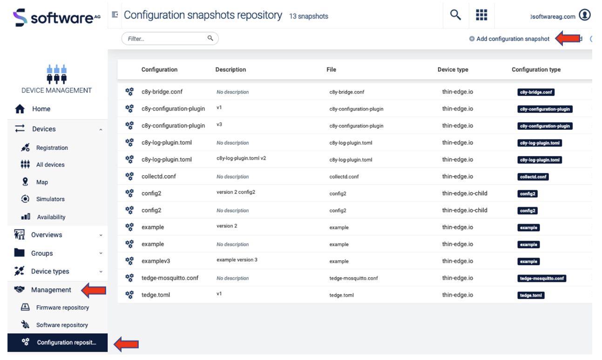
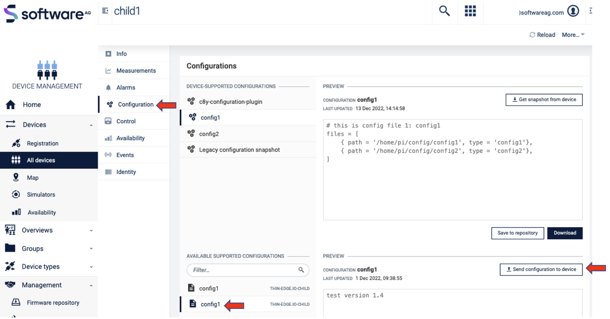

Summary
-
- Tutorials
- Getting started with thin-edge.io
- Connect my device to Cumulocity IoT
- Connect my device to Azure IoT
- Connect my device to AWS IoT
- Send measurements
- Raise alarms
- Send events
- Monitor my device
- Manage my device software
- Write my software management plugin
- Supported Operations Management for Cumulocity IoT
- Build Thin Edge for a Yocto Linux distribution
- Configuration management on child-devices
- Tutorials
-
- Installation
- How to create a test certificate
- How to connect a cloud end-point
- How to send MQTT messages
- How to test the cloud connection?
- How to configure the local mqtt bind address and port
- How to trouble shoot device monitoring
- How to add self-signed certificate root to trusted certificates list?
- How to retrieve JWT token from Cumulocity?
- How to install and enable software management?
- How to connect an external device?
- How to access the logs on the device?
- How to install thin-edge.io on any Linux OS (no deb support)?
- How to restart your thin-edge.io device
- How to use apama software management plugin
- How to change temp path
- How to use thin-edge.io with your preferred init system
- How to monitor health of tedge daemons
- How to enable systemd watchdog monitoring for tedge services?
- How to add custom fragments to Cumulocity
- How to retrieve logs with the log plugin
- How to use Cumulocity Custom SmartREST 2.0 Templates with
thin-edge.io - How to manage configuration files with Cumulocity
- How to install thin-edge manually with OpenRC
- How to enable configuration management on child devices
- How to connect to your thin-edge.io device with Cumulocity remote access
- How to monitor a service from Cumulocity
Overview
Why thin-edge.io
An open-source & cloud-agnostic IoT framework designed for resource-constrained Edge devices.
- Simple and secure device connectivity.
- Freedom of cloud platform.
- Freedom of programming language.
How to start
- The very first step is to install
thin-edge.ioand to connect your device to your IoT cloud, either Cumulocity IoT, Azure IoT or AWS IoT (10 minutes). - You will then be able to send telemetry data to the cloud using a cloud-agnostic message format (5 minutes).
- The next step is to write your own telemetry component, using your preferred programming language, say Rust or Python.
Grow your skills
- Explore the tutorials and use-cases.
- Understand the architecture.
- Use the how-to guides on a daily basis.
- Refer to the reference guides for any in-depth details.
User Documentation
This part of the documentation is meant for users, that want to use thin-edge.io with the feature set that is provided. If you want to develop something on top of thin-edge.io, head over to the Developer Documentation. Even if you do not yet plan to develop for thin-edge.io some of the contents there might be of interest to you to get a deeper technical understanding.
Tutorials
- Connect my device to Cumulocity IoT
- Connect my device to Azure IoT
- Connect my device to AWS IoT
- Send Thin Edge Json data
- Monitor my device
- Manage my device software
- Child device config management
Getting started with thin-edge.io on a Raspberry Pi
After following this tutorial you will have an overview of the installation and configuration of thin-edge.io. As an example, a Raspberry Pi is used. This tutorial explains in small steps to reach the goal of sending data to Cumulocity IoT and performing some additional device management tasks.
Introduction
thin-edge.io is an open-source project to provide a cloud-agnostic edge framework. It is much more generic than the device management agent, so it can connect to multiple IoT cloud platforms, and it allows flexible logic executed on the device. It is optimized for a very small footprint and high performance.
The Raspberry PI is a relatively simple and cheap device but powerful. Therefore it is ideal for testing and try-outs and some production use cases.
Prerequisite
To follow this guide, you only need the following:
-
A Cumulocity IoT Trial tenant.
-
A Raspberry Pi (3 or 4) with Raspian installed, for other boards and OS'es have a look here
-
Updated device:
sudo apt-get update && sudo apt-get upgrade
Steps
This tutorial is divided into small steps. The first three steps are needed to install and connect to Cumulocity IoT. The last three are optional but needed to get a good overview of the capabilities of thin-edge.io.
Step 2 Configure and Connect to Cumulocity IoT
Step 5 Add software management
Step 6 Manage configuration files
Step 1 Install thin-edge.io
There are two ways to install thin-edge.io:
- Use a script
- Manually
The easiest way is to use the installation script with this command:
curl -fsSL https://raw.githubusercontent.com/thin-edge/thin-edge.io/main/get-thin-edge_io.sh | sudo sh -s
This script will install the latest version of thin-edge.io with the following components:
- Mosquitto
- Command line Interface (CLI) tool
- Tedge mapper
It is possible to do the installation of thin-edge.io manually or install another version or upgrade the current version. For more information on that, please have a look here for more information.
After a successful installation, it is possible to use thin-edge.io via the CLI and use the tedge commands.
Tedge CLI
In the previous step, the CLI tool is installed, which is a very powerful
The usage is as follows:
tedge [OPTIONS] [SUBCOMMAND]
and -h can be used to see the help for the latest subcommand.
When running this command something similar like the following will be displayed:
sudo tedge -h
tedge 0.9.0
tedge is the cli tool for thin-edge.io
USAGE:
tedge [OPTIONS] [SUBCOMMAND]
OPTIONS:
--config-dir <CONFIG_DIR> [default: /etc/tedge]
-h, --help Print help information
--init Initialize the tedge
-V, --version Print version information
SUBCOMMANDS:
cert Create and manage device certificate
config Configure Thin Edge
connect Connect to connector provider
disconnect Remove bridge connection for a provider
help Print this message or the help of the given subcommand(s)
mqtt Publish a message on a topic and subscribe a topic
Here is an overview of the commands for the CLI tool.
The CLI will be used to configure the thin-edge.io installation on the device in the next steps.
Step 2 Configure and Connect to Cumulocity IoT
To connect the device to the Cumulocity IoT it needs to be configured. The following configuration parameter is mandatory:
C8Y URL
This URL is needed to allow the upload of the certificate to the specific tenant and the registration of the device. It can be configured via:
sudo tedge config set c8y.url {{YOUR_C8Y_URL}}
Certificate
thin-edge.io connects via MQTT protocol using a X.509 certificate for authentication. To do so, a certificate must be trusted by Cumulocity IoT. A certificate is trusted when it is added to the trusted certificates and is in an activated state.
First, we need to create the device certificate locally (If the device certificate is already uploaded, directly via the UI to Cumulocity IoT this step can be skipped).
sudo tedge cert create --device-id {{YOUR_UNIQUE_DEVICE_ID}}
The device id is a unique identifier e.g. the MAC address that identifies the physical device.
The certificate is uploaded to the Cumulocity IoT Tenant via:
sudo tedge cert upload c8y --user {{YOUR_USERNAME}}
If the password prompt appears, enter your password.
NOTE: In a production environment, it is not recommended to use the above self-signed certificate, which is for demo purposes. If you plan to use this tutorial as a basis for production, please have a look here: Registering devices using certificates.
Connect
We now are ready to connect the device to Cumulocity IoT. This can be achieved via:
sudo tedge connect c8y
When the connection is established, the device will be created in Cumulocity IoT. When you go to Device Management -> Devices -> All devices, the device is visible in the list.

Step 3 Sending Device Data
Once your device is configured and connected to Cumulocity IoT, you can start sending measurements, events or alarms. In the standard configuration, you can not connect externally to the mosquito broker and thus the messages have to be sent directly from the device itself.
The tedge CLI allows you to send payloads via MQTT the following way:
tedge mqtt pub {{TOPIC}} {{PAYLOAD}}
thin-edge.io comes with a tedge-mapper daemon. This process collects the data from the tedge/# topics and translates them to the tedge payloads on the c8y/# topics which are mapped directly to Cumulocity IoT. The mapper translates simple JSON to the desired target payload for Cumulocity IoT.
Sending measurements
Measurements within Cumulocity IoT represent regularly acquired readings and statistics from sensors.
A simple single-valued measurement like a temperature measurement can be represented in Thin Edge JSON as follows:
{ "temperature": 25 }
With the key-value pair representing the measurement type and the numeric value of the measurement. The endpoint that is supervised by the tedge-mapper for measurements is:
tedge/measurements
The temperature measurement described above can be sent as follows:
tedge mqtt pub tedge/measurements '{ "temperature": 25 }'
Sending events
Events are used to pass real-time information, which is not just plain sensor values, through Cumulocity IoT.
A simple event can be represented in Thin Edge JSON as follows:
{
"text": "A door was closed",
"time": "2022-06-10T05:30:45+00:00"
}
The endpoint that is supervised by the tedge-mapper for events is:
tedge/events/{{event-type}}
So the door open event described above can be sent as follows:
tedge mqtt pub tedge/events/door '{"text": "A door was closed","time": "2022-06-10T05:30:45+00:00"}'
When you go to events (Device management -> your device -> events ), you should see this:
Step 4 Monitor the device
With thin-edge.io device monitoring, you can collect metrics from the device and forward these device metrics to Cumulocity IoT.
thin-edge.io uses the open source component collectd to collect the metrics from the device. thin-edge.io translates the collected metrics from their native format to the thin-edge.io JSON format and then into the cloud-vendor-specific format.
Enabling monitoring on your device is a 3-steps process:
- Install collectd
- Configure collectd
- Enable thin-edge.io monitoring
Install collectd
Because thin-edge.io uses the MQTT plugin of collectd, installation of the Mosquitto client library (either libmosquitto1 or mosquitto-clients) is required.
sudo apt-get install libmosquitto1
To install collectd:
sudo apt-get install collectd-core
Configure collectd
thin-edge.io provides a basic collectd configuration that can be used to collect CPU, memory and disk metrics.
Simply copy the file to the main collectd configuration file and restart the daemon.
sudo cp /etc/tedge/contrib/collectd/collectd.conf /etc/collectd/collectd.conf
sudo systemctl restart collectd
What you should see by now is that data arrives on the collectd/# topics. You can check that via:
tedge mqtt sub collectd/#
The output will be similar like:
tedge mqtt sub 'collectd/#'
INFO: Connected
[collectd/raspberrypi/df-root/percent_bytes-used] 1667205183.407:11.7998857498169
[collectd/raspberrypi/memory/percent-used] 1667205183.408:4.87045198079293
[collectd/raspberrypi/cpu/percent-active] 1667205184.398:1.52284263959391
Enable Collectd
To enable monitoring on your device, you have to launch the tedge-mapper-collectd daemon process. This process collects the data from the collectd/# topics and translates them to the tedge payloads on the c8y/# topics.
sudo systemctl start tedge-mapper-collectd
sudo systemctl enable tedge-mapper-collectd
You can inspect the collected and translated metrics, by subscribing to these topics:
tedge mqtt sub 'c8y/#'
The output will be similar like:
tedge mqtt sub 'c8y/#'
INFO: Connected
[c8y/measurement/measurements/create] {"type":"ThinEdgeMeasurement","time":"2022-10-31T08:35:44.398000001Z","cpu":{"percent-active":{"value":1.26262626262626}},"memory":{"percent-used":{"value":4.87024847292786}}}
[c8y/measurement/measurements/create] {"type":"ThinEdgeMeasurement","time":"2022-10-31T08:35:45.398000001Z","memory":{"percent-used":{"value":4.87024847292786}},"cpu":{"percent-active":{"value":1.01522842639594}}}
[c8y/measurement/measurements/create] {"type":"ThinEdgeMeasurement","time":"2022-10-31T08:35:46.398000001Z","memory":{"percent-used":{"value":4.87024847292786}},"cpu":{"percent-active":{"value":0.759493670886076}}}
[c8y/measurement/measurements/create] {"type":"ThinEdgeMeasurement","time":"2022-10-31T08:35:47.398000001Z","memory":{"percent-used":{"value":4.87024847292786}},"cpu":{"percent-active":{"value":2.01005025125628}}}
[c8y/measurement/measurements/create] {"type":"ThinEdgeMeasurement","time":"2022-10-31T08:35:48.398000001Z","memory":{"percent-used":{"value":4.87004496506279}},"cpu":{"percent-active":{"value":0.254452926208651}}}
The monitoring data will appear in Cumulocity IoT on the device in the measurement section.

Edit Collectd
To change the monitored data, it is needed to change the collectd.conf. This can be done via Cumulocity IoT. In Step 6 is explained how to do that.
Step 5 Add software management
Software management takes care of allowing installation and management of any type of software from Cumulocity IoT. Since the type is generic, any type of software can be managed. In thin-edge.io this can be extended with plugins. For every software type, a particular plugin is needed.
The following plugins do exist:
- Docker
- APT
- Docker-compose
- Snap
To use those plugins they need to be copied to:
/etc/tedge/sm-plugins
The APT plugin is installed automatically. You can find the other plugins in the repository. Make sure to disconnect/reconnect the device after adding plugins via:
sudo tedge disconnect c8y
sudo tedge connect c8y
Adding new software into the software repository in Cumulocity IoT
-
Go to Cumulocity IoT
-
Go to
Management->Software repository(left in the menu) and clickAdd softwareat the right of the top menu bar. -
In the dialog box, enter a name for the software and confirm it by clicking
Add new, a description and its version. -
thin-edge.io contains a default plugin supporting
debianpackages from bothaptrepositories as well as remote locations. If you prefer to use packages from anaptrepository, select theProvide a file pathoption and give an empty space (' ').
If you would like to use other sources (eg. a file uploaded to your cloud or an external source), provide the full URL to the file.
If you would like to upload your binaries, select Upload a binary option and upload the file to Cumulocity IoT software repository.
- Press
Add Softwarebutton.
Installing software on a device
- Go to Cumulocity IoT
- Click
All devicesin the Devices menu, select the desired device from the device list and open its Software tab.
The Software tab shows a list of all available software installed on the device. If a given software has a type, it will be displayed next to its name. It is possible to search for a particular software by its name or filter the list by software type.
3. Click on Install software, on the bottom of the page
4. Find/select the software which was added to the repository in the previous step.
5. Select the right version and click on install
6. Then click on apply changes, the software will be installed.
When a different version of the already installed software needs to be installed, choose in step 4 the installed software from the list and in step 5 the right version.
Find more information about how to manage the software on a device.
How to develop your own plugins is described here.
Step 6 Manage configuration files
With thin-edge.io it is possible to manage config files on a device by using the Cumulocity IoT configuration management feature as a part of Device Management.
This functionality is directly installed with the initial script. However, it is needed to configure the /etc/tedge/c8y/c8y-configuration-plugin.toml and add the entries for the configuration files which need to be managed. Just copy the following content to that file:
files = [
{ path = '/etc/tedge/tedge.toml' },
{ path = '/etc/tedge/mosquitto-conf/c8y-bridge.conf', type = 'c8y-bridge.conf' },
{ path = '/etc/tedge/mosquitto-conf/tedge-mosquitto.conf', type = 'tedge-mosquitto.conf' },
{ path = '/etc/mosquitto/mosquitto.conf', type = 'mosquitto.conf' }
]
where:
- path is the full path to the configuration file.
- type is a unique alias for each file entry which will be used to represent that file in Cumulocity UI.
Then start the configuration plugin process and enable it on boot by systemctl .
sudo systemctl start c8y-configuration-plugin.service
sudo systemctl enable c8y-configuration-plugin.service
Then navigate to Cumulocity IoT Device Management and the desired device. Open its Configuration tab. You can find c8y-configuration-plugin and more are listed as supported configuration types, as declared in the plugin configuration file. Here you can save the configuration files into the repository or download them.
Change configuration files via Cumulocity IoT.
If there is a need to change one or more configuration files, there is more than one option to follow:
- Create a whole new configuration file
- Change an existing configuration file
In this tutorial the last option is explained, there are some steps to be taken:

-
Save the configuration file to the repository (
Device management -> configuration. In the list of configuration files pick a file to change and click onSave to repository). -
Go to
Management -> configuration snapshots repository. -
Download the configuration file which needs to be changed (the one you saved to the repository in step 1).
-
Edit this file as needed.
-
Click on
Add configuration snapshot(top right). -
Fill the fields, make sure the device type is
thin-edge.io, select the right Configuration type and add the (just edited) configuration file and click onAdd configuration. -
Go back to the device and then to the configuration. In the Available supported configuration you will see the configuration file which was just created. When you click on it, you will see the content.
-
Then click on
send configuration to devicethe configuration file is uploaded to the device. -
If you then click on
get snapshot from device(select the right configuration file in device supported configurations), you will see the change of the configuration file. -
Then click on
send configuration to devicethe configuration file is uploaded to the device. -
If you then click on
get snapshot from device(select the right configuration file in device-supported configurations), you will see the change of the configuration file.

Change collectd configuration file via Cumulocity IoT.
To change the collectd metrics of the device, which are displayed in Cumulocity IoT, the next steps are needed. These are similar to the steps in the previous paragraphs.
-
Add this line
{ path = '/etc/collectd/collectd.conf', type = 'collectd.conf' },to the/etc/tedge/c8y/c8y-configuration-plugin.tomlfile. -
Save the configuration file to the repository
-
Go to
Management -> configurationsnapshots repository -
Download the configuration file which needs to be changed
-
Edit this file as needed
-
Click on
Add configuration snapshot(top right) -
Fill in the fields, make sure the device type is
thin-edge.ioand select the right Configuration type and add the (just edited) configuration file.) and click onAdd configuration -
Go back to the device and then to the configuration. In the Available supported configuration you will see the configuration file which was just created. When you click on it, you will see the content
-
Then click on
send configuration toe devicethe configuration file is uploaded to the device. -
If you then click on get snapshot from device (select the right configuration file in device supported configurations), you will see the change of the configuration file.
Step 7 Manage Log Files
With thin-edge.io it is possible to request log files from a device by using the Cumulocity IoT log request feature as a part of Device Management.
This functionality is also directly installed with the initial script, but some configuration is needed for the /etc/tedge/c8y/c8y-log-plugin.toml and add the entries for the log files that can be requested. Just copy the following content to that file:
files = [
{ type = "software-management", path = "/var/log/tedge/agent/software-*" },
{ type = "mosquitto", path = "/var/log/mosquitto/mosquitto.log" },
{ type = "daemon", path = "/var/log/daemon.log" },
{ type = "user", path = "/var/log/user.log" },
{ type = "apt-history", path = "/var/log/apt/history.log" },
{ type = "apt-term", path = "/var/log/apt/term.log" },
{ type = "auth", path = "/var/log/auth.log" },
{ type = "dpkg", path = "/var/log/dpkg.log" },
{ type = "kern", path = "/var/log/kern.log" }
]
The daemon is started/enabled via:
sudo systemctl start c8y-log-plugin
sudo systemctl enable c8y-log-plugin
To see the content of the log files in Cumulocity IoT, take the following steps:
-
Go to device management and select the right device.
-
Select
Logs. In this screen, you can request Log files -
Click on
Request log file(the top right). -
In the next screen you can select a date range and a type of log.
-
Then click on
Request log file. -
Refresh the page.
-
Click on the requested log file, you should see something similar to this:

If c8y-log-plugin.toml is added to the c8y-configuration-plugin.toml it is possible to do the administration from there.
However, keep in mind that the daemon has to be restarted every time the /etc/tedge/c8y/c8y-log-plugin.toml is touched via the command line.
Final remarks and summary
With this getting started tutorial you gained some insights on how to install and configure thin-edge.io on a Raspberry Pi.
If you didn't try the optional steps in this tutorial, it might be a nice idea to work on these as you then get a better insight into the device management capabilities of thin-edge.io. Other things you can work on are capabilities like working with child devices, building your own plugin etc. Tutorials for that can be found here.
Connect your device to Cumulocity IoT
The very first step to enable thin-edge.io is to connect your device to the cloud.
- This is a 10 minutes operation to be done only once.
- It establishes a permanent connection from your device to the cloud end-point.
- This connection is secure (encrypted over TLS), and the two peers are identified by x509 certificates.
- Sending data to the cloud will then be as simple as sending data locally.
The focus is here on connecting to Cumulocity IoT. See this tutorial, if you want to connect Azure IoT instead. See this tutorial, if you want to connect AWS IoT instead.
Before you try to connect your device to Cumulocity IoT, you need:
- The url of the endpoint to connect (e.g.
eu-latest.cumulocity.com). - Your credentials to connect Cumulocity:
- Your tenant identifier (e.g.
t00000007), a user name and password. - None of these credentials will be stored on the device.
- These are only required once, to register the device.
- Your tenant identifier (e.g.
If not done yet, install thin-edge.io on your device.
You can now use the tedge command to:
- create a certificate for you device,
- make the device certificate trusted by Cumulocity,
- connect the device, and
- send your first telemetry data.
Configure the device
To connect the device to the Cumulocity IoT, one needs to set the URL of your Cumulocity IoT tenant and the root certificate as below.
Set the URL of your Cumulocity IoT tenant.
sudo tedge config set c8y.url your-tenant.cumulocity.com
Set the path to the root certificate if necessary. The default is /etc/ssl/certs.
sudo tedge config set c8y.root.cert.path /etc/ssl/certs
This will set the root certificate path of the Cumulocity IoT. In most of the Linux flavors, the certificate will be present in /etc/ssl/certs. If not found download it from here.
Connecting to Cumulocity server signed with self-signed certificate
If the Cumulocity IoT instance that you're connecting to, is signed with a self-signed certificate(eg: Cumulocity IoT Edge instance), then the path to that server certificate must be set as the c8y.root.cert.path as follows:
sudo tedge config set c8y.root.cert.path /path/to/the/self-signed/certificate
Note: This is the certificate chain of the server and not the device's certificate kept at /etc/tedge/device-certs directory.
If the Cumulocity server's certificate chain file isn't available locally, it can be downloaded using a web browser or using some other third-party tools like openssl command as follows (to be adjusted based on your env):
openssl s_client -connect <hostname>:<port> < /dev/null 2>/dev/null | sed -ne '/-BEGIN CERTIFICATE-/,/-END CERTIFICATE-/p'
Create the certificate
The tedge cert create command creates a self-signed certificate which can be used for testing purpose.
A single argument is required: an identifier for the device. This identifier will be used to uniquely identify your devices among others in your cloud tenant. This identifier will be also used as the Common Name (CN) of the certificate. Indeed, this certificate aims to authenticate that this device is actually the device with that identity.
sudo tedge cert create --device-id my-device
Certificate was successfully created
You can then check the content of that certificate.
sudo tedge cert show
Device certificate: /etc/tedge/device-certs/tedge-certificate.pem
Subject: CN=my-device, O=Thin Edge, OU=Test Device
Issuer: CN=my-device, O=Thin Edge, OU=Test Device
Valid from: Tue, 09 Feb 2021 17:16:52 +0000
Valid up to: Tue, 11 May 2021 17:16:52 +0000
Thumbprint: CDBF4EC17AA02829CAC4E4C86ABB82B0FE423D3E
You may notice that the issuer of this certificate is the device itself.
This is a self-signed certificate.
To use a certificate signed by your Certificate Authority,
see the reference guide of tedge cert.
Make the device trusted by Cumulocity
For a certificate to be trusted by Cumulocity, one needs to add the certificate of the signing authority to the list of trusted certificates. In the Cumulocity GUI, navigate to "Device Management/Management/Trusted certificates" in order to see this list for your Cumulocity tenant.
Here, the device certificate is self-signed and has to be directly trusted by Certificate. This can be done:
- either with the GUI: upload the certificate from your device (
/etc/tedge/device-certs/tedge-certificate.pem) to your tenant "Device Management/Management/Trusted certificates". - or using the
tedge cert upload c8ycommand.
sudo tedge cert upload c8y --user <username>
To upload the certificate to cumulocity this user needs to have "Tenant management" admin rights. If you get an error 503 here, check the appropriate rights in cumulocity user management.
Connect the device
Now, you are ready to run tedge connect c8y.
This command configures the MQTT broker:
- to establish a permanent and secure connection to the cloud,
- to forward local messages to the cloud and vice versa.
Also, if you have installed tedge-mapper, this command starts and enables the tedge-mapper-c8y systemd service.
At last, it sends packets to Cumulocity to check the connection.
If your device is not yet registered, you will find the digital-twin created in your tenant after tedge connect c8y!
sudo tedge connect c8y
Checking if systemd is available.
Checking if configuration for requested bridge already exists.
Validating the bridge certificates.
Creating the device in Cumulocity cloud.
Saving configuration for requested bridge.
Restarting mosquitto service.
Awaiting mosquitto to start. This may take up to 5 seconds.
Enabling mosquitto service on reboots.
Successfully created bridge connection!
Sending packets to check connection. This may take up to 2 seconds.
Connection check is successful.
Checking if tedge-mapper is installed.
Starting tedge-mapper-c8y service.
Persisting tedge-mapper-c8y on reboot.
tedge-mapper-c8y service successfully started and enabled!
Enabling software management.
Checking if tedge-agent is installed.
Starting tedge-agent service.
Persisting tedge-agent on reboot.
tedge-agent service successfully started and enabled!
Sending your first telemetry data
Sending data to Cumulocity is done using MQTT over topics prefixed with c8y.
Any messages sent to one of these topics will be forwarded to Cumulocity.
The messages are expected to have a format specific to each topic.
Here, we use tedge mqtt pub a raw Cumulocity SmartRest message to be understood as a temperature of 20 Celsius.
tedge mqtt pub c8y/s/us 211,20
To check that this message has been received by Cumulocity, navigate to "Device Management/Devices/All devices/<your device id>/Measurements". You should observe a "temperature measurement" graph with the new data point.
Next Steps
You can now:
- learn how to send various kind of telemetry data using the cloud-agnostic Thin-Edge-Json data format,
- or have a detailed view of the topics mapped to and from Cumulocity if you prefer to use directly Cumulocity specific formats and protocols.
- learn how to add custom fragments to cumulocity.
Connect your device to Azure IoT
The very first step to enable thin-edge.io is to connect your device to the cloud.
- This is a 10 minutes operation to be done only once.
- It establishes a permanent connection from your device to the cloud end-point.
- This connection is secure (encrypted over TLS), and the two peers are identified by x509 certificates.
- Sending data to the cloud will then be as simple as sending data locally.
The focus is here on connecting the device to Azure IoT. See this tutorial, if you want to connect Cumulocity IoT instead. See this tutorial, if you want to connect AWS IoT instead.
Before you try to connect your device to Azure IoT, you need:
- Create a Azure IoT Hub in Azure portal as described here.
- Install
thin-edge.ioon your device.
You can now use tedge command to:
- create a certificate for your device,
- register the device on Azure IoT Hub,
- configure the device,
- connect the device, and
- send your first telemetry data.
Create the certificate
The tedge cert create command creates a self-signed certificate which can be used for testing purpose.
A single argument is required: an identifier for the device. This identifier will be used to uniquely identify your devices among others in your cloud tenant. This identifier will be also used as the Common Name (CN) of the certificate. Indeed, this certificate aims to authenticate that this device is the device with that identity.
sudo tedge cert create --device-id my-device
Certificate was successfully created
Show certificate details
You can then check the content of that certificate.
sudo tedge cert show
Device certificate: /etc/tedge/device-certs/tedge-certificate.pem
Subject: CN=my-device, O=Thin Edge, OU=Test Device
Issuer: CN=my-device, O=Thin Edge, OU=Test Device
Valid from: Tue, 09 Mar 2021 14:10:30 +0000
Valid up to: Thu, 10 Mar 2022 14:10:30 +0000
Thumbprint: 860218AD0A996004449521E2713C28F67B5EA580
You may notice that the issuer of this certificate is the device itself.
This is a self-signed certificate.
The Thumbprint is the Sha1sum of the certificate. This is required for registering the
device using the self-signed certificate on Azure IoT Hub.
To use a certificate signed by your Certificate Authority,
see the reference guide of tedge cert.
Register the device on Azure IoT Hub
For a device to be trusted by Azure, one needs to add the self-signed certificate thumbprint to the Azure IoT Hub Portal. In the Azure IoT Hub Portal, navigate to "Explores"->"IoT Devices" click on "+ New", this will open a new blade "Create a device".
Here provide the configuration parameters that are required to create the device as described below.
- Device ID: Should be the same as the Subject of the certificate.
- Authentication type: Select X.509 Self-Signed option.
- Provide the Primary Thumbprint that was displayed in
tedge cert show. - Use the same for the Secondary Thumbprint as well (Since we are using a single certificate).
- Provide the Primary Thumbprint that was displayed in
- Set "Connect this device to an IoT Hub" to Enable.
- Then save the configuration. Upon successfully saved the configuration a new device has been created on the IoT Hub. The new device can be seen on the IoT Hub portal by navigating to "Explores"->"IoT Devices".
More info about registering a device can be found here
Configure the device
To connect the device to the Azure IoT Hub, one needs to set the URL/Hostname of the IoT Hub and the root certificate of the IoT Hub as below.
Set the URL/Hostname of your Azure IoT Hub.
sudo tedge config set az.url your-iot-hub-name.azure-devices.net
The URL/Hostname can be found in the Azure web portal, clicking on the overview section of your IoT Hub.
Set the path to the root certificate if necessary. The default is /etc/ssl/certs.
sudo tedge config set az.root.cert.path /etc/ssl/certs/Baltimore_CyberTrust_Root.pem
This will set the root certificate path of the Azure IoT Hub. In most of the Linux flavors, the certificate will be present in /etc/ssl/certs. If not found download it from here.
Connect the device
Now, you are ready to get your device connected to Azure IoT Hub with tedge connect az.
This command configures the MQTT broker:
- to establish a permanent and secure connection to the Azure cloud,
- to forward local messages to the cloud and vice versa.
Also, if you have installed tedge-mapper, this command starts and enables the tedge-mapper-az systemd service.
At last, it sends packets to Azure IoT Hub to check the connection.
sudo tedge connect az
Checking if systemd is available.
Checking if configuration for requested bridge already exists.
Validating the bridge certificates.
Saving configuration for requested bridge.
Restarting mosquitto service.
Awaiting mosquitto to start. This may take up to 5 seconds.
Enabling mosquitto service on reboots.
Successfully created bridge connection!
Sending packets to check connection. This may take up to 2 seconds.
Connection check is successful.
Checking if tedge-mapper is installed.
Starting tedge-mapper-az service.
Persisting tedge-mapper-az on reboot.
tedge-mapper-az service successfully started and enabled!
Sending your first telemetry data
Sending data to Azure is done using MQTT over topics prefixed with az.
Any messages sent on the topic will be forwarded to Azure.
Here, we use tedge mqtt pub az/messages/events/ a message to be understood as a temperature of 20 Degree.
tedge mqtt pub az/messages/events/ '{"temperature": 20}'
To view the messages that were sent from the device to the cloud, follow this document.
More info about sending telemetry to Azure can be found here
Next Steps
You can now:
- learn how to send various kind of telemetry data using the cloud-agnostic Thin-Edge-Json data format,
- or have a detailed view of the topics mapped to and from Azure if you prefer to use directly Azure specific formats and protocols.
Connect your device to AWS IoT
The very first step to enable thin-edge.io is to connect your device to the cloud.
- This is a 10 minutes operation to be done only once.
- It establishes a permanent connection from your device to the cloud end-point.
- This connection is secure (encrypted over TLS), and the two peers are identified by x509 certificates.
- Sending data to the cloud will then be as simple as sending data locally.
The focus is here on connecting the device to AWS IoT. See this tutorial, if you want to connect Cumulocity IoT instead. See this tutorial, if you want to connect Azure IoT instead.
Before you try to connect your device to AWS IoT, you need:
You can now use tedge command to:
- create a certificate for your device,
- register the device on AWS IoT Hub,
- configure the device,
- connect the device, and
- send your first telemetry data.
Create the certificate
The tedge cert create command creates a self-signed certificate which can be used for testing purpose.
A single argument is required: an identifier for the device. This identifier will be used to uniquely identify your devices among others in your cloud tenant. This identifier will be also used as the Common Name (CN) of the certificate. Indeed, this certificate aims to authenticate that this device is the device with that identity.
sudo tedge cert create --device-id my-device
Show certificate details
You can then check the content of that certificate.
$ sudo tedge cert show
Device certificate: /etc/tedge/device-certs/tedge-certificate.pem
Subject: CN=my-device, O=Thin Edge, OU=Test Device
Issuer: CN=my-device, O=Thin Edge, OU=Test Device
Valid from: Tue, 09 Mar 2021 14:10:30 +0000
Valid up to: Thu, 10 Mar 2022 14:10:30 +0000
Thumbprint: 860218AD0A996004449521E2713C28F67B5EA580
You may notice that the issuer of this certificate is the device itself.
This is a self-signed certificate.
To use a certificate signed by your Certificate Authority,
see the reference guide of tedge cert.
Register the device on AWS IoT Hub
For a device to be trusted by AWS, one needs a device certificate and the tedge cert create command is the simplest way to get one.
Also a policy needs to be attached to the device certificate in AWS IoT Core. AWS IoT Core policies determine what an
authenticated identity can do (here the authenticated identity is the device being connected). More info on AWS IoT Core
policies can be found here.
To create a new policy, head over to the AWS IoT Core and navigate to Security -> Policies -> Create policy -> Policy properties -> Policy name -> Enter the name of your policy (e.g.tedge)
On the Policy statements tab click on JSON and enter the policy in the Policy document (an example policy can be found here) then click Create
In the AWS IoT Core, navigate to Manage -> All devices -> Things -> Create things -> Create Single thing -> Next. Enter the Thing name which can be obtained from the device with: tedge config get device.id
In the Device Shadow section which allows connected devices to sync states with AWS choose Unnamed shadow (classic) and click Next and Configure device certificate - optional page opens.
At Device certificate choose Use my certificate -> CA is not registered with AWS IoT then Choose file and select your tedge-certificate.pem file, click on Open -> Next.
The last step needed is to attach previously created policy to your certificate, Attach policies to certificate -optional -> Select your created policy -> Create thing.
Configure the device
To connect the device to the AWS IoT Hub, one needs to set the URL of the IoT Hub and the root certificate of the IoT Hub as below.
Set the URL of your AWS IoT Hub.
sudo tedge config set aws.url [your-aws-url.com]
The URL is unique to the AWS account and region that is used, and can be found in the AWS IoT Core by navigating to
"Settings". It will be listed under "Device data endpoint" (e.g. a2e8ahbpo21syc.iot.eu-central-1.amazonaws.com)
Set the path to the root certificate if necessary. The default is /etc/ssl/certs.
sudo tedge config set aws.root.cert.path /etc/ssl/certs/AmazonRootCA1.pem
This will set the root certificate path of the AWS IoT Hub. In most of the Linux flavors, the certificate will be present in /etc/ssl/certs. If not found download it from here.
Connect the device
Now, you are ready to get your device connected to AWS IoT Hub with tedge connect aws.
This command configures the MQTT broker:
- to establish a permanent and secure connection to the AWS cloud,
- to forward local messages to the cloud and vice versa.
Also, if you have installed tedge_mapper, this command starts and enables the tedge-mapper-aws systemd service.
At last, it sends packets to AWS IoT Hub to check the connection.
$ sudo tedge connect aws
Checking if systemd is available.
Checking if configuration for requested bridge already exists.
Validating the bridge certificates.
Saving configuration for requested bridge.
Restarting mosquitto service.
Awaiting mosquitto to start. This may take up to 5 seconds.
Enabling mosquitto service on reboots.
Successfully created bridge connection!
Sending packets to check connection. This may take up to 2 seconds.
Received expected response on topic aws/connection-success, connection check is successful.
Connection check is successful.
Checking if tedge-mapper is installed.
Starting tedge-mapper-aws service.
Persisting tedge-mapper-aws on reboot.
tedge-mapper-aws service successfully started and enabled!
Sending your first telemetry data
Using the AWS mapper, you can publish measurement telemetry data to AWS by publishing on the tedge/measurements topic:
tedge mqtt pub tedge/measurements '{"temperature": 21.3}'
Alternatively, post your own custom messages on aws/td/# topic:
tedge mqtt pub aws/td '{"text": "My message"}'
To view the messages that were sent from the device to the cloud, follow this document.
Next Steps
You can now:
- learn how to send various kind of telemetry data using the cloud-agnostic Thin-Edge-Json data format,
- or have a detailed view of the topics mapped to and from AWS if you prefer to use directly AWS specific formats and protocols.
Send Thin Edge JSON data
Once your Thin Edge device is configured and connected to an IoT cloud provider, you can start sending measurements. Refer to Connecting to Cumulocity or tutorials for other cloud providers to learn how to connect your Thin Edge device to an IoT cloud provider.
In this tutorial, we'll see how different kinds of measurements are represented in Thin Edge JSON format and how they can be sent to the connected cloud provider. For a more detailed specification of this data format, refer to Thin Edge JSON Specification.
Sending measurements
A simple single-valued measurement like a temperature measurement, can be represented in Thin Edge JSON as follows:
{ "temperature": 25 }
with the key-value pair representing the measurement type and the numeric value of the measurement.
This measurement can be sent from the Thin Edge device to the cloud by publishing this message to the tedge/measurements MQTT topic.
Processes running on the Thin Edge device can publish messages to the local MQTT broker using any MQTT client or library.
In this tutorial, we'll be using the tedge mqtt pub command line utility for demonstration purposes.
The temperature measurement described above can be sent using the tedge mqtt pub command as follows:
tedge mqtt pub tedge/measurements '{ "temperature": 25 }'
The first argument to the tedge mqtt pub command is the topic to which the measurements must be published to.
The second argument is the Thin Edge JSON representation of the measurement itself.
When connected to a cloud provider, a message mapper component for that cloud provider would be running as a daemon,
listening to any measurements published to tedge/measurements.
The mapper, on receipt of these Thin Edge JSON measurements, will map those measurements to their equivalent
cloud provider native representation and send it to that cloud.
For example, when the device is connected to Cumulocity, the Cumulocity mapper component will be performing these actions.
To check if these measurements have reached Cumulocity, login to your Cumulocity dashboard and navigate to
Device Management => Devices => All devices =>
Complex measurements
You can represent measurements that are far more complex than the single-valued ones described above using the Thin Edge JSON format.
A multi-valued measurement like three_phase_current that consists of L1, L2 and L3 values,
representing the current on each phase can be represented as follows:
{
"three_phase_current": {
"L1": 9.5,
"L2": 10.3,
"L3": 8.8
}
}
Here is another complex message consisting of single-valued measurements: temperature and pressure
along with a multi-valued coordinate measurement, all sharing a single timestamp captured as time.
{
"time": "2020-10-15T05:30:47+00:00",
"temperature": 25,
"current": {
"L1": 9.5,
"L2": 10.3,
"L3": 8.8
},
"pressure": 98
}
The time field is not a regular measurement like temperature or pressure but a special reserved field.
Refer to Thin Edge JSON Specification for more details on the kinds of telemetry
data that can be represented in Thin Edge JSON format and the reserved fields like time used in the above example.
Sending measurements to child devices
Note: Currently this feature supports Cumulocity IoT only.
If valid Thin Edge JSON measurements are published to the tedge/measurements/<child-id> topic,
the measurements are recorded under a child device of your thin-edge.io device.
Given your desired child device ID is child1, publish a Thin Edge JSON message to the tedge/measurements/child1 topic:
tedge mqtt pub tedge/measurements/child1 '{ "temperature": 25 }'
Then, you will see a child device with the name child1 is created in your Cumulocity IoT tenant,
and the measurement is recorded in Measurements of the child1 device.
Error detection
If the data published to the tedge/measurements topic are not valid Thin Edge JSON measurements, those won't be
sent to the cloud but instead you'll get a feedback on the tedge/errors topic, if you subscribe to it.
The error messages published to this topic will be highly verbose and may change in the future.
So, use it only for debugging purposes during the development phase and it should not be used for any automation.
You can use the tedge mqtt sub command to subscribe to the error topic as follows:
tedge mqtt sub tedge/errors
Thin Edge Alarm
Alarms on thin-edge.io can be used to create alerts, represent state changes etc. For example, an alarm can be raised when a certain measurement value breaches some threshold (like high temperature) or when an unexpected event occurs in the system (like a sensor failure).
A typical alarm cycle starts by the raising of an alarm by some monitoring process which alerts a system/human of an event needing some action. Once some action is taken, the alarm is cleared explicitly by that system/human.
Every alarm is uniquely identified by its type and severity. That is, for a given alarm type, alarms of varying severities are treated as independent alarms and hence, must be acted upon separately. For an alarm of a given type and severity, only the last known state is considered relevant. Thin-edge.io doesn't keep a history of all its state changes but only reacts to the last one it receives.
Raising an alarm
An alarm can be raised on thin-edge.io by sending an MQTT message in Thin Edge JSON format to certain MQTT topics.
The scheme of the topic to publish the alarm data is as follows:
tedge/alarms/<severity>/<alarm-type>
The payload format must be as follows:
{
"text": "<alarm text>",
"time": "<Timestamp in ISO-8601 format>"
}
Note: These messages must be sent with MQTT retained flag enabled and with QOS > 1 to ensure guaranteed processing by thin-edge.io. Enabling the retained flag ensures that the alarm stays persisted with the MQTT broker until its state changes again. These retained messages will make sure that the thin-edge.io processes or any other third-party processes subscribed to these alarms will get those, even if they were down at the moment the alarm was raised. If multiple messages are sent to the same alarm topic, the last alarm is considered to have overwritten the previous one.
Here is a sample alarm raised for temperature_high alarm type with critical severity:
Topic:
tedge/alarms/critical/temperature_high
Payload:
{
"text": "Temperature is very high",
"time": "2021-01-01T05:30:45+00:00"
}
Note: Both the
textfield and thetimefield are optional. When atextis not provided, it is assumed to be empty. Whentimeis not provided, thin-edge.io will use the current system time as thetimeof the alarm. When you want to skip both fields, use an empty json fragment{}as the payload to indicate the same. An empty message can't be used for the same, as empty messages are used to clear alarms, which is discussed in the next section.
The <severity> value in the MQTT topic can only be one of the following values:
- critical
- major
- minor
- warning
There are no such restrictions on the <alarm-type> value.
Thin-edge.io doesn't keep any history of all alarms raised on an alarm topic.
Clearing alarms
An already raised alarm can be cleared by sending an empty message with retained flag enabled to the same alarm topic on which the original alarm was raised.
For example temperature_alarm will be cleared by publishing an empty payload message as below:
tedge mqtt pub tedge/alarms/critical/temperature_alarm "" -q 2 -r
Note: Using the retained (-r) flag is a must while clearing the alarm as well, without which the alarm won't be cleared properly.
If alarms of different severities exist for a given alarm type, they must all be cleared separately as they're all treated as independent alarms.
Raising alarms from child devices
Alarms for child devices can be raised by publishing the alarm payload to tedge/alarms/<severity>/<alarm-type>/<child-device-id> topic,
where the child-device-id is the unique device id of the child device.
The alarm payload structure is the same, as described in the previous section.
Raising an alarm with custom fragment
Thin-edge supports the creation of alarms using custom (user-defined) fragments. Custom fragments are supported for both the main and child devices. The custom fragments can be a simple json value or a complex json value.
For example, an alarm with simple custom fragment field named details:
Payload:
{
"text": "Temperature is very high",
"time": "2021-01-01T05:30:45+00:00",
"details": "A custom alarm info"
}
For example, an alarm with complex custom fragments
Payload:
{
"text": "Temperature is very high",
"time": "2021-01-01T05:30:45+00:00",
"someOtherCustomFragment": {
"nested": {
"value": "extra info"
}
}
}
Note: Other than
textandtimefields, all the other fields are considered as custom fragments.
Raising an alarm with empty json payload
Alarms can also be raised with an empty json object as payload as follows:
Payload:
{}
Note: The
defaultvalue for thetimefragment will be the timestamp in utc time that is added by thetedge-mapper-c8ywhile alarm message being translated to cumulocity format. The default value for thetextfragment will be derived from thealarm-typeof the topic.
Cloud data mapping
If the device is connected to some supported IoT cloud platform, any alarms raised locally on thin-edge.io will be forwarded to the connected cloud platform as well. The mapping of thin-edge alarms data to its respective cloud-native representation will be done by the corresponding cloud mapper process. For example, if the device is connected to Cumulocity IoT cloud platform, the Cumulocity cloud mapper process will translate the thin-edge alarm JSON data to its equivalent Cumulocity SmartREST representation.
Warning: As of now, alarm data mapping is supported only on Cumulocity IoT cloud platform.
Cumulocity cloud data mapping
The Cumulocity mapper will convert Thin Edge JSON alarm into Cumulocity SmartREST messages and send it to Cumulocity via MQTT.
For example the temperature_high alarm with critical severity described in the earlier sections will be converted to the following Cumulocity SmartREST message:
301,temperature_high,"Temperature is very high",2021-01-01T05:30:45+00:00
... and is published to c8y/s/us topic which will get forwarded to the connected Cumulocity cloud instance.
If the alarm is raised from a child device, the payload is published to c8y/s/us/<child-device-id> topic instead.
If an alarm contains a custom fragment then, the alarm message will be converted to cumulocity json
format and then will be published on to c8y/alarm/alarms/create topic.
An example of the translated custom message for thin-edge device will be as below
{
"severity":"MAJOR",
"type":"temperature_high",
"time":"2023-01-25T18:41:14.776170774Z",
"text":"Temperature High",
"someOtherCustomFragment":
{
"nested":
{
"value": "extra info"
}
}
}
An example of the translated cumulocity alarm message for a child device with a custom fragment will be as below
{
"severity":"MAJOR",
"type":"pressure_alarm",
"time":"2023-01-25T18:41:14.776170774Z",
"text":"Pressure alarm",
"someOtherCustomFragment":
{
"nested":
{
"value": "extra info"
}
}
"externalSource":
{
"externalId":"child_device_id",
"type":"c8y_Serial"
}
}
Find more information about SmartREST representations for alarms in Cumulocity here
Find more information about alarms data model in Cumulocity here
Thin Edge Event
Events on thin-edge.io can be used to trigger signals when some event happens in the system. For example, a person entering a room or someone logging into a machine/website can all be represented as events. Events are stateless and hence are processed as and when they occur. They don't represent state but can be used to represent state changes. An event can't be updated/cleared once its triggered, unlike alarms that are cleared explicitly after processing.
Every event is uniquely identified by its type. If multiple events are raised for a given type, thin-edge.io will process them all separately in the order in which they were raised.
Sending an event
An event can be triggered on thin-edge.io by sending an MQTT message in Thin Edge JSON format to certain MQTT topics.
The scheme of the topic to publish the event data is as follows:
tedge/events/<event-type>
The payload format must be as follows:
{
"text": "<event text>",
"time": "<Timestamp in ISO-8601 format>"
}
Here is a sample event triggered for a login_event event type:
Topic:
tedge/events/login_event
Payload:
{
"text": "A user just logged in",
"time": "2021-01-01T05:30:45+00:00"
}
Note: Both the
textfield and thetimefield are optional.
When the message field is not provided, the event-type from the MQTT topic will be used as the message as well if the connected cloud mandates one.
When the time field is not provided, thin-edge.io will use the current system time as the time of the event.
When you want to skip both fields, use an empty payload to indicate the same.
There are no such restrictions on the <event-type> value.
Sending events from child devices
Events for child devices can be sent by publishing the event payload to tedge/events/<event-type>/<child-device-id> topic,
where the child-device-id is the unique device id of the child device.
The event payload structure is the same, as described in the previous section.
Cloud data mapping
If the device is connected to some supported IoT cloud platform, an event that is triggered locally on thin-edge.io will be forwarded to the connected cloud platform as well. The mapping of thin-edge events data to its respective cloud-native representation will be done by the corresponding cloud mapper process. For example, if the device is connected to Cumulocity IoT cloud platform, the Cumulocity cloud mapper process will translate the thin-edge event JSON data to its equivalent Cumulocity SmartREST representation.
Warning: As of now, event data mapping is supported only on Cumulocity IoT cloud platform.
Cumulocity cloud data mapping
The Cumulocity mapper will convert Thin Edge JSON events into its Cumulocity SmartREST equivalent if the payload only contains either a text field or time field.
For example the login_event described in the earlier sections will be converted to the following Cumulocity SmartREST message:
400,login_event,"A user just logged in",2021-01-01T05:30:45+00:00
... and is published to c8y/s/us topic which will get forwarded to the connected Cumulocity cloud instance.
If the event JSON payload contains fields other than text and time, or when the payload size is more than 16K irrespective of its contents, it will be converted to Cumulocity JSON format.
The Cumulocity JSON mapping of the same event would be as follows:
{
"type":"login_event",
"text":"A user just logged in",
"time":"2021-01-01T05:30:45+00:00",
"externalSource":{
"externalId":"<child-device-id>",
"type":"c8y_Serial"
}
}
Note: Mapped events will be sent to Cumulocity via MQTT if the incoming Thin Edge JSON event payload size is less than 16K bytes. If higher, HTTP will be used.
Find more information about events data model in Cumulocity here.
Sending an event for a child/external device to the cloud
An event for a child/external device can be triggered on thin-edge.io by sending an MQTT message in Thin Edge JSON format to certain MQTT topics.
The scheme of the topic to publish the event data is as follows:
tedge/events/<event-type>/<child-device-id>
The payload format must be as follows:
{
"type":"<event type>",
"text": "<event text>",
"time": "<Timestamp in ISO-8601 format>"
}
Here is a sample event triggered for a login_event event type for the external_sensor child device:
Command to send the event from a external device as below:
sudo tedge mqtt pub tedge/events/login_event/external_sensor '{
"type":"login_event",
"text":"A user just logged in",
"time":"2021-01-01T05:30:45+00:00"
}'
Payload:
{
"type": "login_event",
"text": "A user just logged in",
"time": "2021-01-01T05:30:45+00:00"
}
Mapping of events to cloud-specific data format
If the child/external device is connected to some supported IoT cloud platform, an event that is triggered locally on thin-edge.io will be forwarded to the connected cloud platform as well. The mapping of thin-edge events data to its respective cloud-native representation will be done by the corresponding cloud mapper process.
Cumulocity cloud data mapping
The Cumulocity mapper will convert Thin Edge JSON events into its Cumulocity JSON equivalent and sends them to the Cumulocity cloud.
The translated payload will be in the below format.
{
"type": "login_event",
"text": "A user just logged in",
"time": "2021-01-01T05:30:45+00:00",
"externalSource":{
"externalId": "external_sensor",
"type": "c8y_Serial"
}
}
Here the externalId will be derived from the child-device-id of the child device event topic.
Monitor your device with collectd
With thin-edge.io device monitoring, you can collect metrics from your device and forward these device metrics to IoT platforms in the cloud.
Using these metrics, you can monitor the health of devices and can proactively initiate actions in case the device seems to malfunction. Additionally, the metrics can be used to help the customer troubleshoot when problems with the device are reported.
Thin-edge.io uses the open source component collectd to collect the metrics from the device.
Thin-edge.io translates the collected metrics from their native format to the thin-edge.io JSON format
and then into the cloud-vendor specific format.
Enabling monitoring on your device is a 3-steps process:
Install mosquitto client library
Since thin-edge.io uses the MQTT plugin of collectd, one needs to install the mosquitto client library
(either libmosquitto1 or mosquitto-clients).
sudo apt-get install libmosquitto1
or
sudo apt-get install mosquitto-clients
Install collectd
Device monitoring is not enabled by default when you install thin edge.
You will have to install and configure collectd first.
To install collectd, follow the collectd installation process that is specific to your device. On a Debian or Ubuntu linux:
sudo apt-get install collectd-core
Configure collectd
TLDR; Just want it running
Thin-edge.io provides a basic collectd configuration
that can be used to collect cpu, memory and disk metrics.
Simply copy that file to the main collectd configuration file and restart the daemon (it might be good to keep a copy of the original configuration).
sudo cp /etc/collectd/collectd.conf /etc/collectd/collectd.conf.backup
sudo cp /etc/tedge/contrib/collectd/collectd.conf /etc/collectd/collectd.conf
sudo systemctl restart collectd
Collectd.conf
Unless you opted for the minimal test configuration provided with thin-edge,
you will have to update the
collectd.conf configuration file
(usually located at /etc/collectd/collectd.conf)
Important notes You can enable or disable the collectd plugins of your choice, but with some notable exceptions:
- MQTT must be enabled.
- Thin-edge.io expects the collectd metrics to be published on the local MQTT bus. Hence, you must enable the MQTT write plugin of collectd.
- The MQTT plugin is available on most distribution of
collectd, but this is not the case on MacOS using homebrew. If you are missing the MQTT plugin, please recompilecollectdto include the MQTT plugin. See https://github.com/collectd/collectd for details. - Here is a config snippet to configure the MQTT write plugin:
LoadPlugin mqtt <Plugin mqtt> <Publish "tedge"> Host "localhost" Port 1883 ClientId "tedge-collectd" </Publish> </Plugin>
- RRDTool and CSV might be disabled
- The risk with these plugins is to run out of disk space on a small device.
- With thin-edge.io the metrics collected by
collectdare forwarded to the cloud, hence it makes sense to disable Local storage. - For that, simply comment out these two plugins:
#LoadPlugin rrdtool #LoadPlugin csv - Cherry-pick the collected metrics
Collectdcan collect a lot of detailed metrics, and it doesn't always make sense to forward all these data to the cloud.- Here is a config snippet that uses the
match_regexplugin to select the metrics of interest, filtering out every metric emitted by the memory plugin other than the used metric":
PreCacheChain "PreCache" LoadPlugin match_regex <Chain "PreCache"> <Rule "memory_free_only"> <Match "regex"> Plugin "memory" </Match> <Match "regex"> TypeInstance "used" Invert true </Match> Target "stop" </Rule> </Chain>
Enable thin-edge monitoring
To enable monitoring on your device, you have to launch the tedge-mapper-collectd daemon process.
sudo systemctl enable tedge-mapper-collectd
sudo systemctl start tedge-mapper-collectd
This process subscribes to the collectd/# topics to read the monitoring metrics published by collectd
and emits the translated measurements in thin-edge.io JSON format to the tedge/measurements topic.
You can inspect the collected and translated metrics, by subscribing to these topics:
The metrics collected by collectd are emitted to subtopics named after the collectd plugin and the metric name:
tedge mqtt sub 'collectd/#'
[collectd/raspberrypi/cpu/percent-active] 1623076679.154:0.50125313283208
[collectd/raspberrypi/memory/percent-used] 1623076679.159:1.10760866126707
[collectd/raspberrypi/cpu/percent-active] 1623076680.154:0
[collectd/raspberrypi/df-root/percent_bytes-used] 1623076680.158:71.3109359741211
[collectd/raspberrypi/memory/percent-used] 1623076680.159:1.10760866126707
The tedge-mapper-collectd translates these collectd measurements into the thin-edge.io JSON format,
grouping the measurements emitted by each plugin:
tedge mqtt sub 'tedge/measurements'
[tedge/measurements] {"time":"2021-06-07T15:38:59.154895598+01:00","cpu":{"percent-active":0.50251256281407},"memory":{"percent-used":1.11893578135189}}
[tedge/measurements] {"time":"2021-06-07T15:39:00.154967388+01:00","cpu":{"percent-active":0},"df-root":{"percent_bytes-used":71.3110656738281},"memory":{"percent-used":1.12107875001658}}
From there, if the device is actually connected to a cloud platform like Cumulocity, these monitoring metrics will be forwarded to the cloud.
tedge mqtt sub 'c8y/#'
[c8y/measurement/measurements/create] {"type": "ThinEdgeMeasurement","time":"2021-06-07T15:40:30.155037451+01:00","cpu":{"percent-active": {"value": 0.753768844221106}},"memory":{"percent-used": {"value": 1.16587699972141}},"df-root":{"percent_bytes-used": {"value": 71.3117904663086}}}
[c8y/measurement/measurements/create] {"type": "ThinEdgeMeasurement","time":"2021-06-07T15:40:31.154898577+01:00","cpu":{"percent-active": {"value": 0.5}},"memory":{"percent-used": {"value": 1.16608109197519}}}
If your device is not connected yet see:
Trouble shooting
See here for how to trouble shoot device monitoring?
Manage the software on your devices from Cumulocity cloud
This document describes how to manage the software modules that are installed on a thin-edge device from the cloud using the software management feature of thin-edge.io.
Note: This tutorial shows the Debian based distributions apt package manager use-case powered by our official apt plugin. Other package managers can be supported by adding a plugin. Refer to this document on how to write a plugin to support software management for any other software type.
Important: As of now, software management feature is supported only from Cumulocity cloud, which supports only
installanddeleteas an action of c8y_SoftwareUpdate operation.
Three components are required on your devices to enable software management:
-
Software management mapper for Cumulocity cloud acts as a proxy between the cloud and the device. This translates the cloud specific message type into device specific type and vice-versa.(Example: Cumulocity smart-rest to/from thin-edge json) The messages from cloud will be translated and forwarded to the
tedge-agentand messages fromtedge-agentwill be translated and sent to cumulocity cloud. You can find this process with the nametedge-mapper c8yinpsonce it starts. -
Software management agent The thin-edge software management agent is the one that calls the plugins. You can find this process with the name
tedge-agentinpsonce it starts. -
Software management plugin Plugins are the interfaces that call the package manager (example: apt/apt-get) to do the software management operations (Install, Remove or update) You can find them in /etc/tedge/sm-plugins. As of now there is only one (apt) plugin is supported.
Enable software management feature
Find more information about how to install and enable software management.
Managing the device software repository on Cumulocity cloud
Managing the software packages installed on the devices from your Cumulocity tenant is a two steps operation.
- Populate the software repository with all the software packages and versions you plan to install.
- Trigger software update operations on the devices, to install specific packages from the repository.
Find more information about managing the device software
Adding new software into the software repository of your tenant
-
In the Software repository page, click Add software at the right of the top menu bar.
-
In the resulting dialog box,
- to add a new software, enter a name for the software (and confirm it by clicking Create new in the resulting window), a description and its version.
- to add a new version, select the software for which you want to add a new version from the dropdown list in the Software field and enter a version of the package. The version is optional and can be set to "latest" or to an empty space (' '), both meaning the latest version will be used.
Note: The version field format is
package_version::plugin_type_name.The plugin type name that is provided here is used to pick the appropriate plugin among those installed in /etc/tedge/sm-plugins.Note 2: If the postfix
::plugin_type_nameis left empty, adefaultplugin will be used if defined or if only a single plugin is installed. -
Optionally, you can define the device type filter when adding a new software.
-
thin-edge.io ships a default plugin supporting
debianpackages from bothaptrepositories as well as remote locations. If you prefer to use packages from anaptrepository, select the Provide a file path option and give an empty space (' ').
If you would like to use other sources (eg. file uploaded to your cloud or an external source), provide the full url to the file.

If you would like to upload your binaries, select
Upload a binaryoption and upload the file to Cumulocity software repository.Note: Bear in mind that some external remotes may require additional authentication which is not supported at the moment.
-
Press
Add Softwarebutton.
Deleting software or software version
One can remove a software module or a specific version of it from the software repository. Find more information about how to delete the software or the specific software version
Managing software on a device
Find more information about how to manage the software on a device.
From the Cumulocity cloud Software tab of a device, software can be
Note: Software profiles are not supported as of now on thin-edge.
Note: Thin-edge treats install and update same.
Note: Once the above mentioned operation is selected, one should click on Apply changes to confirm operation.
Default plugin
When there are multiple plugins installed on the device, one can set one of them as a default plugin. If there is only one plugin installed on the device, then implicitly this will be the default plugin.
Usage of default plugin
When the default plugin is set, then the software operation does not need to provide an explicit type of the software, then the default will be used. In Cumulocity, one can then simply provide the package to update without having to annotate the version field with its type.
Configuring the default plugin
Default plugin can be configured using the thin-edge cli command tedge.
For example set apt plugin as a default plugin
sudo tedge config set software.plugin.default apt
Write my software management plugin
thin-edge.io Software Management natively supports APT (Debian) packages. However, there are many package management systems in the world, and you may want to have a plugin that is suitable for your device. For such a demand, we provide the Package Manager Plugin API to write a custom Software Management plugin in your preferred programming language.
In this tutorial, we will look into the Package Manager Plugin API, and learn how to write your own plugin with a docker plugin shell script example.
Create a plugin
Create a docker file in the directory /etc/tedge/sm-plugins/. A plugin must be an executable file located in that directory.
Filename: /etc/tedge/sm-plugins/docker
#!/bin/sh
COMMAND="$1"
IMAGE_NAME="$2"
case "$COMMAND" in
list)
docker image list --format '{{.Repository}}\t{{.Tag}}' || exit 2
;;
install)
docker pull $IMAGE_NAME || exit 2
;;
remove)
docker rmi $IMAGE_NAME || exit 2
;;
prepare)
;;
finalize)
;;
update-list)
exit 1
;;
esac
exit 0
Info: the filename will be used as a plugin type to report the software list to a cloud. If you name it
docker.sh, you will seedocker.shas a plugin type in cloud.
If you execute ./docker list, you will see this kind of output.
alpine 3.14
eclipse-mosquitto 2.0-openssl
...
The Software Management Agent runs executable plugins with a special argument, like list.
Let's call the pre-defined argument such as list, install, and remove a command here.
As you can see from this example, a plugin should be an executable file
that accepts the commands and outputs to stdout and stderr.
Hence, you can implement a plugin in your preferred language.
Here is the table of the commands that you can use in a plugin.
| Command | Input arguments | Expected output | Description |
|---|---|---|---|
| list | - | lines with tab separated values | Returns the list of software modules that have been installed with this plugin. |
| prepare | - | - | Executes the provided actions before a sequence of install and remove commands. |
| finalize | - | - | Executes the provided actions after a sequence of install and remove commands. |
| install | NAME [--module-version VERSION] [--file FILE] | - | Executes the action of installation. |
| remove | NAME [--module-version VERSION] | - | Executes the action of uninstallation. |
| update-list | COMMAND NAME [--module-version VERSION] [--file FILE] | - | Executes the list of install and remove commands. |
The order of the commands invoked by the Software Management Agent is:
prepare -> update-list or [install, remove] ->finalize
info: There is no guarantee of the order between
installandremove. If you need a specific order, useupdate-listcommand instead.
In the following sections, we will dive into each command and other rules deeply.
Input, Output, and Errors
Before we dive into each command, we should clarify the basic rules of plugins.
Input
The command themselves and further required arguments must be given as command-line arguments.
The only exception is update-list, which requires stdin input.
Output
The stdout and stderr of the process running a plugin command are captured by the Software Management Agent.
Exit status
The exit status of plugins are interpreted by sm-agent as follows:
- 0: success.
- 1: usage. The command arguments cannot be interpreted, and the command has not been launched.
- 2: failure. The command failed and there is no point to retry.
- 3: retry. The command failed but might be successful later (for instance, when the network will be back).
List
The list command is responsible to return the list of the installed software modules.
Rules:
- This command takes no arguments.
- The list is returned using CSV with tabulations as separators,
including:
- name: the name of the software module, e.g.
mosquitto. This name is the name that has been used to install it and that needs to be used to remove it. - version: the version currently installed.
This is a string that can only be interpreted in the context of the plugin.
>Note: If the version is not present for a module, then list can return only the module name without trailing tabulation.
Given that your plugin is named
docker, then the Software Management Agent calls
- name: the name of the software module, e.g.
sudo /etc/tedge/sm-plugins/docker list
to report the list of software modules installed.
Important: the Software Management Agent executes a plugin using
sudoand astedge-agentuser.
docker should output in the CSV with tabulations as separators like
alpine 3.14
eclipse-mosquitto 2.0-openssl
rust 1.51-alpine
with exit code 0 (successful).
In most cases, the output of the list command is multi-lines.
The line separator should be \n.
A plugin must return a CSV line per software module, using a tabulation \t as separator.
If there is no version field then only the module name will be returned.
In the docker file example, the following command outputs CSV structures with tabulations as separator.
docker image list --format '{{.Repository}}\t{{.Tag}}'
Prepare
The prepare command is invoked by the sm-agent before a sequence of install and remove commands.
Rules:
- It takes no argument and no output is expected.
- If the
preparecommand fails, then the whole Software Management operation is cancelled.
For many plugins, this command has nothing specific to do, and can simply return with a 0 exit status.
In some plugin types, this prepare command can help you.
For example, assume that you want to implement a plugin for APT,
and want to run apt-get update always before calling the install command.
In this example, the prepare command is the right place to invoke apt-get update.
Finalize
The finalize command closes a sequence of install and removes commands started by a prepare command.
Rules:
- It takes no argument and no output is expected.
- If the
finalizecommand fails, then the whole Software Management operation is reported as failed, even if all the atomic actions have been successfully completed.
Similar to the prepare plugin, you must define the command even if you want nothing in the finalize command.
The command can be used in several situations. For example,
- remove any unnecessary software module after a sequence of actions.
- commit or roll back the sequence of actions.
- restart any processes using the modules, e.g. restart the analytics engines if the modules have changed.
Install
The install command installs a software module, possibly of some expected version.
A plugin must be executable in the below format.
myplugin install NAME [--module-version VERSION] [--file FILE]
This command takes 1 mandatory argument and has 2 optional flags.
- NAME: the name of the software module to be installed, e.g.
mosquitto. (Mandatory) - VERSION: the version to be installed. e.g.
1.5.7-1+deb10u1. The version can be blank, so it's recommended to define the behaviour if a version is not provided. For example, always installs the "latest" version if a version is not provided. (Optional) - FILE: the path to the software to be installed. (Optional)
The installation phase may fail due to the following reasons. An error must be reported if:
- The module name is unknown.
- There is no version for the module that matches the constraint provided by the
--module-versionoption. - The file content provided by
--fileoption:- is not in the expected format,
- doesn't correspond to the software module name,
- has a version that doesn't match the constraint provided by the
--module-versionoption (if any).
- The module cannot be downloaded.
- The module cannot be installed.
At the API level, there is no command to distinguish install or upgrade.
Back to the first docker example, it doesn't address the case with version. Let's expand the example file as below.
Filename: /etc/tedge/sm-plugins/docker
#!/bin/sh
COMMAND="$1"
IMAGE_NAME="$2"
VERSION_FLAG="$3"
IMAGE_TAG="$4"
case "$COMMAND" in
list)
docker image list --format '{{.Repository}}\t{{.Tag}}' || exit 2
;;
install)
if [ $# -eq 2 ]; then
docker pull $IMAGE_NAME || exit 2
elif [ $# -eq 4 ] && [ $VERSION_FLAG = "--module-version" ]; then
docker pull $IMAGE_NAME:$IMAGE_TAG || exit 2
else
echo "Invalid arguments"
exit 1
fi
;;
remove)
if [ $# -eq 2 ]; then
docker rmi $IMAGE_NAME || exit 2
elif [ $# -eq 4 ] && [ $VERSION_FLAG = "--module-version" ]; then
docker rmi $IMAGE_NAME:$IMAGE_TAG || exit 2
else
echo "Invalid arguments"
exit 1
fi
;;
prepare)
;;
finalize)
;;
update-list)
exit 1
;;
esac
exit 0
Pay attention to the exit statuses.
In case of invalid arguments, the plugin returns 1.
If a command is executed but fails, the plugin returns 2.
Each exit status is defined here.
If the given NAME is mosquitto, and the given VERSION is 1.5.7-1+deb10u1,
the Software Management Agent calls
sudo /etc/tedge/sm-plugins/docker install mosquitto --module-version 1.5.7-1+deb10u1
Then, the plugin executes
docker pull mosquitto:1.5.7-1+deb10u1
Remove
The remove command uninstalls a software module,
and possibly its dependencies if no other modules are dependent on those.
A plugin must be executable in the below format.
myplugin remove NAME [--module-version VERSION]
This command takes 1 mandatory argument and 1 optional argument with a flag.
- NAME: the name of the software module to be removed, e.g.
mosquitto. (Mandatory) - VERSION: the version to be installed. e.g.
1.5.7-1+deb10u1. The version can be blank, so it's recommended to define the behaviour if a version is not provided. For example, uninstall a software module regardless of its version if a version is not provided. (Optional)
The uninstallation phase can be failed due to several reasons. An error must be reported if:
- The module name is unknown.
- The module cannot be uninstalled.
Back to the first docker plugin example,
if the NAME is mosquitto, and the VERSION is 1.5.7-1+deb10u1,
the Software Management Agent calls
sudo /etc/tedge/sm-plugins/docker remove mosquitto --module-version 1.5.7-1+deb10u1
Then, the plugin executes
docker rmi mosquitto:1.5.7-1+deb10u1
Update-list
The update-list command accepts a list of software modules and associated operations as install or remove.
This basically achieves the same purpose as original commands install and remove,
but gets passed all software modules to be processed in one command.
This can be needed when an order of processing software modules is relevant.
In other words, you can choose a combination of the install or remove commands or this update-list command up to your requirement.
If you don't want to use update-list, the plugin must return 1 like the first docker plugin example.
case "$COMMAND" in
...
update-list)
exit 1
;;
esac
Let's expand the first docker plugin example to use update-list.
First, learn what is the input of update-list.
The Software Management Agent calls a plugin as below. Note that each argument is tab separated:
sudo /etc/tedge/sm-plugins/docker update-list <<EOF
install name1 version1
install name2 path2
remove name3 version3
remove name4
EOF
The point is that it doesn't take any command-line argument, but the software action list is sent through stdin.
The behaviour of operations install and remove is the same as for original commands install and remove.
The above input is equivalent to the use of original commands (install and remove):
/etc/tedge/sm-plugins/docker install name1 --module-version version1
/etc/tedge/sm-plugins/docker install name2 --file path2
/etc/tedge/sm-plugins/docker remove "name 3" --module-version version3
/etc/tedge/sm-plugins/docker remove name4
To make the docker plugin accept a list of install and remove actions, let's change the file as below. Note that this example works only in bash.
Filename: /etc/tedge/sm-plugins/docker
#!/bin/bash
COMMAND="$1"
case "$COMMAND" in
list)
docker image list --format '{{.Repository}}\t{{.Tag}}' || exit 2
;;
install)
echo docker pull "$2:$3"
;;
remove)
echo docker rmi "$2:$3"
;;
prepare)
;;
finalize)
;;
update-list)
while IFS=$'\t' read -r ACTION MODULE VERSION FILE
do
bash -c "$0 $ACTION $MODULE $VERSION"
done
;;
esac
exit 0
You can find that install and remove are replaced by update-list.
update-list should define the behaviour to read line by line for the case install and remove.
Also, update-list must be fail-fast.
That example exists immediately if one of the commands fails.
Project references
You can also refer to:
- the specification of the Package Manager Plugin API.
- the APT plugin written in Rust.
- the example Docker plugin written in POSIX standard shell script. This plugin can install/remove docker containers using docker image tags. This plugin is not to be used in production without necessary enhancements. It is to be used only as a reference to write your own plugin.
thin-edge.io Supported Operations
Supported Operations concepts
Device operations
IoT devices often do more than just send data to the cloud. They also do things like:
- receive triggers from the operator
- reboot on demand
- install or remove software
These operations are supported by Cumulocity IoT and other cloud providers.
On thin-edge.io the support for one such operation can be added using the thin-edge.io Supported Operations API.
thin-edge.io Supported Operations API
The Supported Operations utilises the file system to add and remove operations. A special file placed in /etc/tedge/operations directory will indicate that an operation is supported.
The specification for the operation files is described in thin-edge.io specifications repository src/supported-operations/README.md
Supported operations are declared in the cloud specific subdirectory of /etc/tedge/operations directory.
Custom Supported Operations
thin-edge.io supports custom operations by using configuration files and plugin mechanism similar to what software management agent does.
The main difference between custom operations and native operations is that custom operations are have to be defined in configuration files and provide their own implementation in a callable plugin executable.
As per specification the configuration file needs to be a toml file which describes the operation.
thin-edge.io stores the operations configuration files in the /etc/tedge/operations/<cloud-provider>/ directory.
Supported Operations for Child Devices
When a new child device is bootstrapped, it needs to create /etc/tedge/operations/<cloud-provider>/<child- device> directory to store the supported operations of that child device.
Every file placed in the /etc/tedge/operations/<cloud-provider>/<child-device> directory represents an operation supported by that child device.
The operation files can be dynamically added and removed.
thin-edge.io List of Supported Operations
thin-edge.io supports natively the following operations:
- Software Update
- Software Update Log Upload
- Restart
The list is growing as we support more operations, but is not exhaustive and we encourage you to contribute to the list.
How to use Supported Operations
Listing current operations
You can obtain the current list of supported operations by listing the content of the /etc/tedge/operations directory.
This directory should have permissions set to 755 and the owner to tedge.
This directory will contain a set subdirectories based on cloud providers currently supported eg:
ls -l /etc/tedge/operations
drwxr-xr-x 2 tedge tedge 4096 Jan 01 00:00 az
drwxr-xr-x 2 tedge tedge 4096 Jan 01 00:00 c8y
From the above you can see that there are three cloud providers supported by thin-edge.io.
The directories should be readable by thin-edge.io user - tedge - and should have permissions 755.
To list all currently supported operations for a cloud provider, run:
ls -l /etc/tedge/operations/c8y
-rw-r--r-- 1 tedge tedge 0 Jan 01 00:00 c8y_Restart
To list all currently supported operations, run:
The operations files should have permissions 644 and the owner tedge.
sudo ls -lR /etc/tedge/operations
/etc/tedge/operations:
drwxr-xr-x 2 tedge tedge 4096 Jan 01 00:00 az
drwxr-xr-x 2 tedge tedge 4096 Jan 01 00:00 c8y
/etc/tedge/operations/az:
-rw-r--r-- 1 tedge tedge 0 Jan 01 00:00 Restart
/etc/tedge/operations/c8y:
-rw-r--r-- 1 tedge tedge 0 Jan 01 00:00 c8y_Restart
One can list all the currently supported operations for a child device as below
sudo ls -lR /etc/tedge/operations/c8y/<child-device>
-rw-r--r-- 1 tedge tedge 0 Oct 26 11:24 c8y_LogfileRequest
Adding new operations
To add new operation we need to create new file in /etc/tedge/operations directory.
Before we create that file we have to know which cloud provider we are going to support (it is possible to support multiple cloud providers, but we won't cover this here).
We will add operation Restart for our device which can be triggered from Cumulocity IoT called, in Cumulocity IoT this operations name is c8y_Restart.
This operation will do the reboot of our device when we receive trigger from the operator. thin-edge.io device will receive an MQTT message with certain payload and we already have a handler for that payload in the tedge-mapper-c8y.
To add new operation we will create a file in /etc/tedge/operations/c8y directory:
sudo -u tedge touch /etc/tedge/operations/c8y/c8y_Restart
Note: We are using
sudo -uto create the file because we want to make sure that the file is owned bytedgeuser.
Now the new operation will be automatically added to the list and the list will be sent to the cloud.
To add a new operation to a child device, create a new file in /etc/tedge/operations/c8y/<child-device> directory as below.
sudo -u tedge touch /etc/tedge/operations/c8y/<child-device>/c8y_Restart
Now the new operation will be automatically added to the list of child supported operations and will be sent to the cloud.
Removing supported operations
To remove a supported operation for a thin-edge device, the corresponding operation file must be removed from the /etc/tedge/operations/c8y directory. eg:
sudo rm /etc/tedge/operations/c8y/c8y_Restart
Similarly, the supported operation for a child device can be removed by removing the corresponding operation file from the child device operations directory
at /etc/tedge/operations/c8y/<child-device>. Eg:
sudo rm /etc/tedge/operations/c8y/<child-device>/c8y_Restart
Now the operation will be automatically removed from the list and the list will be sent to the cloud.
Working with custom operations
We will use the thin-edge.io Supported Operations API to add custom operations. Our new operation is going to be capability to execute shell commands on the device.
Let's create the operation configuration file:
We need to tell thin-edge.io how to handle the operation and how to execute it.
Adding new custom operation
In Cumulocity IoT we know that there is an operation call c8y_Command which allows us to send commands to the device and get the result back to the cloud, let's create the configuration file for our new operation:
First we create a file with the name of the operation:
sudo -u tedge touch /etc/tedge/operations/c8y/c8y_Command
Note: the needs to be readable by
thin-edge.iouser -tedge- and should have permissions644.
In this example we want thin-edge.io to pick up a message on specific topic and execute the command on the device, our topic is c8y/s/ds.
We also know that the message we expect is going to use SmartRest template 511 and our plugin is located in /etc/tedge/operations/command.
Then we need to add the configuration to the file (/etc/tedge/operations/c8y/c8y_Command):
[exec]
topic = "c8y/s/ds"
on_message = "511"
command = "/etc/tedge/operations/command"
And now the content of our command plugin:
#!/bin/bash
# Parse the smart rest message, ignore the first two field, and everything afterwards is the command
COMMAND="${1#*,*,}"
# Check if command is wrapped with quotes, if so then remove them
if [[ "$COMMAND" == \"*\" ]]; then
COMMAND="${COMMAND:1:-1}"
fi
# Execute command
bash -c "$COMMAND"
EXIT_CODE=$?
if [ $EXIT_CODE -ne 0 ]; then
echo "Command returned a non-zero exit code. code=$EXIT_CODE" >&2
fi
exit "$EXIT_CODE"
This simple example will parse the third field of the received SmartREST message and execute the command.
If it exits with the status code 0, a successful message with the stdout content will be reported to Cumulocity.
If it exits with a non-zero code, a failure message with the stderr content will be sent out.
Note: The command will be executed with tedge-mapper permission level so most of the system level commands will not work.
List of currently supported operations parameters
topic- The topic on which the operation will be executed.on_message- The SmartRest template on which the operation will be executed.command- The command to execute.
Build Thin Edge for a Yocto Linux distribution
Yocto Project enables you to create a customised Linux distribution for your IoT devices. You can select the base image
and add layers, containing software that you need on your image. In this tutorial, we will add Thin Edge using the
meta-tedge layer. For more information, see the getting started document on Yocto Project
website.
The meta-tedge is supported for Yocto version 3.4 "Honister" and 4.0 "Kirkstone". It depends on meta-networking, meta-python and meta-oe layers, which are part of meta-openembedded layer. Since version 0.9.0, the layer requires meta-rust to meet the requirements of the rust version of thin-edge.
Installation
If you are not familiar with building Yocto distribution or you have not configured your build host yet, we strongly recommend to look into official yocto documentation as the installation process will now skip all information that were mentioned there! For workspace organization or raspberry pi distribution, we also recommend this guide
Most of the installation process is based on Yocto Project Quick Build guide.
Before starting, be sure the host, where you plan to build a new Yocto image with thin-edge, meets the following requirements:
- 50 Gbytes of free disk space
- a Linux distributions that supports the Yocto Project, see the Supported Linux Distributions section in the Yocto Project Reference Manual. For detailed information on preparing your build host, see the Preparing the Build Host section in the Yocto Project Development Tasks Manual.
- Git 1.8.3.1 or greater
- tar 1.28 or greater
- Python 3.6.0 or greater.
- gcc 5.0 or greater.
For the purposes of the tutorial, we assume
/home/yocto/working directory. If using other directory, be sure to change paths where needed.
Build Host Packages
Install essential packages:
sudo apt install gawk wget git diffstat unzip texinfo gcc build-essential chrpath socat cpio python3 python3-pip python3-pexpect xz-utils debianutils iputils-ping python3-git python3-jinja2 libegl1-mesa libsdl1.2-dev pylint3 xterm python3-subunit mesa-common-dev zstd liblz4-tool
Clone Poky Linux repository
Clone the Poky Linux distribution sources. We'll be using version kirkstone. You can use --depth=1 to speed up the
process. If using these options, to see previous commits or other branches see
here
and here.
Alternatively, you could use
--branch=honisterfor Yocto version 3.4 Honister. If doing so, remember to also use--branch=honisterfor all additional layers that require it.
git clone git://git.yoctoproject.org/poky --branch=kirkstone --depth=1
Resulting directory structure should look like this:
.
└── poky
├── bitbake
├── contrib
├── documentation
├── LICENSE
├── LICENSE.GPL-2.0-only
├── LICENSE.MIT
├── MAINTAINERS.md
├── Makefile
├── MEMORIAM
├── meta
├── meta-poky
├── meta-selftest
├── meta-skeleton
├── meta-yocto-bsp
├── oe-init-build-env
├── README.hardware.md -> meta-yocto-bsp/README.hardware.md
├── README.md -> README.poky.md
├── README.OE-Core.md
├── README.poky.md -> meta-poky/README.poky.md
├── README.qemu.md
└── scripts
Initialize the build environment
To use the bitbake, bitbake-layers, runqemu, or other tools used in yocto to create or run our build, we need to
source the poky/oe-init-build-env script in our shell:
cd poky
source oe-init-build-env
The script creates a build directory, which itself contains only a conf directory:
.
└── poky
├── build
│ └── conf
│ ├── bblayers.conf
│ ├── local.conf
│ └── templateconf.cfg
...
The script prepares the environment such that we can run bitbake or runqemu in any directory, but bitbake-layers
command must be run from build directory.
Inside the poky/build/conf directory, there are 2 files of interest to us:
bblayers.confcontains all the layers used by buildlocal.confcontains local build configuration, ie. configuration that applies only to the build
In the following steps, we will edit these files to customize our image.
Add layers
oe-init-build-env moved us to the build directory. cd back to the working directory and clone the meta-tedge, meta-rust and
meta-openembedded repositories:
cd ../../
git clone https://github.com/thin-edge/meta-tedge
git clone https://github.com/meta-rust/meta-rust.git
git clone --branch=kirkstone git://git.openembedded.org/meta-openembedded
As with Poky itself, when cloning meta-openembedded either provide
--branch=kirkstonefor the clone command or manuallygit switch kirkstoneinmeta-openembeddedrepository after cloning. Some Yocto layers support different Yocto versions on different branches, in which case be sure to select correct branch.meta-tedgehowever supports 2 versions, Honister and Kirkstone on the main branch, so there's no need to change the default branch.
Resulting in the following directory structure:
.
├── meta-openembedded
├── meta-rust
├── meta-tedge
└── poky
As these layers and
pokyare all different git repositories, we clone them next to the poky directory, but you can put them insidepokyif you prefer. The only thing that matters is to use a correct path in thepoky/build/conf/bblayers.conffile.
Next, we add these layers to our build using bitbake-layers tool. Be aware that meta-openembedded is not itself a
layer, but a collection of many layers. We need to run it from the build directory:
cd poky/build
bitbake-layers add-layer /home/yocto/meta-openembedded/meta-oe
bitbake-layers add-layer /home/yocto/meta-openembedded/meta-python
bitbake-layers add-layer /home/yocto/meta-openembedded/meta-networking
bitbake-layers add-layer /home/yocto/meta-rust
bitbake-layers add-layer /home/yocto/meta-tedge
bitbake-layers tool adds the layer to our build by modyfying poky/build/conf/bblayers.conf file. You can verify the
file contains the above layers, or if something is wrong with the tool, you can edit the file manually, adding the
correct paths. The use of absolute paths is required.
In poky/build/conf/bblayers.conf:
# POKY_BBLAYERS_CONF_VERSION is increased each time build/conf/bblayers.conf
# changes incompatibly
POKY_BBLAYERS_CONF_VERSION = "2"
BBPATH = "${TOPDIR}"
BBFILES ?= ""
BBLAYERS ?= " \
/home/yocto/poky/meta \
/home/yocto/poky/meta-poky \
/home/yocto/poky/meta-yocto-bsp \
/home/yocto/meta-openembedded/meta-oe \
/home/yocto/meta-openembedded/meta-python \
/home/yocto/meta-openembedded/meta-networking \
/home/yocto/meta-rust \
/home/yocto/meta-tedge \
"
Use systemd init manager
For thin-edge to work, it has to run some setup scripts upon the first boot and interact with system services via the
init system. Right now, meta-tedge only supports systemd init manager. The default in yocto is initrd, thus we have to
change it.
This, and any successive changes to the build configuration should happen only in your local configuration, ie.
poky/build/conf/local.confor in configuration files of layers you create yourself. Changing any files in layers you do not control - in our examplemeta-tedgeor any of the layers inmeta-openembedded- is discouraged, because any changes you make to them may be lost when you update the layer.
Activate systemd as default init manager by adding following line to poky/build/conf/local.conf:
INIT_MANAGER="systemd"
Use apt package manager (optional)
In Yocto one can enable a package manager for installing or removing packages during runtime. To
include a package manager in our build, we need to add package-management feature:
In poky/build/conf/local.conf, add the following line:
EXTRA_IMAGE_FEATURES += "package-management"
Additionally, we can choose between 3 available package formats, and their associated package managers.
Let us use deb package format and the apt package manager:
In poky/build/conf/local.conf find the following section and change PACKAGE_CLASSES from package_rpm to
package_deb as such:
#
# Package Management configuration
#
# This variable lists which packaging formats to enable. Multiple package backends
# can be enabled at once and the first item listed in the variable will be used
# to generate the root filesystems.
# Options are:
# - 'package_deb' for debian style deb files
# - 'package_ipk' for ipk files are used by opkg (a debian style embedded package manager)
# - 'package_rpm' for rpm style packages
# E.g.: PACKAGE_CLASSES ?= "package_rpm package_deb package_ipk"
# We default to rpm:
PACKAGE_CLASSES ?= "package_deb"
Build and run
Finally, build the image and run it in the emulator.
Build core-image-tedge by running following command, from any directory:
bitbake core-image-tedge
Bitbake tool will begin the building process, and all build artifacts will be put in poky/build/tmp directory.
When the build it complete, run it with qemu from any directory. It will automatically run the latest image built. We'll
use nographic option to run the emulator inside the current terminal, so that we may copy-paste from our system
clipboard, which wouldn't work in an external window. If this is not necessary, or if you run a graphical image, such as
core-image-sato, you can omit this option.
For more information about runqemu tool, see Using the Quick EMUlator (QEMU) in Yocto Development Tasks manual.
runqemu nographic
After booting up, there will be a prompt to login. Login as root, password won't be required for the default
configuration.
Configure and run the layer on Raspberry Pi device
After successful run in qemu, we can run it on raspberry pi by adjusting our build to a proper architecture.
To do that, we will use meta-raspberrypi layer that we need to fetch and meta-openembedded that we fetched
previously:
git clone -b kirkstone https://github.com/agherzan/meta-raspberrypi.git
According to the meta-raspberrypi/README.md, we have all the dependencies added to the layer except meta-multimedia
that we need to add with add-layer subcommand. After that, we can add meta-raspberrypi itself:
bitbake-layers add-layer /home/yocto/meta-openembedded/meta-multimedia
bitbake-layers add-layer /home/yocto/meta-raspberrypi
Next, we open up poky/build/conf/local.conf and find this line:
MACHINE ??= "qemux86-64"
It denotes which platform we are targeting. Select the one that fits that platform you'd like to build an image for. All
available platforms can be found in meta-raspberrypi/machine/ directory. In our case, we target Raspberry Pi 3 in
64-bit mode:
MACHINE = "raspberrypi3-64"
We can also change the specific configuration of the Raspberry Pi machine. In
meta-raspberrypi/docs/extra-build-config.md we can find a variety of local.conf definitions that you can use to
enable/disable/modify functionality of a device, e.g to access a shell via the UART, add following line to
poky/build/conf/local.conf file:
ENABLE_UART = "1"
After we finish the configuration, we can build an image using core-image-tedge:
bitbake core-image-tedge
Once the build is complete, the image will be located in /tmp/deploy/images/$MACHINE/ directory where $MACHINE
denotes your target platform. Copy the image to the SD card and run your device.
To make Yocto run on another hardware, check other layers in the OpenEmbedded Layer Index.
Further recommendations
After building the reference distribution and image, you can explore creating your own layer and image, and then
integrating tedge-* recipes for it.
Configuration management on child-devices
After following this tutorial, you will know how to manage various configuration files on child-devices connected to a thin-edge device. You will learn how to perform the following configuration management operations on child devices:
- Fetch and view the snapshot of a configuration on a child-device from Cumulocity IoT cloud
- Update a configuration on the child-device from Cumulocity IoT cloud
Introduction
Let's first start with the definition of child-devices.
Thin-edge.io facilitates remote management of the device it is running on, as well as to devices that are connected to that device.
- the device where thin-edge.io is running on, is referred to as the main device or thin-edge device.
- thin-edge.io on the main-device establishes and manages all communication to the cloud.
- all devices connected to the main-device are referred to as external child-devices.
- each external child-device can be represented in the cloud with its individual device twin.
- a unique
child-idmakes the association between each external child-device and its device twin.
- a unique
- all telemetry data and device management functionality can appear in the context of the external child-device's device twin.
- containers or processes running on the main-device can also act like child-devices and they are referred to as logical child-devices.
The figure below illustrates the child-device concept.

Configuration management can be enabled for child-devices using the same c8y-configuration-plugin,
used for configuration management of the thin-edge device itself.
You can read more about this plugin and its usage here.
Another piece of software referred to as a child-device connector is also required to coordinate configuration management on the child device from the thin-edge device over the protocol that is used to communicate with it.
The child-device connector would handle the following responsibilities:
- Declare the supported configuration list to thin-edge.io.
- Handle configuration snapshot requests from thin-edge.io.
- Handle configuration update requests from thin-edge.io.
The supported configuration list is the list of configuration files on the child-device that needs to be managed from the cloud. Configuration management by thin-edge.io is enabled only for the files provided in this list. These declared configuration files can be fetched from the child device with configuration snapshot requests and can be updated with configuration update requests.
Handling the above-mentioned responsibilities involves multiple interactions with thin-edge.io:
- via MQTT to receive and respond to configuration management requests.
- via HTTP to upload/download files while handling those requests.
For example, during the bootstrapping/startup of the child-device, the child-device connector needs to upload the supported configuration list of the child-device to thin-edge.io by uploading a file using the HTTP file-transfer API of thin-edge.io, followed by an MQTT message informing thin-edge.io that the upload is complete. Similarly, handling a configuration snapshot or update request involves sending MQTT messages before and after the configuration file is uploaded/downloaded via HTTP to/from thin-edge.io.
The child-device connector is not part of the thin-edge.io installation and must be developed by the device developer. It can be written in any language that the device developer chooses. To ease this development, we have written a reference implementation in Python which can easily be adapted directly or replicated in the language of your choice, for your device type. The key thing to focus on in the implementation is the interaction with the external device to fetch/update the configuration files over the protocol that the device supports. The rest of the MQTT and HTTP interactions would remain the same.
Since child-device connectors typically run on thin-edge.io device itself, these APIs can be accessed via a local IP or even 127.0.0.1.
In cases where the child-device connector is deployed on the external child-device itself,
the MQTT and HTTP APIs of thin-edge.io need to be accessed over the network using its IP address,
which is configured using the thin-edge.io configuration settings mqtt.external.bind_address or mqtt.bind_address.
The MQTT APIs are exposed via port 1883 and the HTTP APIs are exposed via port 8000.
In this tutorial 127.0.0.1. is used.
Prerequisites
To follow this tutorial, you only need the following:
- A Cumulocity IoT tenant.
- A device where thin-edge.io is installed. Any device with a Debian-based OS (Raspbian, Ubuntu etc) can be used. For example, a Raspberry Pi, your development machine or even a virtual machine can be used.
- A child-device connector implementation.
You can either use the reference implementation adapted for your child device or develop one on your own.
If you just want to understand the child device connector contract,
you may even manually execute the
curlandmosquittocommands shown in the following sections. To use themosquittocommands, it must be installed withsudo apt-get install mosquitto-clients. - A device to run the child-device connector on.
It can be run either on the main device itself or on the external child-device.
If you're just running the
curlandmosquittocommands directly, they even be run directly from the main device itself.
Steps
This tutorial is divided into 3 main steps:
Step 1: Bootstrap the child device
In this step, a child-device with its supported configuration list will be created in Cumulocity IoT, with the help of thin-edge.io, during the startup/bootstrap phase of the child-device connector.
Step 2: Get configuration snapshot from the child device
In this step, configuration files from a child-device will be requested to make them visible in Cumulocity IoT.
Step 3: Update configuration on the child device
In this step, configuration files from a child-device will be updated with the updated configuration file pushed from Cumulocity IoT to the child-device via thin-edge.
The examples in this document uses curl and mosquitto commands just for representational purposes.
In a realistic deployment, the child device connector will be running as a daemon,
performing configuration management operations with thin-edge over its MQTT and HTTP APIs.
Step 1: Bootstrap the child device
In this step, a child-device with its supported configuration list will be created in Cumulocity using thin-edge.io.
Follow these steps to bootstrap the child device:
-
Create a
c8y-configuration-plugin.tomlfile that contains the supported configuration list of the child-device i.e. a list of configuration files in the same format as specified in the configuration management documentation as follows:files = [ { path = '/path/to/some/config', type = 'config1'}, ]pathis the full path to the configuration file on the child-device file system.typeis a unique alias for each file entry which will be used to represent that file in Cumulocity IoT.
Example:
files = [ { path = '/home/pi/config/config1', type = 'config1'}, { path = '/home/pi/config/config2', type = 'config2'}, ]Update these paths with some realistic paths on your device, or create these files with some dummy content.
This is not the c8y-configuration-plugin.toml file which is used for configuration management of the thin-edge.io main device.
This is a separate file, in the same format, required for each child-device, with its supported configuration list.
-
Upload this file to thin-edge.io via HTTP
The child-device connector needs to upload this file to thin-edge.io with an HTTP PUT request to the URL:
http://{tedge-ip}:8000/tedge/file-transfer/{child-id}/c8y-configuration-plugin{tedge-ip}is the IP of the thin-edge.io device which is configured asmqtt.external.bind_addressormqtt.bind_addressor127.0.0.1if neither is configured.{child-id}is the child-device-id.
Example:
curl -X PUT --data-binary @/home/pi/config/c8y-configuration-plugin.toml http://127.0.0.1:8000/tedge/file-transfer/child1/c8y-configuration-plugin -
Notify thin-edge.io about the upload via MQTT.
Once the upload is complete, the connector should notify thin-edge.io about the upload by sending the following MQTT message:
Topic:
tedge/{child-d}/commands/res/config_snapshotPayload:
{ "type": "c8y-configuration-plugin”, "path": ”/child/local/fs/path” }Example:
mosquitto_pub -h 127.0.0.1 -t "tedge/child1/commands/res/config_snapshot" -m '{"path": "", "type":"c8y-configuration-plugin"}' -
Verify that the configuration list appears in Cumulocity under the child device's
Configurationtab underDEVICE-SUPPORTED CONFIGURATIONSas follows:
Step 2: Get configuration snapshot from the child device
Following these steps, a configuration file from the child-device will be requested to make them visible in Cumulocity IoT:
-
Subscribe to, and receive config snapshot requests via MQTT:
mosquitto_sub -h 127.0.0.1 -t "tedge/{child-id}/commands/req/config_snapshot"The
config_snapshotrequests will be received by this subscriber. -
In Cumulocity IoT, navigate to
Device Management->Devices->All Devices-> select the thin-edge device ->Child devices-> select the child-device (child1) ->Configuration -
Select the config file type (
config1) from the list of configuration files under theDEVICE-SUPPORTED CONFIGURATIONSand then click on theGet snapshot from devicebutton.
This will trigger a
config_snapshotrequest to the child-device via MQTT which will be received by the subscriber spawned in step. 1 as follows:Example:
{ "url":"http://127.0.0.1:8000/tedge/file-transfer/child1/config_snapshot/config1", "path":"/home/pi/config/config1", "type":"config1" }
After receiving this request, the responses in the next three steps must be sent within 60 seconds, else the operation will fail with a timeout.
-
After receiving the request, the child-device connector may optionally acknowledge the receipt of the request by sending an "executing" MQTT status message, as follows:
Topic:
tedge/{child-d}/commands/res/config_snapshotPayload:
{ "status": "executing", "type": "{config-type}", "path": "/child/local/fs/path" }Example:
mosquitto_pub -h 127.0.0.1 -t "tedge/child1/commands/res/config_snapshot" -m '{"status": "executing", "path": "/home/pi/config/config1", "type": "config1"}'
Sending the executing status will reset the operation timeout window.
The timer can be reset any number of times by sending this response.
-
Upload the requested config file to the URL received in the request via HTTP.
After sending the 'executing' status message, the connector must upload the requested configuration file content to the URL received in the request with an HTTP PUT request.
curl -X PUT --data-binary @/home/pi/config/config2 http://127.0.0.1:8000/tedge/file-transfer/child1/config_snapshot/config1 -
Once the upload is complete, send a "successful" status message via MQTT as follows:
Topic:
tedge/{child-d}/commands/res/config_snapshotPayload:
{ "status": "successful", "type": "{config-type}", "path": "/child/local/fs/path" }Example:
mosquitto_pub -h localhost -t "tedge/child1/commands/res/config_snapshot" -m '{"status": "successful", "path": "/home/pi/config/config1", "type": "config1"}'
Step 3: Update configuration on the child device
Performing config update is an 8-step process:
-
Subscribe to, and receive config update requests via MQTT.
Example:
mosquitto_sub -h 127.0.0.1 -t "tedge/child1/commands/req/config_update" -
In Cumulocity IoT, go to
device management->Management->Configuration repository->Add configuration snapshotand fill in the fields in the pop-up. Uploading a simple text file will be sufficient as an example. Give it thenameandtypeas config1.
-
Click on
Devices->All Devices, then click on your device. Then click onchild-devices-> then click on the child-device (child1) defined in Step 1 Bootstrap the child-device and then click onConfigurationand on your config file (config1).
-
In the column AVAILABLE SUPPORTED CONFIGURATIONS click on the previously added/uploaded configuration snapshot (config1) and click on Send configuration to device. This will trigger a config snapshot request to the child-device via MQTT.

The subscriber spawned in step 1 will receive the following request on
tedge/child1/commands/req/config_updatetopic.{ "url": "http://127.0.0.1:8000/tedge/file-transfer/child1/config_update/config1", "path": "/home/pi/config/config1", "type": "config1" }
After receiving this request, the responses in the next three steps must be sent within 60 seconds, else the operation will fail with a timeout.
-
Optionally send an “executing” operation status update to acknowledge the receipt of the request via MQTT as follows:
Topic:
tedge/{child-d}/commands/res/config_updatePayload:
{ "status": "executing", "type": "{config-type}", "path": "/child/local/fs/path" }Example:
mosquitto_pub -h 127.0.0.1 -t "tedge/child1/commands/res/config_update" -m '{"status": "executing", "path": "/home/pi/config/config1", "type": "config1"}'
Sending the executing status will reset the operation timeout window.
The timer can be reset any number of times by sending this response.
-
Download the config file update from the URL received in the request via HTTP.
After sending the "executing" status message, the connector must download the configuration file update from the
URLreceived in the request with anHTTP GETrequest. The connector can then apply the downloaded configuration file update on the device.curl http://127.0.0.1:8000/tedge/file-transfer/child1/config_update/config1 --output config1 -
Apply the config file update on the child-device
The connector can then apply the downloaded configuration file update on the device.
-
Send a “successful” operation status update via MQTT
Once the update is applied, send a "successful" MQTT status message as follows:
Topic:
tedge/{child-d}/commands/res/config_updatePayload:
{ "status": "successful", "type": "{config-type}", "path": "/child/local/fs/path" }Example:
mosquitto_pub -h 127.0.0.1 -t "tedge/child1/commands/res/config_update" -m '{"status": "successful", "path": "/home/pi/config/config1", "type": "config1"}'If there are any failures while downloading and applying the update, fail the operation in Cumulocity IoT by sending a "failed" status update with the
reasonto the same topic as follows:{ "status": "failed", "type": "{config-type}", "path": "/child/local/fs/path", "reason": "Download failed" }Example:
mosquitto_pub -h 127.0.0.1 -t "tedge/child1/commands/res/config_update" -m '{"status": "failed", "reason": "Download failed", "path": "/home/pi/config/config1", "type": "config1"}'
References
- Configuration Management documentation
- Reference implementation of a child-device connector written in Python to demonstrate the contract described in this document.
- How to enable configuration management on child-devices
How-to Guides
- How to install thin-edge.io?
- How to create a test certificate?
- How to connect a cloud end-point?
- How to use
tedge mqttmodule? - How to test connection to cloud?
- How to test the cloud connection?
- How to configure the local mqtt bind address and port?
- How to trouble shoot device monitoring?
- How to add self-signed certificate root to trusted certificates list?
- How to retrieve JWT token from Cumulocity?
- How to install and enable software management?
- How to connect an external device?
- How to access the logs on the device?
- How to install thin-edge.io on any Linux OS (no deb support)?
- How to restart your thin-edge.io device
- How to manage apama software artefatcs with apama plugin?
- How to change temp path
- How to use thin-edge.io with your preferred init system
- How to monitor health of tedge daemons
- How to enable watchdog using systemd?
- How to add custom fragments to Cumulocity
- How to retrieve logs with the log plugin
- How to add C8Y SmartRest Templates
- How to manage configuration files with Cumulocity
- How to install thin-edge manually with openrc
- How to enable configuration management on child devices
- How to remotely connect to your thin-edge.io device via SSH/VNC/Telnet with Cumulocity remote access
- How to monitor a service from Cumulocity
How to install thin-edge.io?
Installation with get-thin-edge_io.sh script
There are two possibilities to install thin-edge.io, the easiest way is to use the installation script with this command:
curl -fsSL https://raw.githubusercontent.com/thin-edge/thin-edge.io/main/get-thin-edge_io.sh | sudo sh -s
You can execute that command on your device and it will do all required steps for an initial setup.
Note: If you want to get a specific version, add
<version>at the end like below.<version>is consist of 3 digits, e.g.0.7.3.curl -fsSL https://raw.githubusercontent.com/thin-edge/thin-edge.io/main/get-thin-edge_io.sh | sudo sh -s <version>
If you prefer to have a little more control over the installation or the script did not work for you, please go on with the manual installation steps.
Upgrade thin-edge.io with get-thin-edge_io.sh script
If you already have thin-edge.io on your device, to upgrade thin-edge.io,
the easiest way is to use the same script as the installation. Follow the steps below.
There is no need to remove old version.
Note for only 0.7.7 or lower version: To upgrade
thin-edge.iofrom these versions, all thin-edge.io components must be stopped before upgrading. The components are:tedge-mapper-c8y,tedge-mapper-az,tedge-mapper-collectd,tedge-agent,tedge-watchdog,c8y-log-plugin,c8y-configuration-plugin.To stop
tedge-mapper-c8y,tedge-agent,tedge-mapper-az,tedge-mapper-aws, you can simply run the commands below.sudo tedge disconnect c8y sudo tedge disconnect az sudo tedge disconnect awsTo stop each component one by one, this is an example how to stop them with
systemctl:systemctl stop tedge-mapper-c8y systemctl stop tedge-agent systemctl stop c8y-log-plugin
Run get-thin-edge_io.sh script as below to upgrade to the latest version.
curl -fsSL https://raw.githubusercontent.com/thin-edge/thin-edge.io/main/get-thin-edge_io.sh | sudo sh -s
Note: If you want to upgrade to a specific version, add
<version>at the end like below.<version>is consist of 3 digits, e.g.0.7.3.curl -fsSL https://raw.githubusercontent.com/thin-edge/thin-edge.io/main/get-thin-edge_io.sh | sudo sh -s <version>
thin-edge.io manual installation
To install thin edge package it is required to use curl to download the package and dpkg to install it.
Dependency installation
thin-edge.io has single dependency and it is mosquitto used for communication southbound and northbound e.g. southbound, devices can publish measurements; northbound, gateway may relay messages to cloud.
mosquitto can be installed with your package manager. For apt the command may look as following:
apt install mosquitto
Note: Some OSes may require you to use
sudoto install packages.
sudo apt install mosquitto
thin-edge.io package download
thin-edge.io package is in thin-edge.io repository on GitHub: thin-edge.io.
To download the package from github repository use following command (use desired version):
curl -LJO https://github.com/thin-edge/thin-edge.io/releases/download/<package>_<version>_<arch>.deb
where:
version-> thin-edge.io version in x.x.x format
arch-> architecture type (amd64, armhf, arm64)
Eg:
curl -LJO https://github.com/thin-edge/thin-edge.io/releases/download/0.9.0/tedge_0.9.0_armhf.deb
and for mapper:
curl -LJO https://github.com/thin-edge/thin-edge.io/releases/download/0.9.0/tedge-mapper_0.9.0_armhf.deb
thin-edge.io package installation
Now, we have downloaded the package we can proceed to installation. First we will install cli tool tedge.
Note: Some OSes may require you to use
sudoto install packages and therefore all following commands may needsudo.
To install tedge use following command:
dpkg -i tedge_<version>_<arch>.deb
Eg:
dpkg -i tedge_0.5.0_armhf.deb
To install mapper for thin-edge.io do:
dpkg -i tedge-mapper_<version>_<arch>.deb
Eg:
dpkg -i tedge-mapper_0.9.0_armhf.deb
Uninstall thin-edge.io
The thin-edge.io can be uninstalled using a script, that can be downloaded
from below mentioned location.
Whether you are just removing the thin-edge.io packages or wanting to purge everything (removing the packages and configuration), there is a convenient one-liner provided under each section.
wget https://raw.githubusercontent.com/thin-edge/thin-edge.io/main/uninstall-thin-edge_io.sh
chmod a+x uninstall-thin-edge_io.sh
The uninstall script provides options as shown below.
USAGE:
./uninstall-thin-edge_io.sh [COMMAND]
COMMANDS:
remove Uninstall thin-edge.io with keeping configuration files
purge Uninstall thin-edge.io and also remove configuration files
Note: The uninstall script removes/purges the core thin-edge.io packages like
tedge, tedge-mapper, and tedge-agentas well as thin-edge.io plugins liketedge-apt-plugin, c8y-log-plugin, c8y-configuration-pluginetc.
Remove thin-edge.io
Use uninstall script as shown below just to remove the thin-edge.io packages.
./uninstall-thin-edge_io.sh remove
Note: Removes just the thin-edge.io packages and does not remove the
configurationfiles.
The same thing can also be executed using a one-liner to download and run the script.
curl -sSL https://raw.githubusercontent.com/thin-edge/thin-edge.io/main/uninstall-thin-edge_io.sh | sudo sh -s remove
Purge thin-edge.io
Use uninstall script as shown below to remove the thin-edge.io as well as to remove the configuration files that are
associated with these thin-edge.io packages.
./uninstall-thin-edge_io.sh purge
The same thing can also be executed using a one-liner to download and run the script.
curl -sSL https://raw.githubusercontent.com/thin-edge/thin-edge.io/main/uninstall-thin-edge_io.sh | sudo sh -s purge
Next steps
- Connect your device to Cumulocity IoT
- Connect your device to Azure IoT
- Connect your device to AWS IoT
How to register?
Create self-signed certificate
To create new certificate you can use tedge cert create thin-edge.io command:
sudo tedge cert create --device-id alpha
Certificate was successfully created
Note:
tedge certrequiressudoprivilege. This command provides no output on success.
sudo tedge cert create will create certificate in a default location (/etc/tedge/device-certs/).
To use a custom location, refer to tedge config.
Now you should have a certificate in the /etc/tedge/device-certs/ directory.
ls /etc/tedge/device-certs/
/etc/tedge/device-certs/tedge-certificate.pem
Errors
Certificate creation fails due to invalid device id
If non-supported characters are used for the device id then the cert create will fail with below error:
Error: failed to create a test certificate for the device +.
Caused by:
0: DeviceID Error
1: The string '"+"' contains characters which cannot be used in a name [use only A-Z, a-z, 0-9, ' = ( ) , - . ? % * _ ! @]
Certificate already exists in the given location
If the certificate already exists you may see following error:
Error: failed to create a test certificate for the device alpha.
Caused by:
A certificate already exists and would be overwritten.
Existing file: "/etc/tedge/device-certs/tedge-certificate.pem"
Run `tedge cert remove` first to generate a new certificate.
Warning! Removing a certificate can break the bridge and more seriously delete a certificate that was a CA-signed certificate.
Follow the instruction to remove the existing certificate and issue tedge cert remove:
sudo tedge cert remove
Certificate was successfully removed
and try tedge cert create once again.
Next steps
How to connect?
Connect to Cumulocity IoT
To create northbound connection a local bridge shall be established and this can be achieved with tedge cli and following commands:
Note:
tedge connectrequiressudoprivilege.
Configure required parameters for thin-edge.io with tedge config set:
sudo tedge config set c8y.url example.cumulocity.com
Tip: If you you are unsure which parameters are required for the command to work run the command and it will tell you which parameters are missing. For example, if we issue
tedge connect c8ywithout any configuration following advice will be given:$ tedge connect c8y` ... Error: failed to execute `tedge connect`. Caused by: Required configuration item is not provided 'c8y.url', run 'tedge config set c8y.url <value>' to add it to config.This message explains which configuration parameter is missing and how to add it to configuration, in this case we are told to run
tedge config set c8y.url <value>.
The next step is to have the device certificate trusted by Cumulocity. This is done by uploading the certificate of the signee.
You can upload root certificate via Cumulocity UI or with tedge cert upload as described below.
Note: This command takes parameter
user, this is due to upload mechanism to Cumulocity cloud which uses username and password for authentication.After issuing this command you are going to be prompted for a password. Users usernames and passwords are not stored in configuration due to security.
sudo tedge cert upload c8y --user <username>
where:
username-> user in Cumulocity with permissions to upload new certificates
To create bridge use tedge connect:
sudo tedge connect c8y
Checking if systemd is available.
Checking if configuration for requested bridge already exists.
Validating the bridge certificates.
Creating the device in Cumulocity cloud.
Saving configuration for requested bridge.
Restarting mosquitto service.
Awaiting mosquitto to start. This may take up to 5 seconds.
Enabling mosquitto service on reboots.
Successfully created bridge connection!
Sending packets to check connection. This may take up to 2 seconds.
Connection check is successful.
Checking if tedge-mapper is installed.
Starting tedge-mapper-c8y service.
Persisting tedge-mapper-c8y on reboot.
tedge-mapper-c8y service successfully started and enabled!
Enabling software management.
Checking if tedge-agent is installed.
Starting tedge-agent service.
Persisting tedge-agent on reboot.
tedge-agent service successfully started and enabled!
Errors
Connection already established
If connection has already been established following error may appear:
sudo tedge connect c8y
Checking if systemd is available.
Checking if configuration for requested bridge already exists.
Error: failed to create bridge to connect Cumulocity cloud.
Caused by:
Connection is already established. To remove existing connection use 'tedge disconnect c8y' and try again.
To remove existing connection and create new one follow the advice and issue tedge disconnect c8y:
sudo tedge disconnect c8y
Removing Cumulocity bridge.
Applying changes to mosquitto.
Cumulocity Bridge successfully disconnected!
Stopping tedge-mapper-c8y service.
Disabling tedge-mapper-c8y service.
tedge-mapper-c8y service successfully stopped and disabled!
Stopping tedge-agent service.
Disabling tedge-agent service.
tedge-agent service successfully stopped and disabled!
Note:
tedge disconnect c8yalso stops and disable tedge-mapper service if it is installed on the device.
And now you can issue tedge connect c8y to create new bridge.
Connection check warning
Sample output of tedge connect when this warning occurs:
sudo tedge connect c8y
Checking if systemd is available.
Checking if configuration for requested bridge already exists.
Validating the bridge certificates.
Creating the device in Cumulocity cloud.
Saving configuration for requested bridge.
Restarting mosquitto service.
Awaiting mosquitto to start. This may take up to 5 seconds.
Enabling mosquitto service on reboots.
Successfully created bridge connection!
Sending packets to check connection. This may take up to 2 seconds.
ERROR: Local MQTT publish has timed out.
Warning: Bridge has been configured, but Cumulocity connection check failed.
Checking if tedge-mapper is installed.
Starting tedge-mapper-c8y service.
Persisting tedge-mapper-c8y on reboot.
tedge-mapper-c8y service successfully started and enabled!
Enabling software management.
Checking if tedge-agent is installed.
Starting tedge-agent service.
Persisting tedge-agent on reboot.
tedge-agent service successfully started and enabled!
This warning may be caused by some of the following reasons:
- No access to Internet connection
Local bridge has been configured and is running but the connection check has failed due to no access to the northbound endpoint.
- Cumulocity tenant not available
Tenant couldn't be reached and therefore connection check has failed.
- Check bridge
Bridge configuration is correct but the connection couldn't be established to unknown reason.
To retry start with tedge disconnect c8y removing this bridge:
sudo tedge disconnect c8y
When this is done, issue tedge connect c8y again.
File permissions
Sample output:
tedge connect c8y
Checking if systemd is available.
Checking if configuration for requested bridge already exists.
Validating the bridge certificates.
Saving configuration for requested bridge.
Error: failed to create bridge to connect Cumulocity cloud.
Caused by:
0: File Error. Check permissions for /etc/tedge/mosquitto-conf/tedge-mosquitto.conf.
1: failed to persist temporary file: Permission denied (os error 13)
2: Permission denied (os error 13)
tedge connect cannot access location to create the bridge configuration (/etc/tedge/mosquitto-conf), check permissions for the directory and adjust it to allow the tedge connect to access it.
Example of incorrect permissions:
ls -l /etc/tedge
dr--r--r-- 2 tedge tedge 4096 Mar 30 15:40 mosquitto-conf
You should give it the permission 755.
ls -l /etc/tedge
drwxr-xr-x 2 tedge tedge 4096 Mar 30 15:40 mosquitto-conf
mosquitto and systemd check fails
Sample output:
sudo tedge connect c8y
Checking if systemd is available.
Checking if configuration for requested bridge already exists.
Validating the bridge certificates.
Saving configuration for requested bridge.
Restarting mosquitto service.
Error: failed to create bridge to connect Cumulocity cloud.
Caused by:
Service mosquitto not found. Install mosquitto to use this command.
mosquitto server has not been installed on the system and it is required to run this command, refer to How to install thin-edge.io? to install mosquitto and try again.
Next steps
How to use tedge mqtt pub and sub?
thin-edge.io cli provides a convenient way to debug and aid development process.
Publish
Command tedge mqtt pub can be used to publish MQTT messages on a topic to the local mosquitto server.
Example:
tedge mqtt pub 'tedge/measurements' '{ "temperature": 21.3 }'
tedge mqtt pub supports setting of QoS for MQTT messages:
tedge mqtt pub 'tedge/measurements' '{ "temperature": 21.3 }' --qos 2
tedge mqtt pub supports publishing a MQTT message with retain flag:
tedge mqtt pub --retain --qos 1 tedge/alarms/critical/high_temperature '{"message": "Temperature is critical"}'
Note: By default the mqtt message will be published with retain flag set to false.
Subscribe
Command tedge mqtt sub can be used to ease debugging of of MQTT communication on local bridge. You can subscribe to topic of your choosing:
tedge mqtt sub tedge/errors
Or you can subscribe to any topic on the server using wildcard (#) topic:
tedge mqtt sub '#'
Now use tedge mqtt pub 'tedge/measurements' '{ "temperature": 21.3 }' to publish message on tedge/measurements topic with payload { "temperature": 21.3 }.
All messages from sub command are printed to stdout and can be captured to a file if you need to:
tedge mqtt sub '#' > filename.mqtt
Wildcard (#) topic is used by MQTT protocol as a wildcard and will listen on all topics
How to test the connection to cloud?
We provide a way to test the connection from your device to a cloud provider. You can call this connection check function by
sudo tedge connect <cloud> --test
It returns exit code 0 if the connection check is successful, otherwise, 1.
This test is already performed as part of the tedge connect <cloud> command.
What does the test do?
The connection test sends a message to the cloud and waits for a response. The subsequent sections explain the cloud-specific behaviour.
For Cumulocity IoT
The test publishes a SmartREST2.0 static template message for device creation 100 to the topic c8y/s/us.
If the device-twin is already created in your Cumulocity,
the device is supposed to receive 41,100,Device already existing on the error topic c8y/s/e.
So, the test subscribes to c8y/s/e topic and if it receives the expected message on the topic, the test is marked successful.
The connection test sends maximum two of SmartREST2.0 100 requests.
This is because the first 100 request can be considered a successful device creation request if the device-twin does not exist in Cumulocity yet.
For Azure IoT Hub
The test subscribes to the topic az/twin/res/.
Then, it publishes an empty string to the topic az/twin/GET/?$rid=1.
If the connection check receives a message containing 200 (status success), the test is marked successful.
The connection test sends the empty string only once.
Next steps
How to configure the local port and bind address in mosquitto?
Configuring a mosquitto port and bind address in thin-edge.io is a three-step process.
Note: The mqtt.port and the mqtt.bind_address can be set/unset independently.
Step 1: Disconnect thin-edge.io edge device
The thin edge device has to be disconnected from the cloud using the tedge command
tedge disconnect c8y/az
Step 2: Set and verify the new mqtt port and bind address
Use the tedge command to set the mqtt.port and mqtt.bind_address with a desired port and bind address as below.
tedge config set mqtt.port 1024
tedge config set mqtt.bind_address 127.0.0.1
Note: The bind_address is the address of the one of the device interface. For example this can be get as
ifconfig | grep inetor set it to0.0.0.0
This will make sure that all the mqtt clients use the newer port and the bind address that has been set once the device is connected to the cloud as in step 3.
Verify the port and the bind address configured/set
Use the tedge command to print the mqtt port and bind address that has been set as below.
tedge config get mqtt.port
tedge config get mqtt.bind_address
Step 3: Connect the thin edge device to cloud
Use the tedge command to connect to the desired cloud as below.
tedge connect c8y
#or
tedge connect az
#or
tedge connect aws
This will configure all the services (mosquitto, tedge-mapper-c8y.service, tedge-mapper-az.service, tedge-mapper-aws.service, tedge-agent.service) to use the newly set port and the bind address.
Note: The step 1 and 2 can be followed in any order.
Update to use default port and bind address
Use the tedge command to set the default port (1883) and default bind address (localhost) as below.
tedge config unset mqtt.port
tedge config unset mqtt.bind_address
Once the port or the bind address is reverted to default, the step 1 and 3 has to be followed to use the default port or the default bind address.
Error case
The below example shows that we cannot set a string value for the port number.
tedge config set mqtt.port '"1234"'
Error: failed to set the configuration key: mqtt.port with value: "1234".
Caused by:
Conversion from String failed
Updating the mqtt port and bind address (host) in collectd & for collectd-mapper
Update the collectd.conf with the new port and host in <Plugin mqtt>.
Then, restart the collectd service.
sudo systemctl restart collectd.service
After changing the mqtt port and host, then connect to the cloud using tedge connect c8y/az.
Then (Steps 1-3) the collectd-mapper has to be restarted to use the newly set port and bind address (host).
Restart the tedge-mapper-collectd service.
sudo systemctl restart tedge-mapper-collectd.service
How to trouble shoot device monitoring
To install and configure monitoring on your device, see the tutorial Monitor your device with collectd.
Is collectd running?
sudo systemctl status collectd
If not, launch collected
sudo systemctl start collectd
Is collectd publishing MQTT messages?
tedge mqtt sub 'collectd/#'
If no metrics are collected, please check the MQTT configuration
Is the tedge-mapper-collectd.service running?
sudo systemctl status tedge-mapper-collectd.service
If not, launch tedge-mapper-collectd.service as below
sudo systemctl start tedge-mapper-collectd.service
Are the collectd metrics published in Thin Edge JSON format?
tedge mqtt sub 'tedge/measurements'
Are the collectd metrics published to Cumulocity IoT?
tedge mqtt sub 'c8y/#'
If not see how to connect a device to Cumulocity IoT
Are the collectd metrics published to Azure IoT?
tedge mqtt sub 'az/#'
If not see how to connect a device to Azure IoT
How to add self-signed certificate to trusted certificates list
Overview
If the server you are trying to connect thin-edge.io to is presenting a certificate with a root that is not currently trusted, then you can add the server's root certificate to the list of trusted root certificates.
For the most part the store will be filled with certificates from your TLS/SSL provider, but when you want to use self-signed certificates you may need to update your local certificate store.
Below are instructions on how to add new CA certificate and update the certificate store.
Please note: Provided instructions are for supported OSes and may not apply to the flavour you are running, if you need help with other OS please consult appropriate documentation.
Ubuntu and Raspberry Pi OS
If you do not have the
ca-certificatespackage installed on your system, install it with your package manager.sudo apt install ca-certificates
To add a self-signed certificate to the trusted certificate repository on thin-edge.io system:
Create a /usr/local/share/ca-certificates/ directory if it does not exist on your computer:
sudo mkdir /usr/local/share/ca-certificates/
The directory should be owned by root:root and have 755 permissions set for it. The certificates files should be 644.
Copy your root certificate (in PEM format with .crt extension) to the created directory:
sudo cp <full_path_to_the_certificate> /usr/local/share/ca-certificates/
Install the certificates:
sudo update-ca-certificates
Updating certificates in /etc/ssl/certs...
1 added, 0 removed; done.
Running hooks in /etc/ca-certificates/update.d...
done.
To check the certificate was correctly installed:
sudo ls /etc/ssl/certs | grep <certificate_name>
Additionally you can check correctness of the installed certificate:
sudo cat /etc/ssl/certs/ca-certificates.crt | grep -f <full_path_to_the_certificate>
How to retrieve a JWT Token to authenticate on Cumulocity
Overview
In order to authenticate HTTP requests on Cumulocity, a device can retrieve a JWT token using MQTT.
Retrieving the token
Follow the below steps in order to retrieve the token from the Cumulocity cloud using MQTT.
Subscribe to c8y/s/dat topic
tedge mqtt sub c8y/s/dat --no-topic
Publish an empty message on c8y/s/uat topic
tedge mqtt pub c8y/s/uat ''
After a while the token will be published on the subscribed topic c8y/s/dat in the below format
71,[Base64 encoded JWT token]
Install and enable the software management feature
Note: As of now, this feature is supported only on devices with debian based distributions, which use the apt package manager(Ex: RaspberryPi OS , Ubuntu, Debian), from Cumulocity cloud.
Below steps show how to download, install and enable thin-edge software management feature.
Download and install software management packages on the device
As a prerequisite, install tedge and tedge-mapper if not installed already.
The thin-edge software management packages are in repository on GitHub: thin-edge.io.
To download the package from github repository use the following command (use desired version):
curl -LJO https://github.com/thin-edge/thin-edge.io/releases/download/<package>_<version>_<arch>.deb
where:
version-> thin-edge.io software management components version in x.x.x format
arch-> architecture type (amd64, armhf)
Download tedge-apt-plugin and tedge-agent
curl -LJO https://github.com/thin-edge/thin-edge.io/releases/download/0.9.0/tedge-apt-plugin_0.9.0_armhf.deb
curl -LJO https://github.com/thin-edge/thin-edge.io/releases/download/0.9.0/tedge-agent_0.9.0_armhf.deb
Once the packages are downloaded, proceed to installation.
To install tedge-apt-plugin and tedge-agent on thin-edge device do:
sudo dpkg -i tedge-apt-plugin_<version>_<arch>.deb
sudo dpkg -i tedge-agent_<version>_<arch>.deb
Note: Software management feature will be enabled after installation if the device is connected to the Cumulocity cloud using
tedge connect c8y.
Start and enable the software management feature
Using tedge connect c8y
The tedge connect c8y will automatically start and enable the software management feature.
Find more about how to connect thin-edge device to cloud
Once the thin-edge device is successfully connected to Cumulocity cloud, the Software option will be enabled and the list of software that are installed on the device will be visible as shown in the figure below.

Note: Disconnecting thin-edge device from cloud with
tedge disconnect c8ycommand will stop and disable the software management feature.
Manually enabling and disabling software management feature
For debugging purpose or to disable/enable the software management services, one can start/stop manually as shown below.
Starting the services
sudo systemctl start tedge-agent.service
sudo systemctl start tedge-mapper-c8y.service
Stopping the services
sudo systemctl stop tedge-agent.service
sudo systemctl stop tedge-mapper-c8y.service
Connecting an external device to thin-edge.io
With thin-edge.io you can enable connection for external devices to your thin-edge.io enabled device with the use of a few commands.
Note: Currently, only one additional listener can be defined.
Configuration
External devices connection can be setup by using the tedge cli tool making some changes to the configuration.
The following configurations option are available for you if you want to add an external listener to thin-edge.io:
mqtt.external.port Mqtt broker port, which is used by the external mqtt clients to publish or subscribe. Example: 8883
mqtt.external.bind_address IP address / hostname, which the mqtt broker limits incoming connections on. Example: 0.0.0.0
mqtt.external.bind_interface Name of network interface, which the mqtt broker limits incoming connections on. Example: wlan0
mqtt.external.capath Path to a file containing the PEM encoded CA certificates that are trusted when checking incoming client certificates. Example: /etc/ssl/certs
mqtt.external.certfile Path to the certificate file, which is used by external MQTT listener. Example: /etc/tedge/server-certs/tedge-certificate.pem
mqtt.external.keyfile Path to the private key file, which is used by external MQTT listener. Example: /etc/tedge/server-certs/tedge-private-key.pem
If none of these options is set, then no external listener is set. If one of these options is set, then default values are inferred by the MQTT server (Mosquitto). For instance, the port defaults to 1883 for a non-TLS listener, and to 8883 for a TLS listener.
These settings can be considered in 2 groups, listener configuration and TLS configuration.
Configure basic listener
To configure basic listener you should provide port and/or bind address which will use default interface. To change the default interface you can use mqtt.external.bind_interface configuration option.
To set them you can use tedge config as so:
tedge config set mqtt.external.port 8883
To allow connections from all IP addresses on the interface:
tedge config set mqtt.external.bind_address 0.0.0.0
Configure TLS on the listener
To configure the external listener with TLS additional settings are available: mqtt.external.capath mqtt.external.certfile mqtt.external.keyfile
To enable MQTT over TLS, a server side certificate must be configured using the 2 following settings:
tedge config set mqtt.external.certfile /etc/tedge/server-certs/tedge-certificate.pem
tedge config set mqtt.external.keyfile /etc/tedge/server-certs/tedge-private-key.pem
To fully enable TLS authentication clients, client side certificate validation can be enabled:
tedge config set mqtt.external.capath /etc/ssl/certs
Note: Providing all 3 configuration will trigger thin-edge.io to require client certificates.
The thin-edge logs
The logs that are useful for debugging thin-edge.io break down into logs that are created by thin-edge itself and by third party components.
Thin-edge logs
On a thin-edge device different components like mappers, agent, and plugins run. The log messages of these components can be accessed as below. The logs here capture INFO, WARNING, and ERROR messages.
Cloud mapper logs
The thin-edge cloud mapper component that sends the measurement data to the cloud can be accessed as below.
Tedge Cumulocity mapper
The log messages of the Cumulocity mapper component that sends the measurement data from the thin-edge device to the Cumulocity cloud can be accessed as below
journalctl -u tedge-mapper-c8y.service
Note: Run
tedge-mapper --debug c8yto log more debug messages
Tedge Azure mapper
The log messages of the Azure mapper component that sends the measurement data from the thin-edge device to the Azure cloud can be accessed as below.
journalctl -u tedge-mapper-az.service
Note: Run
tedge-mapper --debug azto log more debug messages
Tedge AWS mapper
The log messages of the AWS mapper component that sends the measurement data from the thin-edge device to the AWS cloud can be accessed as below.
journalctl -u tedge-mapper-aws.service
Note: Run
tedge_mapper --debug awsto log more debug messages
Device monitoring logs
The thin-edge device monitoring component logs can be found as below
Collectd mapper logs
The log messages of the collectd mapper that sends the monitoring data to the cloud can be accessed as below
journalctl -u tedge-mapper-collectd.service
Note: Run
tedge-mapper --debug collectdto log more debug messages
Software Management logs
This section describes how to access the software management component logs
Software update operation log
For every new software operation (list/update), a new log file will be created at /var/log/tedge/agent.
For each plugin command like prepare, update-list (install, remove), finalize, and list,
the log file captures exit status, stdout, and stderr messages.
Tedge Agent logs
The agent service logs can be accessed as below
journalctl -u tedge-agent.service
For example: tedge-agent logs plugin calls finalize and list.
tedge-agent : TTY=unknown ; PWD=/tmp ; USER=root ; COMMAND=/etc/tedge/sm-plugins/apt finalize
tedge-agent : TTY=unknown ; PWD=/tmp ; USER=root ; COMMAND=/etc/tedge/sm-plugins/apt list
Note: Run
tedge-agent --debugto log more debug messages
Thirdparty component logs
Thin-edge uses the third-party components Mosquitto as the mqtt broker and Collectd for monitoring purpose.
The logs that are created by these components can be accessed on a thin-edge device as below.
Mosquitto logs
Thin-edge uses Mosquitto as the mqtt broker for local communication as well as to communicate with the cloud.
The Mosquitto logs can be found in /var/log/mosquitto/mosquitto.log.
Mosquitto captures error, warning, notice, information, subscribe, and unsubscribe messages.
Note: Set
log_type debugorlog_type allon /etc/mosquitto/mosquitto.conf, to capture more debug information.
Collectd logs
Collectd is used for monitoring the resource status of a thin-edge device.
Collectd logs all the messages at /var/log/syslog.
So, the collectd specific logs can be accessed using the journalctl as below
journalctl -u collectd.service
Configuring log levels in thin-edge.io
The log levels can be configured for thin-edge.io services using either by command line or setting the required log
level in system.toml
Setting the log level through Cli
The log level can be enabled for a thin-edge.io service as below
For example for tedge-mapper:
sudo -u tedge -- tedge-mapper --debug c8y
Note: In a similar way it can be set for all the
thin-edge.ioservices. Onlydebuglevel can be set through cli. Also, it enablestracelevel.
Setting log level through system.toml
The log levels can also be configured through the system.toml file.
The supported log levels are info, warn, error, trace, debug.
[log]
tedge-mapper = "trace"
tedge-agent = "info"
tedge-watchdog = "debug"
c8y-log-plugin = "warn"
c8y-configuration-plugin = "error"
Note: The log level strings are case insensitive
How to install thin-edge.io on any Linux OS (no deb support)?
thin-edge.io on supported platforms
thin-edge.io can be installed on a range of platforms, a platform is defined as a set of hardware architecture and OS, more details can be found in Supported Platforms document.
Out of the box thin-edge.io uses deb packages for an automated installation (Installation Guide), you can install it yourself on any Linux system as long as you follow the guidelines below.
Installation on 'unsupported platforms'
Obtaining binaries
The prebuilt binaries can be obtained from thin-edge.io repository releases.
By default thin-edge.io is built with 3 architectures in mind: amd64 (x86_64), arm64 (aarch64) and armhf with gnulibc bindings, so if you are looking to install thin-edge.io on a different platform you have to build your own binaries from source which you can do easily if you follow the Building thin-edge.io guide.
Note: By default
thin-edge.iois built withGNU libc, but it is possible to usemuslinstead.
Full installation of thin-edge.io requires the following components:
- tedge
- tedge-mapper
- tedge-agent
Extracting binaries from deb packages
Required packages:
- ar
- tar
Currently all binaries provided with releases are packaged into deb packages.
deb packages can be extracted to get the binaries for installation (example):
ar -x tedge_<version>_amd64.deb | tar -xf data.tar.xz
ar -x tedge-agent_<version>_amd64.deb | tar -xf data.tar.xz
ar -x tedge-mapper_<version>_amd64.deb | tar -xf data.tar.xz
Which should give you usr and/or lib directory where you can find binaries.
After extracting all packages, you should now adjust permissions on those files:
chown root:root /usr/bin/tedge
chown root:root /usr/bin/tedge-agent
chown root:root /usr/bin/tedge-mapper
and then move your binaries to the appropriate directory, eg:
mv ./lib/ ./bin/ /
If building from source
If you have built the binaries from source you should install them on the target in: /usr/bin/.
systemd unit files for tedge-mapper and tedge-agent can be found in the repository at configuration/init/systemd/tedge-* and should be installed on the target in: lib/systemd/system/tedge-*.
Configuring the system and systemd-units
thin-edge.io relies on certain system configuration and systemd process management, when installing from deb package all of that is setup automatically but with manual installation a set of steps has to be performed.
On most Linux distribution it should suffice to execute them as root to do the setup, but in some cases (eg, your system uses useradd instead of adduser package) more detailed instructions are documented:
After following steps for all the components installed thin-edge.io should be operational.
How to restart your thin-edge.io device
If your device is running thin-edge.io, you can restart it from the cloud. This guide shows how to trigger a restart operation from different cloud providers.
Cumulocity
Go to your device's homepage on c8y, and find the "Control" button.
In the top right corner, you will find the "More" button, click it and select, "Restart device".
Azure
TBD
Apama Software Management Plugin
The Apama plugin, part of the Apama thin-edge support package, can be used to install Apama projects using the Cumulocity software management feature.
Prerequisites
The Apama thin-edge support package must be installed before you can install Apama projects on thin-edge. The recommended way of installing Apama support on Debian based distributions is with the apt package manager. Further details about this can be found in the thin-edge.io documentation at Manage the software on your devices from Cumulocity cloud.
Set up the Debian repository from which the Apama packages will be installed
- In the Cumulocity IoT tenant, open the Device Management app, go to the Management menu option and select the Software repository.
- Click Add software at the right of the top menu bar.
- In the ADD SOFTWARE dialog enter the following details:
- Software: apama-repo
- Description: apama-repo (or something else if you choose)
- Device Filter Type: (leave empty)
- Software Type: apt
- Version: 2022::apt
- SOFTWARE FILE: check the Provide a file path option and enter the URL: https://downloads.apamacommunity.com/debian/apama-repo_2022_all.deb
- Click the Add Software button.
- Now select the Devices menu option and then select All devices.
- In the list of devices, select the thin-edge device installed previously.
- In the sub-menu for the device, select the Software option.
- Click the Install software button in the bottom left; the apama-repo should be listed.
- Click the drop-down arrow on the right and check the 2022::apt radio button, then click Install.
- Finally, click the Apply changes button in the lower right of the panel.
Add the Apama thin-edge support package to the tenant software repository and deploy it to thin-edge
- Return to the Device Management app and go to the Management menu option and select the Software repository.
- Click Add software at the right of the top menu bar.
- In the ADD SOFTWARE dialog enter the following details:
- Software: apama-thin-edge-support
- Description: apama-thin-edge-support (or something else if you choose)
- Device Filter Type: (leave empty)
- Software Type: apt
- Version: latest::apt
- SOFTWARE FILE: select the Provide a file path option and give an empty space (' ').
- Click the Add Software button.
- Now return to the Devices menu option and then select All devices.
- In the list of devices, select the thin-edge device installed previously.
- In the sub-menu for the device, select the Software option.
- Click the Install software button in the bottom left; the apama-thin-edge-support should be listed.
- Click the drop-down arrow on the right and check the
latest::aptradio button, then click Install. - Finally, click the Apply changes button in the lower right of the panel.
After installation of the support for Apama onto the thin-edge device, the correlator will attempt to start, but will fail initially because there is not yet an Apama project installed. Instructions are given below for installing an Apama project on the device.
Install Apama projects from Cumulocity
Before an Apama project can be installed on the device using the software management feature in Cumulocity, the project files need to be added to the Cumulocity software repository.
There is a naming convention that you need to follow while creating software entries for Apama artifacts in the software repository.
For Apama projects:
- The version must be suffixed with
::apamaas in1.0::apamaor just::apamaif no version number is necessary. - The uploaded binary must be a
zipfile that contains theprojectdirectory. If a directory namedprojectis not found by the plugin at the root level in the zip, it is considered invalid.

Once the software modules have been added to the software repository, these can be installed on the device just like any other software from the Software tab of the device in the Cumulocity device UI.
Testing Apama Plugin
Here is an Apama project that you can use to test this plugin.
Add this project as a software package in the Cumulocity software repository by following the instructions in the previous section. Once added, this Apama project can be installed on any target device. You can test if the project was successfully installed by running the following Apama command:
/opt/softwareag/Apama/bin/apama_env engine_inspect -m
You can expect an output like this:
Monitors
========
Name Num Sub Monitors
---- ----------------
TedgeDemoMonitor 1
You can find more information on this test Apama project here.
How to change temp path
The tedge command can be used to change the temp path. By default the directory used is /tmp.
To change the temp path, run:
sudo tedge config set tmp.path /path/to/directory
Note that the directory must be available to tedge-agent user and tedge-agent group.
For example:
# create a directory (with/without sudo)
mkdir ~/tedge_tmp_dir
# give ownership to tedge-agent
sudo chown tedge-agent:tedge-agent ~/tedge_tmp_dir
# reconnect to cloud.
To revert the path back to its default value:
sudo tedge config unset tmp.path
How to use thin-edge.io with your preferred init system
thin-edge.io works seamlessly with systemd on the CLI commands tedge connect and tedge disconnect.
However, not all OS support systemd.
You might want to use another init system like OpenRC, BSD, init.d with thin-edge.io.
This guide explains how to configure thin-edge.io to use another init system.
How to set a custom init system configuration
Create a file system.toml owned by root:root in /etc/tedge directory.
sudo touch /etc/tedge/system.toml
Open your editor and copy and paste the following toml contents. This is an example how to configure OpenRC as the init system for thin-edge.io. We have example configurations for BSD, OpenRC, and systemd under thin-edge.io/configuration/contrib/system.
[init]
name = "OpenRC"
is_available = ["/sbin/rc-service", "-l"]
restart = ["/sbin/rc-service", "{}", "restart"]
stop = ["/sbin/rc-service", "{}", "stop"]
enable = ["/sbin/rc-update", "add", "{}"]
disable = ["/sbin/rc-update", "delete", "{}"]
is_active = ["/sbin/rc-service", "{}", "status"]
Then, adjust the values with your preferred init system. To get to know the rules of the configuration file, please refer to Init System Configuration File.
After you finish creating your own configuration file, it's good to limit the file permission to read-only.
sudo chmod 444 /etc/tedge/system.toml
Now tedge connect and tedge disconnect will use the init system that you specified!
Default settings
If the custom configuration file /etc/tedge/system.toml is not in place,
tedge connect and tedge disconnect will use /bin/systemctl as the init system.
Reference document
How to monitor health of tedge daemons
The health of tedge daemons like tedge-mapper, tedge-agent etc can be monitored via MQTT.
These daemons expose MQTT health endpoints which you can query to check if the process is still active or not.
To get the last known health status of a daemon you can subscribe to the following topic
tedge/health/<tedge-daemon-name>
To refresh the health status of the daemon, publish an empty message on the topic below.
tedge/health-check/<tedge-daemon-name>
Note: if the response is not received then most likely the daemon is down, or not responding
For example, tedge-mapper-c8y publishes below message on topic tedge/health/tedge-mapper-c8y when it starts
{"pid":290854,"status":"up","time":1674739912}
| Property | Description |
|---|---|
pid | Process ID of the daemon |
status | Daemon status. Possible values are up or down |
time | Unix timestamp in seconds |
If the tedge daemon gets stopped or crashed or get killed then a down message will be published on health status topic
and this will be retained till the tedge daemon is re-launched.
E.g the mapper being killed:
tedge mqtt sub 'tedge/health/#'
INFO: Connected
[tedge/health/mosquitto-c8y-bridge] 1
[tedge/health/tedge-mapper-c8y] {"pid":51367,"status":"down"}
[tedge/health/tedge-agent] {"pid":13280,"status":"up","time":1675330667}
Supported MQTT health endpoint topics
The following endpoints are currently supported:
tedge/health/tedge-agenttedge/health/tedge-mapper-c8ytedge/health/tedge-mapper-aztedge/health/tedge-mapper-awstedge/health/tedge-mapper-collectdtedge/health/c8y-log-plugintedge/health/c8y-configuration-plugin
All future tedge daemons will also follow the same topic naming scheme convention.
Mosquitto bridge health endpoints
The mosquitto bridge clients connecting thin-edge devices to the respective cloud platforms also report their health status as retained messages to tedge/health/<mosquitto-cloud-bridge> topics.
The health check messages published by these clients are just numeric values 1 or 0, indicating active and dead bridge clients respectively.
Here are the health endpoints of currently supported clouds, bridged with mosquitto:
| Cloud | Health topic |
|---|---|
| Cumulocity | tedge/health/mosquitto-c8y-bridge |
| Azure | tedge/health/mosquitto-az-bridge |
| AWS | tedge/health/mosquitto-aws-bridge |
Explicit health check requests via tedge/health-check topics is not supported by these bridge clients.
Since the health status messages are sent as retained messages, just subscribing to these health topics is sufficient to get the latest status.
Enabling systemd watchdog for thin-edge services
Introduction
The systemd watchdog feature enables systemd to detect when a service is unhealthy or unresponsive and attempt to fix it by restarting that service. To detect if a service is healthy or not, systemd relies on periodic health notifications from that service at regular intervals. If the service fails to send that notification within a time threshold, then systemd will assume that service to be unhealthy and restart it.
This document describes how the systemd watchdog mechanism can be enabled for thin-edge services.
Enabling the systemd watchdog feature for a tedge service
Enabling systemd watchdog for a thin-edge.io service (tedge-agent, tedge-mapper-c8y/az/collectd) is a two-step process.
Step 1: Enable the watchdog feature in the systemd service file
For example, to enable the watchdog feature for tedge-mapper-c8y service,
update the systemd service file as shown below:
Note: The systemd service file for tedge services are usually present in
/lib/systemd/systemdirectory, like/lib/systemd/system/tedge-mapper-c8y.service.
Add tedge-watchdog.service as an After service dependency under [Unit] section.
Add the watchdog interval as WatchdogSec=30 under [Service] section.
Update the restart condition as Restart=always under [Service] section.
Here is the updated service file for tedge-mapper-c8y service:
[Unit]
Description=tedge-mapper-c8y converts Thin Edge JSON measurements to Cumulocity JSON format.
After=syslog.target network.target mosquitto.service tedge-watchdog.service
[Service]
User=tedge-mapper
ExecStart=/usr/bin/tedge-mapper c8y
Restart=always
RestartPreventExitStatus=255
WatchdogSec=30
Step 2: Start the tedge-watchdog service
The tedge-watchdog service is responsible for periodically checking the health of
all tedge services for which the watchdog feature is enabled,
and send systemd watchdog notifications on their behalf to systemd.
Start and enable the tedge-watchdog service as follows:
systemctl start tedge-watchdog.service
systemctl enable tedge-watchdog.service
Once started, the tedge-watchdog service will keep checking the health of the monitored tedge services
by periodically sending health check messages to them within their configured WatchdogSec interval.
The health check request for service is published to tedge/health-check/<service-name> topic and
the health status response from that service is expected on tedge/health/<service-name> topic.
Once the health status response is received from a particular service,
the tedge-watchdog service will send the systemd notification to systemd on behalf of that monitored service.
Note: If none of the
thin-edgeservices are enabled with the watchdog feature, then thetedge-watchdogservice will stop with aninactivestate. To monitor any of thethin-edgeservices, one has to update the correspondingsystemdservice file withWatchdogSecand then restart thetedge-watchdogservice.
Debugging
One can observe the message exchange between the service and the watchdog
by subscribing to tedge/health/# and tedge/health-check/# topics.
For more info check here
Note: If the watchdog service does not send the notification to the systemd within
WatchdogSecinterval for a service, then systemd restarts that service by killing the old process and spawning a new one to replace it.
Note: Here is an example about using
systemd watchdogfeature.
How to add custom fragments to Cumulocity
Default fragments
By default your device will send the following information to Cumulocity:
"c8y_Agent": {
"name": "thin-edge.io",
"version": "x.x.x"
}
You can change the name value using the tedge command as follows:
sudo tedge config set device.type VALUE
Custom fragments
If you wish to add more fragments to Cumulocity, you can do so by populating {base_config_dir}/device/inventory.json.
The default base_config_dir is /etc/tedge.
See the link for more information about setting a custom base_config_dir.
An example inventory.json looks something like this:
{
"c8y_RequiredAvailability": {
"responseInterval": 5
},
"c8y_Firmware": {
"name": "raspberrypi-bootloader",
"version": "1.20140107-1",
"url": "31aab9856861b1a587e2094690c2f6e272712cb1"
},
"c8y_Hardware": {
"model": "BCM2708",
"revision": "000e",
"serialNumber": "00000000e2f5ad4d"
}
}
To see the changes you need to restart the tedge-mapper. If you're using systemctl you can do:
sudo systemctl restart tedge-mapper-c8y.service
In the Cumulocity UI this will looks something like this:
For information on which fragments Cumulocity supports please see the Cumulocity API docs.
How to retrieve logs with the log plugin
You can now access any type of logs directly from your Cumulocity UI, using the
c8y-log-plugin daemon. To get started install the c8y-log-plugin via the
debian package.
If you have not installed via the debian package, make sure you have the following:
- run
sudo c8y-log-plugin --init - a
c8y-log-plugin.servicefile in/lib/systemd/system/c8y-log-plugin.service - a
c8y-log-pluginbinary in/usr/bin/c8y-log-plugin - check if
/etc/tedge/c8y/c8y-log-plugin.tomlwas created
After the device is connected to Cumulocity, this plugin needs to be started and enabled as follows:
sudo systemctl start c8y-log-plugin
sudo systemctl enable c8y-log-plugin
If you go to Cumulocity, you should see that you are able to see the logs tab
and you can request "software-management" logs.
However, you are not limited to only thin-edge logs.
To add a new log type, you need to edit the c8y-log-plugin.toml in /etc/tedge/c8y/c8y-log-plugin.toml
sudo nano /etc/tedge/c8y/c8y-log-plugin.toml
In this toml file you specify the log type and log path of the logs wished to be retrieved from Cumulocity UI. For example, if you wish to request thin-edge software logs and mosquitto logs an example toml file would be:
files = [
{ type = "software-management", path = "/var/log/tedge/agent/software-*" },
{ type = "mosquitto", path = "/var/log/mosquitto/mosquitto.log" }
]
Note that path need not be a complete path. It can be a full path to a log
file or a glob pattern.
For example the "software-management" type is a glob pattern that groups
any file inside "/var/log/tedge/agent/" that starts with "software-".
The type key in the toml is the name of the log with you will see in the
Cumulocity UI:
How to use Cumulocity Custom SmartREST 2.0 Templates
Custom SmartRest Templates can be used to extend the functionality of a device to support more operations than what the static SmartREST templates offer.
thin-edge.io supports subscription to custom templates as documented here.
For every template that the device uses, it must publish all data to s/uc/<template-name> topic and subscribe to s/dc/<template-name> to receive data from the cloud, based on that template.
When these templates are configured with thin-edge.io, subscriptions to all these relevant topics on Cumulocity cloud will be done by thin-edge.io internally.
Local processes on the device can access these templates on the local MQTT broker by simply publishing to c8y/s/uc/<template-name> and subscribing to c8y/s/dc/<template-name> topics (note the c8y/ prefix in topics).
A template named $TEMPLATE_NAME requires the following subscriptions to be added when connecting to Cumulocity:
s/dc/$TEMPLATE_NAME
s/uc/$TEMPLATE_NAME
This is not done automatically and the custom templates have to be declared using the tedge command.
Checking existing templates
tedge config get c8y.smartrest.templates
Add new template to thin-edge configuration
To add new template to thin-edge.io the tedge config cli tool can be used as following:
tedge config set c8y.smartrest.templates template-1,template-2
Note: To add/append a new template to a device that's already configured with some, all the existing templates should also be declared along with the new one in the
tedge config setcommand. For example, iftemplate-1is already configured on the device, as following:$ tedge config get c8y.smartrest.templates ["template-1"]To add new template to the set it is required to include current template, so the command would look like this:
tedge config set c8y.smartrest.templates template-1,template-2Now when we get the configuration the both templates will be there:
$ tedge config get c8y.smartrest.templates ["template-1", "template-2"]
Removing templates from configuration
To remove all the templates, the unset subcommand can used as follows:
tedge config unset c8y.smartrest.templates
To remove one of existing templates you can overwrite the existing c8y.smartrest.templates with the new set which doesn't contain the unwanted template.
tedge config get c8y.smartrest.templates
["template-1", "template-2"]
tedge config set c8y.smartrest.templates template-1
tedge config get c8y.smartrest.templates
["template-1"]
How to manage configuration files with Cumulocity
With thin-edge.io, you can manage config files on a device by using the Cumulocity configuration management feature as a part of Device Management.
If you are new to the Cumulocity Configuration Management feature, we recommend you to read the Cumulocity user guide along with this how-to guide.
Installation of c8y-configuration-plugin
To enable the feature, first you need to install the c8y-configuration-plugin binary on your device.
Using the get-thin-edge_io.sh script on Debian based distributions (Recommended)
If your device supports apt as a package manager,
you can install all thin-edge.io packages including the c8y-configuration-plugin by the get-thin-edge_io.sh script.
If you have already used the get-thin-edge_io.sh script,
this package is installed, by default.
curl -fsSL https://raw.githubusercontent.com/thin-edge/thin-edge.io/main/get-thin-edge_io.sh | sudo sh -s
Using the c8y-configuration-plugin Debian package on Debian based distributions
For Debian based distributions, we provide the c8y-configuration-plugin_<version>_<arch>.deb package as a release asset here.
In case that you didn't use the get-thin-edge_io.sh script, you can download the c8y-configuration-plugin_<version>_<arch>.deb package on our Releases and install it.
sudo apt install ./path/to/package/c8y-configuration-plugin_<version>_<arch>.deb
Extracting from debian package on non-Debian based distributions
Get the c8y-configuration-plugin_<version>_<arch>.deb from our Releases.
Then, run this command in the directory where the package is stored.
ar -x ./c8y-configuration-plugin_<version>_<arch>.deb | tar -xf ./data.tar.xz
The binary is extracted in <current directory>/usr/bin.
For more details, refer to our guide Extracting from debian package.
Building from sources
Follow our guide Building thin-edge.io and Building from source.
cargo build --release -p c8y-configuration-plugin
A systemd unit file for c8y-configuration-plugin can be found in the repository at configuration/init/systemd/c8y-configuration-plugin.service
and should be installed on the target in: /lib/systemd/system/c8y-configuration-plugin.service.
sudo cp <repository_root>/configuration/init/systemd/c8y-configuration-plugin.service /lib/systemd/system/c8y-configuration-plugin.service
Get started
Before starting anything, make sure your device is connected to Cumulocity.
Step 0
Unless you installed c8y-configuration-plugin using the debian package,
you need one additional step to initialize the plugin. Run this command.
sudo c8y-configuration-plugin --init
Step 1
Open the file /etc/tedge/c8y/c8y-configuration-plugin.toml and add entries for the configuration files that you'd like to manage from Cumulocity cloud in the following format:
files = [
{ path = '/etc/tedge/tedge.toml', type = 'tedge.toml'},
{ path = '/etc/tedge/mosquitto-conf/c8y-bridge.conf', type = 'c8y-bridge.conf' },
{ path = '/etc/tedge/mosquitto-conf/tedge-mosquitto.conf', type = 'tedge-mosquitto.conf' },
{ path = '/etc/mosquitto/mosquitto.conf', type = 'mosquitto.conf' },
{ path = '/etc/tedge/c8y/example.txt', type = 'example', user = 'tedge', group = 'tedge', mode = 0o444 }
]
pathis the full path to the configuration file.typeis a unique alias for each file entry which will be used to represent that file in Cumulocity UI.user,groupandmodeare UNIX file permission settings to be used to create a configuration file. If not provided, the files will be created withrootuser. If the file exists already, its ownership will be retained.
For more details on this configuration file format, refer to the reference guide.
Note: You can also configure the
c8y-configuration-plugin.tomlfrom the cloud later.
Step 2
Start the configuration plugin process and enable it on boot by systemctl (recommended).
sudo systemctl start c8y-configuration-plugin.service
sudo systemctl enable c8y-configuration-plugin.service
Alternatively, you can run the process directly.
sudo c8y-configuration-plugin
Step 3
Navigate to your Cumulocity Device Management and the desired device. Open its Configuration tab.
You can find c8y-configuration-plugin and more are listed as supported configuration types, as declared in the plugin configuration file in step 1.
This is the configuration file of c8y-configuration-plugin, where you can add file entries that you want to manage with Cumulocity.
Update c8y-configuration-plugin from Cumulocity
To update any configuration file, create a local copy of that config file and then upload that file to the Cumulocity configuration repository with the appropriate configuration type.
The c8y-configuration-plugin.toml file can also be updated from the cloud in a similar manner to add/remove further configuration file entries. The updated TOML file has to be uploaded with the configuration type: c8y-configuration-plugin.
Then, go back to the Configuration tab of your desired device in Cumulocity.

Click on the config file entry from the DEVICE SUPPORTED CONFIGURATIONS files list. You can choose the file that you uploaded from the AVAILABLE SUPPORTED CONFIGURATIONS section, and then apply that file to your device by clicking on the Send configuration to device button.
After the operation created gets marked SUCCESSFUL, reload the page. Then you can find new supported configuration types as you defined.
Note: All configuration updates are notified over
tedge/configuration_change/<config-type>MQTT topic, giving the opportunity to software components installed on the device or a child device to react to these updates. For more details, refer to the Notifications section of the specification.
To get to know more about the c8y-configuration-plugin, refer to Specifications of Device Configuration Management using Cumulocity.
How to install thin-edge.io manually with OpenRC
This tutorial will demo how to install thin-edge.io manually for a non-debian linux distribution that uses OpenRC as its init system. The aim of this tutorial is to show how to get started with Cumulocity IoT even if your current system is not supported by the default installation of thin-edge.io. For reference, this tutorial is done with the following system specs:
- Operating System: Linux gentoo
- Linux kernel version: 5.15.41-gentoo-x86_64
- Architecture: x86_64
- Init system: OpenRC
Prerequisites
If you wish to build binaries from source, you will to install rust from https://www.rust-lang.org/tools/install.
You will also need to have mosquitto installed. Check your package manager for an available version, or you can building from source. (If you build from source, add WITH_TLS=yes flag to make).
Building from source
To build from source, download the Source code (zip) from the latest releases page.

Once downloaded, unzip it and enter the thin-edge.io directory and build the project with the --release flag:
unzip thin-edge*.zip
cd thin-edge*/
cargo build --release
This will build the thin-edge.io binaries in the target/release directory. You will then need to move each binary to /usr/bin or an equivalent location in $PATH.
A minimal thin-edge.io installation requires three components:
- tedge CLI
- tedge agent
- tedge mapper
sudo mv target/release/tedge /usr/bin
sudo mv target/release/tedge-agent /usr/bin
sudo mv target/release/tedge-mapper /usr/bin
You should now have access to the tedge, tedge-agent and tedge-mapper binaries.

Extracting binaries from debian files
Download the debian files from the latest releases page. For a minimal configuration of thin-edge.io with Cumulocity IoT, you will need to download:
- tedge_{VERSION}_amd64.deb
- tedge_agent_{VERSION}_amd64.deb
- tedge_mapper_{VERSION}_amd64.deb

Next, unpack each deb file and copy the binary to /usr/bin.
For tedge debian package do:
ar -x tedge_*_amd64.deb | tar -xf data.tar.xz
This unpacks two directories usr/bin/, move its contents to /usr/bin
sudo mv usr/bin/tedge /usr/bin
Note: Do the same for tedge_agent and tedge_mapper debian packages.
Step 1: Creating the tedge user
The next step is to create the tedge user. This is normally taken care by the debian package for the tedge CLI tool.
To do this in Gentoo, for example, you can:
sudo groupadd --system tedge
sudo useradd --system --no-create-home -c "" -s /sbin/nologin -g tedge tedge
Now that we have created the tedge user, we need to allow the tedge user to call commands with sudo without requiring a password:
sudo echo "tedge ALL = (ALL) NOPASSWD: /usr/bin/tedge, /etc/tedge/sm-plugins/[a-zA-Z0-9]*, /bin/sync, /sbin/init" >/etc/sudoers.d/tedge
Next, create the files and directories required by thin-edge.io and restart mosquitto too.
sudo rc-service mosquitto stop
sudo tedge --init
sudo rc-service mosquitto start
sudo tedge-agent --init
sudo tedge-mapper --init c8y
This should show the following output:

Note: if you do not restart mosquitto you will see a Connection refused error. Do not worry, this error can be ignored.
Ensure that running the init has created the following files and directories in /etc/tedge:

Step 3: Creating mosquitto bridge
To create the mosquitto bridge simply run:
sudo echo "include_dir /etc/tedge/mosquitto-conf" >> /etc/mosquitto/mosquitto.conf
You can test that mosquitto works by running:
sudo mosquitto --config-file /etc/mosquitto/mosquitto.conf
Step 4: Creating OpenRC service files
You will need service files for tedge_agent and tedge_mapper. For example:
Note that, for Cumulocity IoT, the
tedge connectcommand expects three service files called: mosquitto, tedge-agent and tedge-mapper-c8y
For the tedge-agent service an example file is the following:
FILE: /etc/init.d/tedge-agent
#!/sbin/runscript
start() {
ebegin "Starting tedge-agent"
start-stop-daemon --user tedge --start --background --exec tedge-agent
eend $?
}
stop() {
ebegin "Stopping tedge-agent"
start-stop-daemon --stop --exec tedge-agent
eend $?
}
For the tedge-mapper-c8y service an example file is the following:
FILE: /etc/init.d/tedge-mapper-c8y
#!/sbin/runscript
start() {
ebegin "Starting tedge-mapper-c8y"
start-stop-daemon --user tedge --start --background --exec tedge-mapper c8y
eend $?
}
stop() {
ebegin "Stopping tedge-mapper-c8y"
start-stop-daemon --stop --exec tedge-mapper
eend $?
}
sudo chmod +x /etc/init.d/tedge-agent
sudo chmod +x /etc/init.d/tedge-mapper-c8y
Next, we need to add a system.toml to /etc/tedge/, telling it to use OpenRC. To do this create the following file:
FILE: /etc/tedge/system.toml
[init]
name = "OpenRC"
is_available = ["/sbin/rc-service", "-l"]
restart = ["/sbin/rc-service", "{}", "restart"]
stop = ["/sbin/rc-service", "{}", "stop"]
enable = ["/sbin/rc-update", "add", "{}"]
disable = ["/sbin/rc-update", "delete", "{}"]
is_active = ["/sbin/rc-service", "{}", "status"]
Limit the file's permission to read only:
sudo chmod 444 /etc/tedge/system.toml
Finally, add the thin-edge.io services to start after boot:
sudo rc-update add tedge-agent default
sudo rc-update add tedge-mapper-c8y default
We are finally ready to connect to Cumulocity!
Enable configuration management on child devices
Configuration management can be enabled for child devices using the same c8y-configuration-plugin,
used for configuration management on thin-edge devices.
But, an additional piece of software must be developed by the child device owner,
to coordinate configuration management operations on it with the c8y-configuration-plugin running on thin-edge.
This software is referred to as "child device agent" in the rest of this document.
The child device agent needs to handle the following responsibilities:
- Declare the supported configuration list to thin-edge
- Handle configuration snapshot requests from thin-edge
- Handle configuration update requests from thin-edge
The supported configuration list is the list of configuration files on the child device that needs to be managed from the cloud. Configuration management by thin-edge is enabled only for the files provided in this list. These declared configuration files can be fetched from thin-edge with config snapshot requests and can be updated with config update requests.
Handling the above mentioned responsibilities involve multiple interactions with thin-edge over MQTT to receive and respond to configuration management requests, and HTTP to upload/download files while handling those requests.
For example, during the bootstrapping/startup of the child device,
the agent needs to upload the supported configuration list of the child device to thin-edge
by uploading a file using the HTTP file-transfer API of thin-edge,
followed by an MQTT message informing thin-edge that the upload completed.
Similarly, handling of a configuration snapshot or update request involves sending
MQTT messages before and after the configuration file is uploaded/downloaded via HTTP to/from thin-edge.
Since child device agents typically run on an external device and not on the thin-edge device itself,
the MQTT and HTTP APIs of thin-edge need to be accessed over the network using its IP address,
which is configured using the tedge configuration settings mqtt.external.bind_address or mqtt.bind_address.
The MQTT APIs are exposed via port 1883 and the HTTP APIs are exposed via port 8000.
In rare cases, where the child device agent is installed alongside thin-edge on the same device,
these APIs can be accessed via a local IP or even 127.0.0.1.
The following sections explain the child device agent responsibilities in detail.
Declare supported configuration list to thin-edge
The supported configuration list should be sent to thin-edge during the startup/bootstrap phase of the child device agent. This bootstrapping is a 3 step process:
- Prepare a
c8y-configuration-plugin.tomlfile with the supported configuration list - Upload this file to thin-edge via HTTP
- Notify thin-edge about the upload via MQTT
The child device agent needs to capture the list of configuration files that needs be managed from the cloud
in a c8y-configuration-plugin.toml file in the same format as specified in the configuration management documentation as follows:
files = [
{ path = '/path/to/some/config', type = 'config1'},
{ path = '/path/to/another/config', type = 'config2'},
]
pathis the full path to the configuration file on the child device file system.typeis a unique alias for each file entry which will be used to represent that file in Cumulocity UI
The child device agent needs to upload this file to thin-edge with an HTTP PUT request
to the URL: http://{tedge-ip}:8000/tedge/file-transfer/{child-id}/c8y-configuration-plugin
{tedge-ip}is the IP of the thin-edge device which is configured asmqtt.external.bind_addressormqtt.bind_addressor127.0.0.1if neither is configured.{child-id}is the child-device-id
Once the upload is complete, the agent should notify thin-edge about the upload by sending the following MQTT message:
Topic:
tedge/{child-d}/commands/res/config_snapshot
Payload:
{ "type": "c8y-configuration-plugin”, "path": ”/child/local/fs/path” }
Handle config snapshot requests from thin-edge
Handling config snapshot requests from thin-edge is a 4-step process:
- Subscribe to, and receive config snapshot requests via MQTT
- Send an “executing” operation status update to acknowledge the receipt of the request via MQTT
- Upload the requested config file to the URL received in the request via HTTP
- Send a “successful” operation status update via MQTT
These steps are explained in detail below:
The child device agent must subscribe to the tedge/{child-d}/commands/req/config_snapshot MQTT topic
to receive the config snapshot requests from thin-edge.
These requests arrive in the following JSON format:
{
"type": "{config-type}",
"path": "/child/local/fs/path",
"url": "http://{tedge-ip}:8000/tedge/file-transfer/{child-d}/config_snapshot/{config-type}"
}
The type and path fields are the same values that the child device sent to thin-edge in its c8y-configuration-plugin.toml file.
The url value is what the child device agent must use to upload the requested config file.
On receipt of the request, the agent must send an "executing" MQTT status message as follows:
Topic:
tedge/{child-d}/commands/res/config_snapshot
Payload:
{
"status": "executing",
"type": "{config-type}",
"path": "/child/local/fs/path"
}
After sending this status message, the agent must upload the requested configuration file content to
the url received in the request with an HTTP PUT request.
Once the upload is complete, send a "successful" MQTT status message as follows:
Topic:
tedge/{child-d}/commands/res/config_snapshot
Payload:
{
"status": "successful",
"type": "{config-type}",
"path": "/child/local/fs/path"
}
If there are any failures while reading or uploading the requested config file, a "failed" status update must be sent instead, to the same topic as follows:
{
"status": "failed",
"type": "{config-type}",
"path": "/child/local/fs/path"
}
Handle config update requests from thin-edge
Handling config update requests from thin-edge is a 5-step process:
- Subscribe to, and receive config update requests via MQTT
- Send an “executing” operation status update to acknowledge the receipt of the request via MQTT
- Download the config file update from the URL received in the request via HTTP
- Apply the config file update on the child device
- Send a “successful” operation status update via MQTT
The child device agent must subscribe to the tedge/{child-d}/commands/req/config_update MQTT topic
to receive the config update requests from thin-edge.
These requests arrive in the following JSON format:
{
"type": "{config-type}",
"path": "/child/local/fs/path",
"url": "http://{tedge-ip}:8000/tedge/file-transfer/{child-d}/config_update/{config-type}"
}
The child device agent must download the config file update for the given type from thin-edge using the url.
On receipt of the request, the agent must send an "executing" MQTT status message as follows:
Topic:
tedge/{child-d}/commands/res/config_update
Payload:
{
"status": "executing",
"type": "{config-type}",
"path": "/child/local/fs/path"
}
After sending this status message, the agent must download the configuration file update
from the url received in the request with an HTTP GET request.
The agent can then apply the downloaded configuration file update on the device.
Once the update is applied, send a "successful" MQTT status message as follows:
Topic:
tedge/{child-d}/commands/res/config_update
Payload:
{
"status": "successful",
"type": "{config-type}",
"path": "/child/local/fs/path"
}
If there are any failures while downloading and applying the update, a "failed" status update must be sent instead, to the same topic as follows:
{
"status": "failed",
"type": "{config-type}",
"path": "/child/local/fs/path"
}
References
- Configuration Management documentation
- Reference implementation of a child device agent written in Python to demonstrate the contract described in this document.
Cumulocity RemoteAccessConnect plugin
To access a device remotely that runs thin-edge.io, a plugin of the operation plugin concept is used. The tedge-mapper is checking for cloud remote access operation and is triggering the particular plugin. You can use the remote access tab in device management to access the device via SSH or VNC.
View the Cumulocity documentation for the Remote Access feature
Requirements
-
Working thin-edge.io installation
-
The Cloud Remote Access Feature is assigned to your Tenant. If not ask your Administrator to get it assigned to your Tenant. Please note that the Version must be at least 1007.2.0+
-
The Cloud Remote Access Role must be assigned to the user who wants to use that Feature: Administration → Role → <any Role> → check "Remote Access". Assign the role to the user used for the next steps.
-
A VNC or SSH server running on the device you wish to connect to.
Usage
Make sure thin-edge.io is connected to Cumulocity.
You device within Cumulocity should look similar to this (the "Remote access" tab should be visible in the menu on the left):
You can configure now within the Remote access tab to which e.g. VNC or SSH server you want to jump to. Please keep in mind that the Host is from the thin-edge.io point of view.
If you click on connect after the proper configuration an websocket window opens and thin-edge.io triggers the c8y-remote-access-connect plugin to reach that websocket.
How to monitor health of service from Cumulocity IoT
The health of a thin-edge.io service or any other service that is running on the thin-edge.io device
or on the child device can be monitored from the Cumulocity IoT by sending the health-status message to Cumulocity IoT.
Send the health status of a service to tedge/health topic.
The table below lists the MQTT topics to which the health status message should be sent, and the
health status message format for both the thin-edge and for the child device.
| Device-type | Thin-edge-Health-status-mqtt-topic | Health-status-message |
|---|---|---|
| Thin-edge-device | tedge/health/<service-name> | {"status":"status of the service","type":"type of service"} |
| Child-device | tedge/health/<child-device-id>/<service-name> | {"status":"status of the service","type":"type of service"} |
Note: The
statushere can beup or downor any other string. For example,unknown.
For example, to monitor the health status of a tedge-mapper-c8y service that is running on a thin-edge.io device
one has to send the below message.
tedge mqtt pub tedge/health/tedge-mapper-c8y `{"status":"up","type":"thin-edge.io"}` -q 2 -r
The above message says that the tedge-mapper-c8y is up and the type of the service is thin-edge.io.
To monitor the health of a docker service that is running on an external-sensor child device,
tedge mqtt pub tedge/health/external-sensor/docker `{"status":"up","type":"systemd"}` -q 2 -r
Note: The health status message has to be sent as a
retainmessage.
When an empty health status,i.e('{}' or '') message sent, the status will be replaced with unknown and the type will be replaced with default value service.
Conversion of the health status message to Cumulocity IoT service monitor message.
The tedge-mapper-c8y will translate the health status message that is received on tedge/health/#
topic to Cumulocity specific service monitor message and sends it to Cumulocity cloud.
The table below gives more information about the Cumulocity IoT topic and the translated service monitor message for both thin-edge as well as for child device.
| Device-type | Cumulocity topic | Cumulocity smartrest message |
|---|---|---|
| Thin-edge-device | c8y/s/us | 102,<unique-service-id>,type,service-name,status |
| Child-device | c8y/s/us/<child-id> | 102,<unique-service-id>,type,service-name,status |
Note: The
unique-service-idfor thin-edge device will be<device-name>_<service-name>. In case of child device<device-name>_<child-id>_<service-name>.
Note:
102is thesmartresttemplate number for the service monitoring message.
Configuring the default service type
The default service type can be configured using the tedge cli.
The example below shows how one can set the default service type to systemd.
tedge config set service.type systemd
Note: When the
service typewas not sent with thehealth statusmessage, then the configured default value will be used by the mapper while translating thehealth statusmessage toservice statusmessage.
To clear the configured default service type one can use the command below.
This will set the service.type to service.
tedge config unset service.type
References
More info about the service monitoring can be found in the below link
Service monitoring Cumulocity IoT
Developer Documentation
The Developer Documentation for everybody who is interested in extending thin-edge.io. For more deeper interested users this also might be interesting, even if not required to operate thin-edge.io.
Architecture
Thin-edge.io is an open-source framework to develop lightweight, smart and secure connected devices.
Cloud agnostic, thin-edge.io provides the foundations for cloud connectivity and device management, a set of pre-packaged modules, plug & play connectors to cloud platforms, device certificate management, monitoring as well as built-in software and firmware management.
On top of these foundations, telemetry applications can be built using a combination of components provided by various IoT actors. The features provided by these components can be as diverse as low-level connectivity to IoT protocols, event-stream analytics, machine-learning-powered systems, or application specific processors.
Built around an extensible architecture, thin-edge.io can be extended in various programming languages. Here are the key aspects of the thin-edge.io architecture:
-
The components are processes exchanging messages over an MQTT bus.
-
The MQTT bus is connected to the cloud, forwarding the messages published on cloud specific topics.
-
A canonical data format let the components exchange telemetry data independently of the connected cloud. This is an optional feature, and the components are free to also use cloud specific data formats.
-
The mapper processes are responsible for translating the canonical data format into cloud specific messages and vice versa.

thin-edge Domain Model
The following section introduces the thin-edge domain model.
thin-edge is the glue between the cloud and devices. I.e. it interfaces on the one hand devices (especially resource constrained industrial devices), and connects on the other hand the cloud. The cloud could be some IoT Cloud Platform, such as Cumulocity, Azure or AWS; or an on-premise "IoT system".
thin-edge has been designed with the assumption that the device is represented in the IoT cloud as device twin. The device twin in the IoT cloud is a logical representation of the device. As such, it carries or references Telemetry Data, and stores the state of the device. Here state refers to e.g. Device Management details as installed software versions or configurations.
Telemetry Data
Telemetry data are measurements, events and alarms.
- Measurement:
- has a type name
- carries a time-series of samples
- a sample is a single value or set of values, all taken at a single point in time
- a sequence of samples is a set of samples over a period of time; e.g. voltage and current captured in a fixed interval
- a measurement optionally holds individual units for the values of the samples
- a measurement relates to a source, i.e. a device or a process
- Setpoint, is a single value or set of values
- the values are process variables, used by the Domain Application1;
e.g. the lower limit and the upper limit of a climate control process - the values are visible in the cloud, similar to measurements
- the values can be manipulated from cloud-site or the device-site
- each manipulation is processed asynchronously; i.e. once new values were set, those are used by the Domain Application1 from next control-cycle on
- the values could be a mix of numbers, strings or booleans
- the values are process variables, used by the Domain Application1;
- Event, is a notification that something happened on the device's environment or software system
- has one timestamp
- common triggers for an event can be
- the interpretation of a sensor's value, a domain application's signal or a system's notification
that shall represent an event trigger falls to some custom specific software piece
- whenever that software piece interprets an event trigger, it uses the thin-edge API to send an event notification to thin-edge
- Alarm, similar to events; but in addition:
- the End User (an operator of the system) has to take action to resolve the alarm
- also the custom specific sw component can send a notification to thin-edge to clear an alarm
Device Management
Device Management allows managing and monitoring devices in the field from the cloud. That includes:
- Software Management:
- allows managing the installed software packages on the device, as
- retrieve list and versions of installed packages
- install new or update existing software packages
- remove installed software packages
- software packages are installable units on the device, as e.g.
- packages for a Linux Packages Managers (e.g. for Debian, ...)
- container images (e.g. for Docker)
- simple ZIP files
- custom specific files/packages
- software packages can carry:
- allows managing the installed software packages on the device, as
- Firmware Management:
- allows to update the OS base-image of the device as one (e.g. the Linux distribution)
- a firmware update might dictate a new software list and new configurations
- i.e. software modules previously installed with Software Management might be gone after a firmware update; e.g. when those software modules were installed into the area of the OS base-image
- the actual behaviour of Software Management together with Firmware Management depends on details of the specific deployment and package management of the custom device
- same also applies for Configuration Management together with Firmware Management
- Configuration Management:
- allows viewing and changing configurations on the device, as
- list available configurations
- transfer individual configurations from device to cloud, and vice versa
- a configuration is a text file or a binary file, as e.g.
- allows viewing and changing configurations on the device, as
- Log Management:
- Device Monitoring:
- collects metrics (e.g. cpu, memory and disk metrics) from the device and forward these to the IoT cloud
- allows monitoring the health of devices
- helps troubleshooting when problems with the device are reported
more details see appendix Device Domain
Child-Devices
thin-edge facilitates IoT functionality to the device it is running on, as well as to devices that are connected to that device.
- the device thin-edge is running on is referred as the main-device
- thin-edge on the main-device establishes and manages all communication to the cloud
- all devices connected to the main-device are referred as external child-devices
- each external child-device can be represented in the cloud with its individual device twin
- a unique child-id makes the association between each external child-device and it's device twin
- all telemetry data and device management functionality can appear in the context of the external child-device's individual device twin, or the main-device's device twin
- also containers or processes running on the main-devices can be handled like external child-device; those are referered then as logical child-devices
The figure below illustrates the child-device concept.

Plugins
thin-edge realizes Device Management based on plugins.
- a plugin can be an (external) executable (e.g. as the
c8y-configuration-pluginfor configuration management) or part of a thin-edge built-in software component (e.g. software management intedge-agent) - to realize Device Management functionality, a plugin accesses resources and services of the device, as e.g.
- software management uses the device's package manager
- configuration management reads/writes device's configuration files
- a plugin can facilitate Device Management functionality for the main-device and external child-devices, or even containers on the main-device (e.g. docker containers)
- a plugin runs usually on the main-device
- resources and services (e.g. file system, package manager, ...) of external child-devices or other containers can not accessed directly by the plugin
- the access to those resources and services is established by another software component, referred as plugin adapter
- a plugin adapter can run on the external child-device or inside the container, and provides access via network to the plugin
The figure below illustrates the concept of plugins and plugin adapters.

Plugin Adapter
A plugin adapter is the counterpart of a plugin, that takes the responsibility to access the external child-device's or container's resources and services.
- a plugin adapter can serve one or more plugins
- for access to an external child-device, the plugin adapter can be installed and executed on that external child-device, or on the main-device
- if it runs on the external child-device it can access the resources and services directly
- if it runs on the main-device it can use any (low-level) interfaces the external child-device provides to access those resources
- One main reason to install the plugin adapter on the main-device is, when the external child-device cannot or shall not be altered.
- for access to another container, the plugin adapter can be installed and executed inside that container, where it can access the resources and services directly
Plugin-Identifier and Contract
A plugin defines and implements a specific contract for all interactions with a plugin adapter
- part of the contract could be e.g.:
- the plugin adapter must listen and react to certain requests of the plugin, e.g. on MQTT
- the plugin adapter must provide/consume files to/from the plugin on purpose, e.g. via HTTP
- ...and more...
- a plugin can be flagged with a unique plugin-identifier (e.g.
tedge_config,tedge_softwareor any other unique string for a custom specific plugin)- based on that plugin-identifier a plugin adapter can report and find plugins the child-device intends to contact (e.g. during provisioning phase)
- a plugin and a plugin adapter using the same plugin-identifier can assume to implement the same contract, and to be compatible with each other
Inventory
thin-edge holds and manages an inventory on the main-device, that stores and provides information about the main-device and known child-devices
- information stored per device are
- supported kinds of Device Management capabilities/operations
- supported kinds of Telemetry Data
- optionally any custom-specific meta-information per device
- the inventory is the communication backbone for plugins, external child-devices, the domain application1 and thin-edge it-self
- one can add information to announce capabilities a device supports
- another one can retrieve those information to identify capabililties a device supports
Appendix
Device Overview
thin-edge is designed to facilitate IoT functionality to resource constrained devices. The focus is on industrial OT devices or any other kind of embedded devices. It is not reduced to devices that are capable to install and run thin-edge, but includes also devices that need another (gateway) device aside, that executes thin-edge.
Usual devices are PLCs (Programmable Logic Controllers), IPCs (Industrial PCs) or any kind of SoC-based or Microcontroller-based Embedded System. The figure below shows a simplified conceptual model of such a device.

- The Domain Application is a program, that contains the domain specific process logic.
- On a PLC it's a control application, created by an automation engineer in a domain specific graphical programming language (like "Ladder Diagram" or "Function block diagram")
- Or on a SoC-based or Microcontroller-based system it's an application program, created by an embedded software engineer usually in C/C++
- The OS / Libs / Runtime provide basic functionality to the Domain Application
- Sensors and Actuators enable the device to observe and control physical behaviour on the shopfloor or device's environment.
- can be integrated in the device's hardware, or connected to the device via some Fieldbus (e.g. Modbus, CANopen, PROFINET, EtherCAT, ...) or some Local Interface as USB, UART, SPI, I2C, ...
- can be simple peripherals as a light barrier, or a sensor for temperature or pressure; or complex equipment as robotic arms or even other devices
- Inputs / Outputs are the communication channels between the Domain Application and Sensors and Actuators
- drivers (as part of the OS / Libs / Runtime and/or the Domain Application) do expose all data from Sensors and Actuators to the device as inputs or outputs
- also the Domain Application can expose data as input or output (e.g. own signals or states)
thin-edge Data Model
The data model identifies all data send or received from/to thin-edge and its components, to interact with those. For all data it defines format and explains behaviour.
Use of MQTT
thin-edge expects the MQTT broker mosquitto to be available on the device. thin-edge uses mosquitto to consume and provide telemetry data. All telemetry data are reflected with specific MQTT topics and payload in JSON format.
thin-edge assumes mosquitto is configured in a secure manner, to avoid any inappropriate access to thin-edge topics and payload. Any malicious access to the broker can hazard thin-edge and all connected devices. Mosquitto provides a wide range of authentication and access control options. For more details see Authentication and ACL (Access Control List) in mosquitto documentation.
Telemetry Data on MQTT
All telemetry data (Measurements, Events, Alarms) are reflected with MQTT topics, where each has its specific subtopic (e.g. tedge/measurements, tedge/events, tedge/alarms etc.).
- each provider of a measurement, event or alarm sends the occurring data to thin-edge's MQTT broker
- a provider can be the domain application1, other SW components / 3rd parties
- all processes (e.g. the domain application1, other SW components / 3rd parties) on the main-device and all child-devices can consume those telemetry data from the MQTT broker
- the cloud mapper on the main-device picks-up all telemetry data from the MQTT broker and transfers those to the cloud
The communication diagram below illustrates that behaviour.

Telemetry Data for Child-Devices
All telemetry data provided to the MQTT bus are associated by thin-edge and all consumers with the thin-edge main-device or some child-device (see more details about child-devices in the domain model).
Therefore the child-id of the child-device is can be appended to the MQTT topic, if the message is meant for a child-device;
or no child-id is appended, if the message is meant for the main-device.
MQTT topics for the main-device:
tedge/measurements
tedge/events/<event-type>
tedge/alarms/<severity>/<alarm-type>
MQTT topics for a child-device, including the child-device's specific child-id:
tedge/measurements/<child-id>
tedge/events/<event-type>/<child-id>
tedge/alarms/<severity>/<alarm-type>/<child-id>
Telemetry Data
Telemetry Data consists of measurements, events and alarms. Each is defined by a set of data-elements, each with specific behaviour.
Measurements
Measurements carry values from physical Sensors1 or a device's Domain Application1; e.g. voltage and current of an electricity meter, or current state of the manufacturing control process
MQTT topics for measurements
tedge/measurements
tedge/measurements/<child-id>
MQTT payload for measurements
A measurement can carry a single value, or multiple values all taken at a single point in time.
One MQTT message can contain a mixture of more than one single-value and multi-value measurements.
Example for a single-value measurement payload
{
"temperature": // 'name' of that measurement
25.3, // 'value' of that measurement
"time": "2020-10-15T05:30:47+00:00", // optional 'timestamp' of that measurement
}
Example for a multi-value measurement payload
{
"current": { // 'name' of that measurement
"L1": 9.5, // the 1st 'value' of that measurement, named as "L1"
"L2": 1.3 // the 2nd 'value' of that measurement, named as "L2"
// ...even more values can occur
},
"time": "2020-10-15T05:30:47+00:00", // optional 'timestamp' of that measurement
}
| Reference | Description |
|---|---|
name | a string that identifies the measurement uniquely in context of the device |
value | the value that was sampled; can be named (especially in context of a multi-value measurement) or unnamed; must be an integer or floating point number |
timestamp | optional time that indicates when values were sampled; when not provided, thin-edge.io uses the current system time as the time of the sample; when provided must be conform to ISO 8601 |
Behaviour of measurements
- thin-edge does not store any historical sampled values for measurements
- there is no initialization value for measurements; i.e. a measurement is not visible on thin-edge before the 1st sample was sent to thin-edge
- a measurement should never be published as MQTT retain message; That is as a single retained measurement might be consumed and processed more than once by a consuming software component (e.g. when that software component restarts and subscribes again).
Events
Events are notifications that something happened on a device's environment or software system; e.g. a sensor1 detected something like a door has been closed, or a system notification that e.g. a user has started an ssh session
MQTT topics for events
tedge/events/<event-type>
tedge/events/<event-type>/<child-id>
MQTT payload for events
{
// example of an event
"text": "A user just logged in", // 'text' message of that event
"time": "2021-01-01T05:30:45+00:00" // optional 'timestamp' of that event
"someOtherCustomFragment": { // optional 'custom fragments'
"nested": {
"value": "extra info"
}
}
}
| Reference | Description |
|---|---|
event-type | a string part of the MQTT topic, that identifies the event uniquely in context of the device |
text | carries a human readable event-text; must be UTF-8 encoded |
timestamp | optional time that indicates when the event has occurred; when not provided, thin-edge.io uses the current system time as the time of the event; when provided must be conform to ISO 8601 |
custom fragments | additional fields are handled as custom specific information; if the connected cloud supports custom fragments its mapper transfers those accordingly to the cloud |
Behaviour of events
- thin-edge does not store any historical occurrences for events
- an event should never be published as MQTT retain message; That is as a single retained event might be consumed and processed more than once by a consuming software component (e.g. when that software component restarts and subscribes again).
Alarms
Alarms are notifications about some critical behaviour of the device's environment or software system; e.g. when a temperature sensor detects a temperature went out of its valid range
MQTT topics for alarms
tedge/alarms/<severity>/<alarm-type>
tedge/alarms/<severity>/<alarm-type>/<child-id>
MQTT payload for alarms
{
// example for an alarm
"text": "Temperature is very high", // 'text' message of that alarm
"time": "2021-01-01T05:30:45+00:00", // optional 'timestamp' of that alarm
"someOtherCustomFragment": { // optional 'custom fragments'
"nested": {
"value": "extra info"
}
}
}
| Reference | Description |
|---|---|
alarm-type | a string part of the MQTT topic, that identifies the alarm uniquely in context of the device |
severity | a string part of the MQTT topic, that indicates the severity of the alarm; must be critical, major, minor or warning |
text | carries a human readable alarm-text; must be UTF-8 encoded |
timestamp | optional time that indicates when the alarm has occurred; when not provided, thin-edge.io uses the current system time as the time of the alarm; when provided must be conform to ISO 8601 |
custom fragments | additional fields are handled as custom specific information; if the connected cloud supports custom fragments its mapper transfers those accordingly to the cloud |
Behaviour of alarms
- thin-edge does not store any historical occurrences for alarms
- alarms are stateful; i.e. once raised, an alarm is active until it was explicitly cleared by the device's software or the cloud
- all alarms shall be published as MQTT retain message to reflect the alarm's stateful behaviour in the broker; The retain messages is kept in the MQTT broker as long as the alarm is raised. When a raised alarm is gone again, an empty retain message shall be published to clear the alarm message in the broker.
details see "Domain Model" appendix Device Domain -->
Thin Edge JSON format
Thin Edge JSON is a lightweight format used in thin-edge.io to represent measurements data.
This format can be used to represent single-valued measurements, multi-valued measurements
or a combination of both along with some auxiliary data like the timestamp at which the measurement(s) was generated.
Single-valued measurements
Simple single-valued measurements like temperature or pressure measurement with a single value can be expressed as follows:
{
"temperature": 25
}
where the key represents the measurement type, and the value represents the measurement value. The keys can only have alphanumeric characters, and the "_" (underscore) character but must not start with an underscore. The values can only be numeric. String, Boolean or other JSON object values are not allowed.
Multi-valued measurements
A multi-valued measurement is a measurement that is comprised of multiple values. Here is the representation of a
three_phase_current measurement that consists of L1, L2 and L3 values, representing the current on each phase:
{
"three_phase_current": {
"L1": 9.5,
"L2": 10.3,
"L3": 8.8
}
}
where the key is the top-level measurement type and value is a JSON object having further key-value pairs representing each aspect of the multi-valued measurement. Only one level of nesting is allowed, meaning the values of the measurement keys at the inner level can only be numeric values. For example, a multi-level measurement as follows is NOT valid:
{
"three_phase_current": {
"phase1": {
"L1": 9.5
},
"phase2": {
"L2": 10.3
},
"phase3": {
"L3": 8.8
}
}
}
because the values at the second level(phase1, phase2 and phase3) are not numeric values.
Grouping measurements
Multiple single-valued and multi-valued measurements can be grouped into a single Thin Edge JSON message as follows:
{
"temperature": 25,
"three_phase_current": {
"L1": 9.5,
"L2": 10.3,
"L3": 8.8
},
"pressure": 98
}
The grouping of measurements is usually done to represent measurements collected at the same instant of time.
Auxiliary measurement data
When thin-edge.io receives a measurement, it will add a timestamp to it before any further processing.
If the user doesn't want to rely on thin-edge.io generated timestamps,
an explicit timestamp can be provided in the measurement message itself by adding the time value as a string
in ISO 8601 format using time as the key name, as follows:
{
"time": "2020-10-15T05:30:47+00:00",
"temperature": 25,
"location": {
"latitude": 32.54,
"longitude": -117.67,
"altitude": 98.6
},
"pressure": 98
}
The time key is a reserved keyword and hence can not be used as a measurement key.
The time field must be defined at the root level of the measurement JSON and not allowed at any other level,
like inside the object value of a multi-valued measurement.
Non-numeric values like the ISO 8601 timestamp string are allowed only for such reserved keys and not for regular measurements.
Here is the complete list of reserved keys that has special meanings inside the thin-edge.io framework
and hence must not be used as measurement keys:
| Key | Description |
|---|---|
| time | Timestamp in ISO 8601 string format |
| type | Internal to thin-edge.io |
Sending measurements to thin-edge.io
The thin-edge.io framework exposes some MQTT endpoints that can be used by local processes
to exchange data between themselves as well as to get some data forwarded to the cloud.
It will essentially act like an MQTT broker against which you can write your application logic.
Other thin-edge processes can use this broker as an inter-process communication mechanism by publishing and
subscribing to various MQTT topics.
Any data can be forwarded to the connected cloud-provider as well, by publishing the data to some standard topics.
All topics with the prefix tedge/ are reserved by thin-edge.io for this purpose.
To send measurements to thin-edge.io, the measurements represented in Thin Edge JSON format can be published
to the tedge/measurements topic.
Other processes running on the thin-edge device can subscribe to this topic to process these measurements.
If the messages published to this tedge/measurements topic is not a well-formed Thin Edge JSON,
then that message won’t be processed by thin-edge.io, not even partially,
and an appropriate error message on why the validation failed will be published to a dedicated tedge/errors topic.
The messages published to this topic will be highly verbose error messages and can be used for any debugging during development.
You should not rely on the structure of these error messages to automate any actions as they are purely textual data
and bound to change from time-to-time.
More topics will be added under the tedge/ topic in future to support more data types like events, alarms etc.
So, it is advised to avoid any sub-topics under tedge/ for any other data exchange between processes.
Here is the complete list of topics reserved by thin-edge.io for its internal working:
| Topic | Description |
|---|---|
tedge/ | Reserved root topic of thin-edge.io |
tedge/measurements | Topic to publish measurements to thin-edge.io |
tedge/measurements/<child-id> | Topic to publish measurements to thin-edge.io's child device |
tedge/errors | Topic to subscribe to receive any error messages emitted by thin-edge.io while processing measurements |
Sending measurements to the cloud
The thin-edge.io framework allows users forward all the measurements generated and published to
tedge/measurements MQTT topic in the thin-edge device to any IoT cloud provider that it is connected to,
with the help of a mapper component designed for that cloud.
The responsibility of a mapper is to subscribe to the tedge/measurements topic to receive all incoming measurements
represented in the cloud vendor neutral Thin Edge JSON format, to a format that the connected cloud understands.
Refer to Cloud Message Mapper Architecture for more details on the mapper component.
The tedge-mapper
The tedge-mapper is a key concept to support multiple cloud providers. The purpose is to translate messages written using the cloud-agnostic Thin Edge JSON format, into cloud-specific messages.
The tedge-mapper is composed of multiple cloud-specific mappers, such as Cumulocity mapper and Azure mapper.
Each mapper is responsible for its dedicated cloud.
These specific mappers are launched by the respective tedge connect command.
For instance, tedge connect c8y establishes a bridge to Cumulocity and launches a Cumulocity mapper
that translates the messages in the background.
A mapper subscribes to the reserved MQTT topic tedge/measurements with the QoS level 1 (at least once).
The messages that arrive in the mapper should be formed in the Thin Edge JSON format.
The mapper verifies whether the arrived messages are correctly formatted,
in case the verification fails, the mapper publishes a corresponded error message
on the topic tedge/errors with the QoS level 1 (at least once).
When the mapper receives a correctly formatted message, the message will be translated into a cloud-specific format.
Cumulocity mapper
The Cumulocity mapper translates Thin Edge JSON into Cumulocity's JSON via MQTT.
The translated messages are published on the topic c8y/measurement/measurements/create from where they are forwarded to Cumulocity.
This mapper is launched by the tedge connect c8y command, and stopped by the tedge disconnect c8y command.
Example in Thin Edge JSON:
{
"temperature": 23
}
Translated into JSON via MQTT by the Cumulocity mapper:
{
"type": "ThinEdgeMeasurement",
"time": "2021-04-22T17:05:26.958340390+00:00",
"temperature": {
"temperature": {
"value": 23
}
}
}
You can see the Cumulocity mapper added the three things which are not defined before translation.
typeis added.timeis added.- Another hierarchy level is added, as required by the cumulocity data model.
String
temperatureis used as fragment and series.
(1) The type is a mandatory field in the Cumulocity's JSON via MQTT manner,
therefore, the Cumulocity mapper always adds ThinEdgeMeasurement as a type.
This value is not configurable by users.
(2) time will be added by the mapper only when it is not specified in a received Thin Edge JSON message.
In this case, the mapper uses the device's local timezone. If you want another timezone, specify the time filed in Thin Edge JSON.
(3) The mapper uses a measurement name ("temperature" in this example) as both a fragment type and a fragment series in Cumulocity's measurements.
After the mapper publishes a message on the topic c8y/measurement/measurements/create,
the message will be transferred to the topic measurement/measurements/create by the MQTT bridge.
For child devices
The Cumulocity mapper collects measurements not only from the main device but also from child devices.
These measurements are collected under the tedge/measurements/<child-id> topics and forwarded to Cumulocity to corresponding child devices created under the thin-edge.io parent device.
(<child-id> is your desired child device ID.)
The mapper works in the following steps.
- When the mapper receives a Thin Edge JSON message on the
tedge/measurements/<child-id>topic, the mapper sends a request to create a child device under thethin-edge.ioparent device. The child device is named after the<child-id>topic name, and the type isthin-edge.io-child. - Publish corresponded Cumulocity JSON measurements messages over MQTT.
- The child device is created on receipt of the very first measurement for that child device.
If the incoming Thin Edge JSON message (published on tedge/measurements/child1) is as follows,
{
"temperature": 23
}
it gets translated into JSON via MQTT by the Cumulocity mapper.
{
"type":"ThinEdgeMeasurement",
"externalSource":{
"externalId":"child1",
"type":"c8y_Serial"
},
"time":"2013-06-22T17:03:14+02:00",
"temperature":{
"temperature":{
"value":23
}
}
}
Azure IoT Hub mapper
Note: Child device measurements are not supported yet on Azure IoT Hub.
The Azure IoT Hub mapper takes messages formatted in the Thin Edge JSON as input.
It validates if the incoming message is correctly formatted Thin Edge JSON, then outputs the message.
The validated messages are published on the topic az/messages/events/ from where they are forwarded to Azure IoT Hub.
This mapper is launched by the tedge connect az command, and stopped by the tedge disconnect az command.
The Azure IoT Hub Mapper processes a message in the following ways.
- Validates if it is a correct Thin Edge JSON message or not.
- Validates the incoming message size is below 255 KB. The size of all device-to-cloud messages must be up to 256 KB. The mapper keeps 1 KB as a buffer for the strings added by Azure.
- (default) Adds a current timestamp if a timestamp is not included in an incoming message. To stop this behavior, please refer to the following instruction.
So, if the input is below,
{
"temperature": 23
}
the output of the mapper is
{
"temperature": 23,
"time": "2021-06-01T17:24:48.709803664+02:00"
}
Configure whether adding a timestamp or not
However, if you don't want to add a timestamp in the output of Azure IoT Hub Mapper, you can change the behavior by running this:
sudo tedge config set az.mapper.timestamp false
After changing the configuration, you need to restart the mapper service by
sudo systemctl restart tedge-mapper-az.service
AWS mapper
The AWS mapper takes messages formatted in the Thin Edge JSON as input.
It validates if the incoming message is correctly formatted Thin Edge JSON, then outputs the message.
The validated messages are published on the topic aws/td/# from where they are forwarded to AWS.
This mapper is launched by the tedge connect aws command, and stopped by the tedge disconnect aws command.
Error cases
When some error occurs in a mapper process, the mapper publishes a corresponded error message
on the topic tedge/errors with the QoS level 1 (at least once).
Here is an example if you publish invalid Thin Edge JSON messages on tedge/measurements:
tedge mqtt pub tedge/measurements '{"temperature": 23,"pressure": 220'
tedge mqtt pub tedge/measurements '{"temperature": 23,"time": 220}'
Then, you'll receive error messages from the mapper on the topic tedge/errors:
tedge mqtt sub tedge/errors
[tedge/errors] Invalid JSON: Unexpected end of JSON: {"temperature":23,"pressure":220
[tedge/errors] Not a timestamp: the time value must be an ISO8601 timestamp string in the YYYY-MM-DDThh:mm:ss.sss.±hh:mm format, not a number.
Topics used by tedge-mapper
-
Incoming topics
tedge/measurementstedge/measurements/<child-id>(for Cumulocity)
-
Outgoing topics
tedge/errors(for errors)c8y/measurement/measurements/create(for Cumulocity)az/messages/events/(for Azure IoT Hub)
Software Management with thin-edge.io
With thin-edge.io you can ease the burden of managing packages on your device. Software Management operates end to end from a cloud down to the OS of your device and reports statuses accordingly.
Software management components
Software Management uses the following 3 components to perform software operations: Cloud Mapper, Agent, and Software Management Plugin.
You can find the diagrams which explain how those 3 components interact with each other from Software Management Agent Specification.
Cloud Mapper
The Cloud Mapper converts from/to cloud-specific format to/from cloud-agnostic format. It communicates with the dedicated IoT cloud platform and the Tedge Agent.
Tedge Agent
The Tedge Agent addresses cloud-agnostic software management operations e.g. listing current installed software list, software update, software removal. Also, the Tedge Agent calls an SM Plugin(s) to execute an action defined by a received operation.
The key points are that the Tedge Agent is always generic in cloud platforms and software types, and Cloud Mapper handles cloud-specific actions.
Software Management Plugin
The Software Management Plugin is dedicated to defining the behaviour of software actions (list, update, remove) per software type (apt, docker, etc.)
Related documents
- How to install and enable software management?
- Manage my device software
- Write my software management plugin
- The Software Management Plugin API
- Software Management Specification
Architecture FAQ
Design principles
The primary goal of thin-edge.io is to simplify the connection of edge devices to the cloud by providing a secure and reliable cloud connectivity as well as a device management agent. The primary goal of thin-edge.io is the ability to build IoT applications around a large diversity of components provided by independent actors.
For that purpose, thin-edge.io focuses on:
- Interoperability - Thin-edge.io lets the users integrate components producing or consuming telemetry data, northbound with cloud platforms, southbound with sensors as well as for east-west communication between analytics components.
- Flexibility - Thin-edge.io lets users integrate component provided by different IoT actors, not even originally designed with thin-edge.io in-mind, using various technologies and programming languages.
- Security - Thin-edge.io provides a secure and stable foundation for cloud connections, software/firmware updates, and remote device management.
- Reliability - Thin-edge.io components can survive in chaotic environments as network outages and process restarts happen.
- Efficiency - Thin-edge.io lets users build applications that can run on constrained device hardware and with limited bandwidth networks.
- Multi-cloud - Thin-edge.io enables users to connect their edge devices with multiple clouds. The actual cloud used can be decided at run-time by the end-user.
Why is thin-edge.io an executable binary and not a library?
Interoperability of software components can be addressed along very different approaches. Thin-edge.io uses dynamic and loose inter-process communication (IPC) using messages exchange over an MQTT bus.
In the past and even today, many clouds provide a library (SDK) to help you connect your code to the cloud.
In thin-edge.io we decided not to follow this approach because:
- Libraries are programming language dependent, and thus developing a library for a number of programming languages always excludes developers using other programming languages. Additionally the effort to support many libraries (C, C++, Rust, Python, etc) is huge, including adding new features, testing, documentation, examples, stackoverflow. Essentially we would create multiple small user groups instead of one large user group.
- Using an IPC mechanism (and not a library) makes it easier to dynamically plug together components during runtime (instead of recompiling the software). For example, it is easier to add additional protocol stacks (OPC/UA, modbus, ProfiNet, IO-Link, KNX, ...) to thin-edge.io during run-time.
- Linking libraries to existing code can be problematic for some developers, for example for licensing reasons. While thin-edge.io has a very user-friendly licensing (Apache 2.0), some developers prefer to reduce the number of libraries that they link to their software.
Why does thin-edge.io use MQTT for IPC?
MQTT is a lightweight and flexible messaging protocol widely used by IoT applications.
We were looking for a widely-used, performant IPC mechanism and we investigated a number of alternatives. In the end, we decided to use MQTT for the following reasons:
- The approach is used by other industrial IoT organisations and software, for example by Open Industry 4.0 Alliance.
- Existing components (like Node-RED or collectd ) that support MQTT can be easily integrated. In this case, thin-edge.io acts as an MQTT proxy: existing components connect to the local MQTT bus of thin-edge.io, and thin-edge.io routes the messages to different clouds in a secure and reliable manner.
- MQTT is message oriented and bi-directional, which matches well with the event oriented programming model of industrial IoT.
- MQTT is available on many platforms, including Linux and Windows.
- MQTT client libraries are available for 25+ programming languages (see MQTT.org])
- MQTT overhead is relatively small in terms of client library size and network overhead.
- MQTT is message payload agnostic which enables sending not only JSON messages, but also text, CSV or binary data.
Alternatives considered where: DBus, gRPC and REST over HTTP.
Why does thin-edge.io use MQTT for cloud communication?
MQTT is a lightweight and flexible messaging protocol widely used by IoT applications. Nearly all the IoT cloud platforms provide an MQTT endpoint to consume and publish messages from a fleet of devices. Therefore, MQTT was an obvious choice for edge to cloud communication.
Using MQTT for cloud communication is not mandatory. You are free to add additional protocols beside MQTT: Because thin-edge.io has an internal bus, you can implement a bridge to another protocol (e.g. LWM2M or plain HTTPS). In that case, MQTT is used inside the edge devices, and another protocol is used for external communication.
Why is the thin-edge.io canonical format based on JSON?
Thin-Edge-Json, the cloud-agnostic message format of thin-edge.io, is based on JSON.
Supported by nearly all programming languages, JSON provides a nice compromise between simplicity and flexibility. Notably, it features duck typing, a flexible way to group different data fields that can be read by consumers with different expectations over the message content. For instance, a consumer expecting a temperature can process messages where the temperature measurements are produced along with other kinds of measurements.
Additionally, JSON is supported by most (if not all) cloud vendors, which makes the transformation easier.
JSON is also used by other (Industrial) IoT standards, including OPC/UA and LWM2M.
Why use Rust?
The command line interface, and the daemon processes of thin-edge.io are implemented in Rust, a language empowering everyone to build reliable and efficient software.
The main motivation to use Rust is security: Rust avoids many security vulnerabilities and threading issues at compile time. With the type system of Rust you write software that is free from typical security flaws: undefined behavior, data races or any memory safety issues.
The second motivation is efficiency. Rust software is typically as efficient as C/C++ software. One reason is that Rust does not have (by default) a garbage collector. Instead, memory lifetime is calculated at compile time.
Note that, even if the core of thin-edge.io is written in Rust, any programming language can be used to implement thin-edge.io components. For that, one just needs an MQTT library that lets them interact with the thin-edge.io MQTT broker.
thin-edge.io platform support
Common requirements for all systems are:
- minimum 16MB of RAM
- systemd (for production systems)
- mosquitto minimum version 1.6 (for security reasons we recommend the latest 1.x version)
- dpkg (if you want to use our prebuilt deb packages)
Level 1
Level 1 supported platforms are officially supported and are actively tested in the CI/CD.
- ARMv7 Raspberry Pi OS 10
- ARMv8 Raspberry Pi OS 10
- AMD64 Ubuntu 20.04
Level 2
Level 2 platforms are not officially supported and tested yet, but we know from our experiences that these systems used to work for some maintainers or users. If your os is not listed here, this does not mean it is not working, just give it a try. We are happy to hear about your experience in the Github discussions.
- Ubuntu 20.04 in WSL (only for development, not for running thin-edge.io due to missing systemd)
- AMD64 Debian 10
- ARMv6 Raspberry Pi OS 10 (needs to be built for this specific target, please refer to Issue-161)
- ARMv7 Raspberry Pi OS 11
- ARMv8 Raspberry Pi OS 11
Init System Configuration File
To support multiple init systems and service managers, tedge requires the /etc/tedge/system.toml file.
The file contains configurations about the init system and the supported actions.
The format of the file is:
[init]
name = "systemd"
is_available = ["/bin/systemctl", "--version"]
restart = ["/bin/systemctl", "restart", "{}"]
stop = ["/bin/systemctl", "stop", "{}"]
enable = ["/bin/systemctl", "enable", "{}"]
disable = ["/bin/systemctl", "disable", "{}"]
is_active = ["/bin/systemctl", "is-active", "{}"]
Placeholder
{} will be replaced by a service name (mosquitto, tedge-mapper-c8y, tedge-mapper-az, tedge-mapper-aws, etc.).
For example,
restart = ["/bin/systemctl", "restart", "{}"]
will be interpreted as
/bin/systemctl restart mosquitto
Keys
- name: An identifier of the init system.
It is used in the output of
tedge connectandtedge disconnect. - is_available: The command to check if the init is available on your system.
- restart: The command to restart a service by the init system.
- stop: The command to stop a service by the init system.
- enable: The command to enable a service by the init system.
- disable: The command to disable a service by the init system.
- is_active: The command to check if the service is running by the init system.
Write my software management plugin
thin-edge.io Software Management natively supports APT (Debian) packages. However, there are many package management systems in the world, and you may want to have a plugin that is suitable for your device. For such a demand, we provide the Package Manager Plugin API to write a custom Software Management plugin in your preferred programming language.
In this tutorial, we will look into the Package Manager Plugin API, and learn how to write your own plugin with a docker plugin shell script example.
Create a plugin
Create a docker file in the directory /etc/tedge/sm-plugins/. A plugin must be an executable file located in that directory.
Filename: /etc/tedge/sm-plugins/docker
#!/bin/sh
COMMAND="$1"
IMAGE_NAME="$2"
case "$COMMAND" in
list)
docker image list --format '{{.Repository}}\t{{.Tag}}' || exit 2
;;
install)
docker pull $IMAGE_NAME || exit 2
;;
remove)
docker rmi $IMAGE_NAME || exit 2
;;
prepare)
;;
finalize)
;;
update-list)
exit 1
;;
esac
exit 0
Info: the filename will be used as a plugin type to report the software list to a cloud. If you name it
docker.sh, you will seedocker.shas a plugin type in cloud.
If you execute ./docker list, you will see this kind of output.
alpine 3.14
eclipse-mosquitto 2.0-openssl
...
The Software Management Agent runs executable plugins with a special argument, like list.
Let's call the pre-defined argument such as list, install, and remove a command here.
As you can see from this example, a plugin should be an executable file
that accepts the commands and outputs to stdout and stderr.
Hence, you can implement a plugin in your preferred language.
Here is the table of the commands that you can use in a plugin.
| Command | Input arguments | Expected output | Description |
|---|---|---|---|
| list | - | lines with tab separated values | Returns the list of software modules that have been installed with this plugin. |
| prepare | - | - | Executes the provided actions before a sequence of install and remove commands. |
| finalize | - | - | Executes the provided actions after a sequence of install and remove commands. |
| install | NAME [--module-version VERSION] [--file FILE] | - | Executes the action of installation. |
| remove | NAME [--module-version VERSION] | - | Executes the action of uninstallation. |
| update-list | COMMAND NAME [--module-version VERSION] [--file FILE] | - | Executes the list of install and remove commands. |
The order of the commands invoked by the Software Management Agent is:
prepare -> update-list or [install, remove] ->finalize
info: There is no guarantee of the order between
installandremove. If you need a specific order, useupdate-listcommand instead.
In the following sections, we will dive into each command and other rules deeply.
Input, Output, and Errors
Before we dive into each command, we should clarify the basic rules of plugins.
Input
The command themselves and further required arguments must be given as command-line arguments.
The only exception is update-list, which requires stdin input.
Output
The stdout and stderr of the process running a plugin command are captured by the Software Management Agent.
Exit status
The exit status of plugins are interpreted by sm-agent as follows:
- 0: success.
- 1: usage. The command arguments cannot be interpreted, and the command has not been launched.
- 2: failure. The command failed and there is no point to retry.
- 3: retry. The command failed but might be successful later (for instance, when the network will be back).
List
The list command is responsible to return the list of the installed software modules.
Rules:
- This command takes no arguments.
- The list is returned using CSV with tabulations as separators,
including:
- name: the name of the software module, e.g.
mosquitto. This name is the name that has been used to install it and that needs to be used to remove it. - version: the version currently installed.
This is a string that can only be interpreted in the context of the plugin.
>Note: If the version is not present for a module, then list can return only the module name without trailing tabulation.
Given that your plugin is named
docker, then the Software Management Agent calls
- name: the name of the software module, e.g.
sudo /etc/tedge/sm-plugins/docker list
to report the list of software modules installed.
Important: the Software Management Agent executes a plugin using
sudoand astedge-agentuser.
docker should output in the CSV with tabulations as separators like
alpine 3.14
eclipse-mosquitto 2.0-openssl
rust 1.51-alpine
with exit code 0 (successful).
In most cases, the output of the list command is multi-lines.
The line separator should be \n.
A plugin must return a CSV line per software module, using a tabulation \t as separator.
If there is no version field then only the module name will be returned.
In the docker file example, the following command outputs CSV structures with tabulations as separator.
docker image list --format '{{.Repository}}\t{{.Tag}}'
Prepare
The prepare command is invoked by the sm-agent before a sequence of install and remove commands.
Rules:
- It takes no argument and no output is expected.
- If the
preparecommand fails, then the whole Software Management operation is cancelled.
For many plugins, this command has nothing specific to do, and can simply return with a 0 exit status.
In some plugin types, this prepare command can help you.
For example, assume that you want to implement a plugin for APT,
and want to run apt-get update always before calling the install command.
In this example, the prepare command is the right place to invoke apt-get update.
Finalize
The finalize command closes a sequence of install and removes commands started by a prepare command.
Rules:
- It takes no argument and no output is expected.
- If the
finalizecommand fails, then the whole Software Management operation is reported as failed, even if all the atomic actions have been successfully completed.
Similar to the prepare plugin, you must define the command even if you want nothing in the finalize command.
The command can be used in several situations. For example,
- remove any unnecessary software module after a sequence of actions.
- commit or roll back the sequence of actions.
- restart any processes using the modules, e.g. restart the analytics engines if the modules have changed.
Install
The install command installs a software module, possibly of some expected version.
A plugin must be executable in the below format.
myplugin install NAME [--module-version VERSION] [--file FILE]
This command takes 1 mandatory argument and has 2 optional flags.
- NAME: the name of the software module to be installed, e.g.
mosquitto. (Mandatory) - VERSION: the version to be installed. e.g.
1.5.7-1+deb10u1. The version can be blank, so it's recommended to define the behaviour if a version is not provided. For example, always installs the "latest" version if a version is not provided. (Optional) - FILE: the path to the software to be installed. (Optional)
The installation phase may fail due to the following reasons. An error must be reported if:
- The module name is unknown.
- There is no version for the module that matches the constraint provided by the
--module-versionoption. - The file content provided by
--fileoption:- is not in the expected format,
- doesn't correspond to the software module name,
- has a version that doesn't match the constraint provided by the
--module-versionoption (if any).
- The module cannot be downloaded.
- The module cannot be installed.
At the API level, there is no command to distinguish install or upgrade.
Back to the first docker example, it doesn't address the case with version. Let's expand the example file as below.
Filename: /etc/tedge/sm-plugins/docker
#!/bin/sh
COMMAND="$1"
IMAGE_NAME="$2"
VERSION_FLAG="$3"
IMAGE_TAG="$4"
case "$COMMAND" in
list)
docker image list --format '{{.Repository}}\t{{.Tag}}' || exit 2
;;
install)
if [ $# -eq 2 ]; then
docker pull $IMAGE_NAME || exit 2
elif [ $# -eq 4 ] && [ $VERSION_FLAG = "--module-version" ]; then
docker pull $IMAGE_NAME:$IMAGE_TAG || exit 2
else
echo "Invalid arguments"
exit 1
fi
;;
remove)
if [ $# -eq 2 ]; then
docker rmi $IMAGE_NAME || exit 2
elif [ $# -eq 4 ] && [ $VERSION_FLAG = "--module-version" ]; then
docker rmi $IMAGE_NAME:$IMAGE_TAG || exit 2
else
echo "Invalid arguments"
exit 1
fi
;;
prepare)
;;
finalize)
;;
update-list)
exit 1
;;
esac
exit 0
Pay attention to the exit statuses.
In case of invalid arguments, the plugin returns 1.
If a command is executed but fails, the plugin returns 2.
Each exit status is defined here.
If the given NAME is mosquitto, and the given VERSION is 1.5.7-1+deb10u1,
the Software Management Agent calls
sudo /etc/tedge/sm-plugins/docker install mosquitto --module-version 1.5.7-1+deb10u1
Then, the plugin executes
docker pull mosquitto:1.5.7-1+deb10u1
Remove
The remove command uninstalls a software module,
and possibly its dependencies if no other modules are dependent on those.
A plugin must be executable in the below format.
myplugin remove NAME [--module-version VERSION]
This command takes 1 mandatory argument and 1 optional argument with a flag.
- NAME: the name of the software module to be removed, e.g.
mosquitto. (Mandatory) - VERSION: the version to be installed. e.g.
1.5.7-1+deb10u1. The version can be blank, so it's recommended to define the behaviour if a version is not provided. For example, uninstall a software module regardless of its version if a version is not provided. (Optional)
The uninstallation phase can be failed due to several reasons. An error must be reported if:
- The module name is unknown.
- The module cannot be uninstalled.
Back to the first docker plugin example,
if the NAME is mosquitto, and the VERSION is 1.5.7-1+deb10u1,
the Software Management Agent calls
sudo /etc/tedge/sm-plugins/docker remove mosquitto --module-version 1.5.7-1+deb10u1
Then, the plugin executes
docker rmi mosquitto:1.5.7-1+deb10u1
Update-list
The update-list command accepts a list of software modules and associated operations as install or remove.
This basically achieves the same purpose as original commands install and remove,
but gets passed all software modules to be processed in one command.
This can be needed when an order of processing software modules is relevant.
In other words, you can choose a combination of the install or remove commands or this update-list command up to your requirement.
If you don't want to use update-list, the plugin must return 1 like the first docker plugin example.
case "$COMMAND" in
...
update-list)
exit 1
;;
esac
Let's expand the first docker plugin example to use update-list.
First, learn what is the input of update-list.
The Software Management Agent calls a plugin as below. Note that each argument is tab separated:
sudo /etc/tedge/sm-plugins/docker update-list <<EOF
install name1 version1
install name2 path2
remove name3 version3
remove name4
EOF
The point is that it doesn't take any command-line argument, but the software action list is sent through stdin.
The behaviour of operations install and remove is the same as for original commands install and remove.
The above input is equivalent to the use of original commands (install and remove):
/etc/tedge/sm-plugins/docker install name1 --module-version version1
/etc/tedge/sm-plugins/docker install name2 --file path2
/etc/tedge/sm-plugins/docker remove "name 3" --module-version version3
/etc/tedge/sm-plugins/docker remove name4
To make the docker plugin accept a list of install and remove actions, let's change the file as below. Note that this example works only in bash.
Filename: /etc/tedge/sm-plugins/docker
#!/bin/bash
COMMAND="$1"
case "$COMMAND" in
list)
docker image list --format '{{.Repository}}\t{{.Tag}}' || exit 2
;;
install)
echo docker pull "$2:$3"
;;
remove)
echo docker rmi "$2:$3"
;;
prepare)
;;
finalize)
;;
update-list)
while IFS=$'\t' read -r ACTION MODULE VERSION FILE
do
bash -c "$0 $ACTION $MODULE $VERSION"
done
;;
esac
exit 0
You can find that install and remove are replaced by update-list.
update-list should define the behaviour to read line by line for the case install and remove.
Also, update-list must be fail-fast.
That example exists immediately if one of the commands fails.
Project references
You can also refer to:
- the specification of the Package Manager Plugin API.
- the APT plugin written in Rust.
- the example Docker plugin written in POSIX standard shell script. This plugin can install/remove docker containers using docker image tags. This plugin is not to be used in production without necessary enhancements. It is to be used only as a reference to write your own plugin.
Device Configuration Management using Cumulocity
Thin-edge provides an operation plugin to manage device configurations using Cumulocity.
- This management is bi-directional:
- A device can be taken as reference, all the managed files being uploaded to the cloud and stored there as a configuration snapshot.
- A configuration snapshot can be pushed from the cloud to any devices of the same type, i.e. supporting the same kind of configuration files.
- With this operation plugin, the device owner defines the list of files (usually configuration files, but not necessarily), that will be managed from the cloud tenant.
- Notably, the plugin configuration itself is managed from the cloud, meaning, the device owner can update from the cloud the list of files to be managed.
- Cumulocity manages the configuration files accordingly to their type, a name that is chosen by the device owner to categorise each configuration. By default, the full path of a configuration file on the device is used as its type.
- When files are downloaded from the cloud to the device, these files are stored in a temporary directory first. They are atomically moved to their target path, only after a fully successful download. The aim is to avoid breaking the system with half downloaded files.
- When a downloaded file is copied to its target, the unix user, group and mod are preserved.
- Once a snapshot has been downloaded from Cumulocity to the device, the plugin publishes a notification message on the local thin-edge MQTT bus. The device software has to subscribe to these messages if any action is required, say to check the content of file, to preprocess it or to restart a daemon.
- The configuration plugin also manage configuration files for child-devices connected to the main thin-edge device. From the cloud point of view, these child-devices are configured exactly using the same user interface, with the ability to focus on a device, to upload the current configuration files, to push configuration updates and to configure the list of configuration files. Behind the scene, the behavior is a bit more complex, the configuration plugin acting as a proxy between the cloud and the child-devices. The configuration updates are downloaded from the cloud on the thin-edge device then made available to the child-devices over HTTP, MQTT being used to notify the availability of these configuration updates. The child-device software has to subscribe to these messages, download the corresponding updates, and notify the main thin-edge configuration plugin of the update status. A similar combination of MQTT and HTTP is used to let the main device request a child device for a configuration file actually in use.
- In other words, the responsibilities of the plugin are:
- to define the list of files under configuration management
- to notify the cloud when this list is updated,
- to upload these files to the cloud on demand,
- to download the files pushed from the cloud,
- to make sure that the target files are updated atomically after successful download,
- to notify the device software when the configuration is updated,
- to act as proxy for the child-devices that need configuration management,
- to publish over a local HTTP server the configuration files and make them available to the child-devices,
- to notify the child-devices when configuration updates are available,
- to notify the child-devices when current configuration files are requested from the cloud,
- to consume over a local HTTP server the configuration files pushed by the child-devices.
- By contrast, the plugin is not responsible for:
- checking the uploaded files are well-formed,
- restarting the configured processes,
- installing the configuration files on the child-devices.
- For each child-device, a device-specific software component, referred to as a child-device agent,
is required to listen for configuration related MQTT notification
and behave accordingly along the protocol defined by this configuration plugin.
- Being specific to each type of child devices, this software has to be implemented specifically.
- This software can be installed on the child device.
- This software can also be installed on the main device, when the target device cannot be altered or connected to the main device over MQTT and HTTP.
- A user-specific component, installed on the device,
can implement more sophisticated configuration use-cases by:
- listening for configuration updates on the local thin-edge MQTT bus,
- restarting the appropriate processes when appropriate,
- declaring intermediate files as the managed files, to have the opportunity to check or update their content before moving them to the actual targets.
Installation
Assuming the configuration plugin c8y-configuration-plugin
has been installed in /usr/bin/c8y-configuration-plugin,
two files must be added under /etc/tedge/operations/c8y/
to declare that this plugin supports two Cumulocity operations:
uploading and downloading configuration files
(which respective SmartRest2 codes are 526 and 524).
These two files can be created using the c8y-configuration-plugin --init option:
sudo c8y-configuration-plugin --init
ls -l /etc/tedge/operations/c8y/c8y_UploadConfigFile
-rw-r--r-- 1 tedge tedge 95 Mar 22 14:24 /etc/tedge/operations/c8y/c8y_UploadConfigFile
ls -l /etc/tedge/operations/c8y/c8y_DownloadConfigFile
-rw-r--r-- 1 tedge tedge 97 Mar 22 14:24 /etc/tedge/operations/c8y/c8y_DownloadConfigFile
The configuration plugin can also act as configuration proxy for child-devices.
For that to work for a child device named $CHILD_DEVICE_ID,
two files must be added under /etc/tedge/operations/c8y/$CHILD_DEVICE_ID
in order to declare the associated capabilities to Cumulocity.
These files are just empty files owned by the tedge user.
These two files are created by the plugin when the child-device agent uploads its supported configuration list to thin-edge.
ls -l /etc/tedge/operations/c8y/child-1
-rw-r--r-- 1 tedge tedge 97 Mar 22 14:24 /etc/tedge/operations/c8y/child-1/c8y_DownloadConfigFile
-rw-r--r-- 1 tedge tedge 95 Mar 22 14:24 /etc/tedge/operations/c8y/child-1/c8y_UploadConfigFile
ls -l /etc/tedge/operations/c8y/child-2
-rw-r--r-- 1 tedge tedge 97 Mar 22 14:24 /etc/tedge/operations/c8y/child-2/c8y_DownloadConfigFile
-rw-r--r-- 1 tedge tedge 95 Mar 22 14:24 /etc/tedge/operations/c8y/child-2/c8y_UploadConfigFile
The c8y-configuration-plugin has to be run as a daemon on the device, the latter being connected to Cumulocity.
On start of tedge-mapper c8y and on /etc/tedge/operations/c8y directory updates,
one can observe on the MQTT bus of the thin-edge device
the messages sent to Cumulocity to declare the capabilities of the main and child devices.
Here, the capabilities to upload and download configuration files
(possibly with other capabilities added independently):
tedge mqtt sub 'c8y/s/us/#'
[c8y/s/us] 114,c8y_Restart,c8y_SoftwareList,c8y_UploadConfigFile,c8y_DownloadConfigFile
[c8y/s/us/child-1] 114,c8y_UploadConfigFile,c8y_DownloadConfigFile
[c8y/s/us/child-2] 114,c8y_UploadConfigFile,c8y_DownloadConfigFile
Configuration
The c8y-configuration-plugin configuration is stored by default under /etc/tedge/c8y/c8y-configuration-plugin.toml
This TOML file defines the list of files to be managed from the cloud tenant. Each configuration file is defined by a record with:
- The full
pathto the file. - An optional configuration
type. If not provided, thepathis used astype. Thistypeis used to declare the configuration file to Cumulocity and then to trigger operations on that file. All the configurationtypes for the main device are declared to the cloud on start and on change of thec8y/c8y-configuration-plugin.tomlfile. - Optional unix file ownership:
user,groupand octalmode.
These are only used when a configuration file pushed from the cloud doesn't exist on the device. When a configuration file is already present on the device, this plugin never changes file ownership, ignoring these parameters.
cat /etc/tedge/c8y/c8y-configuration-plugin.toml
files = [
{ path = '/etc/tedge/tedge.toml', type = 'tedge.toml' },
{ path = '/etc/tedge/mosquitto-conf/c8y-bridge.conf' },
{ path = '/etc/tedge/mosquitto-conf/tedge-mosquitto.conf' },
{ path = '/etc/mosquitto/mosquitto.conf', type = 'mosquitto', user = 'mosquitto', group = 'mosquitto', mode = 0o644 }
]
Along this c8y-configuration-plugin configuration for the main device,
the configuration plugin expects a configuration file per child device
that needs to be configured from the cloud.
- The configuration for a child-device
$CHILD_DEVICE_IDis stored by default under/etc/tedge/c8y/$CHILD_DEVICE_ID/c8y-configuration-plugin.toml - These TOML files have the same schema as for the main device,
listing the configuration
filesand giving for each apathand possibly atype. - Note that the
pathdoesn't need to be a file path. It can be a key path in some registry of the child device or any name that makes sense for the child device. - As for the main device, the
typeis used to name the configuration file on the cloud. All the configurationtypes for a child devices are declared to the cloud on start and on change of thec8y/$CHILD_DEVICE_ID/c8y-configuration-plugin.tomlfile. - The
user,groupandmodecan be provided for a child-device configuration file, notably when used by the child device, but will not be used by the main device if provided.
ls /etc/tedge/c8y/*/c8y-configuration-plugin.toml
/etc/tedge/c8y/child-1/c8y-configuration-plugin.toml
/etc/tedge/c8y/child-2/c8y-configuration-plugin.toml
cat /etc/tedge/c8y/child-1/c8y-configuration-plugin.toml
files = [
{ path = '/var/camera.conf', type = 'camera' },
{ path = '/var/sounds.conf', type = 'sounds' },
]
cat /etc/tedge/c8y/child-2/c8y-configuration-plugin.toml
files = [
{ path = '/var/ai/model' },
]
On start and when one of these files is updated, the configuration plugin sends
one 119 SmartRest2 message per device
to Cumulocity with the set of types listed by the configuration
(adding implicitly the c8y-configuration-plugin themselves).
These messages can be observed over the MQTT bus of the thin-edge device.
In the case of the example, 3 messages are sent - one for the main device and 2 for the child devices:
tedge mqtt sub 'c8y/s/us/#'
[c8y/s/us] 119,c8y-configuration-plugin,tedge.toml,/etc/tedge/mosquitto-conf/c8y-bridge.conf,/etc/tedge/mosquitto-conf/tedge-mosquitto.conf,mosquitto
[c8y/s/us/child-1] 119,c8y-configuration-plugin,camera,sounds
[c8y/s/us/child-2] 119,c8y-configuration-plugin,/var/ai/model
Note that:
- The file
/etc/tedge/c8y/c8y-configuration-plugin.tomlitself doesn't need to be listed. This is implied, so the list can always be configured from the cloud. Thetypefor this self configuration file isc8y-configuration-plugin. - If the file
/etc/tedge/c8y/c8y-configuration-plugin.tomlis not found, empty, ill-formed or not-readable then onlyc8y-configuration-plugin.tomlis managed from the cloud. - Similarly, when there is a directory
/etc/tedge/c8y/$CHILD_DEVICE_ID/but the file/etc/tedge/c8y/$CHILD_DEVICE_ID/c8y-configuration-plugin.tomlis not found , empty, ill-formed or not-readable then only$CHILD_DEVICE_ID/c8y-configuration-plugin.tomlis managed from the cloud. - If the file
/etc/tedge/c8y/c8y-configuration-plugin.tomlis ill-formed or cannot be read then an error is logged, but the operation proceed as if the file were empty. Similarly, for any file/etc/tedge/c8y/$CHILD_DEVICE_ID/c8y-configuration-plugin.toml. So, the issue can be fixed from the cloud.
The behavior of the c8y-configuration-plugin is also controlled
by the configuration of thin-edge:
tedge config get mqtt.bind_address: the address of the local MQTT bus.tedge config get mqtt.port: the TCP port of the local MQTT bus.tedge config get tmp.path: the directory where the files are updated before being copied atomically to their targets.
Usage
c8y-configuration-plugin --help
c8y-configuration-plugin 0.9.0
Thin-edge device configuration management for Cumulocity
USAGE:
c8y-configuration-plugin [OPTIONS]
OPTIONS:
--config-dir <CONFIG_DIR> [default: /etc/tedge]
--debug Turn-on the debug log level
-h, --help Print help information
-V, --version Print version information
On start, `c8y-configuration-plugin` notifies the cloud tenant of the managed configuration files,
listed in `CONFIG_DIR/c8y/c8y-configuration-plugin.toml`, sending this list with a `119` on `c8y/s/us`.
`c8y-configuration-plugin` subscribes then to `c8y/s/ds` listening for configuration operation
requests (messages `524` and `526`).
notifying the Cumulocity tenant of their progress (messages `501`, `502` and `503`).
The thin-edge `CONFIG_DIR` is used to find where:
* to store the configuration file: `c8y/c8y-configuration-plugin.toml`
* to store temporary files on download: `tedge config get tmp.path`,
* to connect the MQTT bus: `tedge config get mqtt.port`.
Logging
The c8y-configuration-plugin reports progress and errors on its stderr.
- All upload and download operation requests are logged, when received and when completed, with one line per file.
- All changes to the list of managed file is logged, one line per change.
- All errors are reported with the operation context (upload or download? which file?).
Notifications
When a configuration file is successfully downloaded from the cloud,
the c8y-configuration-plugin service notifies this update over MQTT.
- The notification messages are published on the topic
tedge/configuration_change/{type}, where{type}is the type of the configuration file that have been updated, for instancetedge/configuration_change/tedge.toml - Each message provides the path to the freshly updated file as in
{ "path": "/etc/tedge/tedge.toml" }.
Note that:
- If no specific type has been assigned to a configuration file, then the path to this file is used as its type.
Update notifications for that file are then published on the topic
tedge/configuration_change/{path}, for instancetedge/configuration_change//etc/tedge/mosquitto-conf/c8y-bridge.conf. - Since the type of configuration file is used as an MQTT topic name, the characters
#and+cannot be used in a type name. If such a character is used in a type name (or in the path of a configuration file without explicit type), then the whole plugin configuration/etc/tedge/c8y/c8y-configuration-plugin.tomlis considered ill-formed.
Configuration protocol between thin-edge and the child-devices
The configuration plugin c8y-configuration-plugin can act as a proxy between the cloud and a child-device.
However, for that to work, a client, referred to as child-device-agent, must be installed on the child device
to perform the actual configuration updates pushed by thin-edge on behalf of the cloud.
While the configuration plugin tells what need to be updated and when,
only the child device specific client can control where and how these updates can be applied.
- The responsibility of the configuration plugin is to
- interact with the cloud, receiving the configuration update and configuration snapshot requests,
- download/upload configuration files from/to the cloud to be exchanged with the child device
- exchange configuration files with the child device via an HTTP-based file transfer service over the local network,
- notify the child devices via MQTT when configuration files are to be updated or requested from the cloud,
- listen to child devices' configuration operation status via MQTT messages and mirror those to the cloud.
- The child-device agent is an MQTT+HTTP client that
- interact with the child-device system, accessing the actual configuration files
- connect the main thin-edge device over the local MQTT bus,
- listen over MQTT for configuration snapshot and update requests,
- download and upload the configuration files on demand,
- notify the progress of the configuration operations to the main device via MQTT.
For each kind of child device such an agent has to be implemented and installed on the child-device hardware. For a child device with closed software that cannot be altered, one might have to install that agent with protocol adaptor on the main device.
Here is the protocol that has to be implemented by the child-device configuration client. This protocol covers 4 interactions, the child devices:
- Connecting to thin-edge
- Uploading its supported configuration list to thin-edge
- Downloading configuration file updates from thin-edge
- Uploading current configuration files to thin-edge
- Notifying thin-edge of configuration operation status updates
The child device connects to the thin-edge parent device
From a TCP point of view, the child devices act as clients and all the connections to thin-edge are established by the child devices.
- Thin-edge opens two ports for MQTT and HTTP over the local network.
These ports are controlled on the main device
tedge config:mqtt.external.bind_addressmqtt.external.porthttp.external.port
- The child devices must know the main device IP address.
- This is the address set for
mqtt.external.bind_addresson the main device. - For the very specific case, where the child-device agent runs on the main device,
this connection address can be the
localhost.
- This is the address set for
- On start, the child-device agent for configuration management,
must connect over MQTT to thin-edge device.
- It must use a session name that is unique on the thin-edge bus.
"$CHILD_DEVICE_ID/configuration"is the recommendation. - It must subscribe to
tedge/$CHILD_DEVICE_ID/commands/req/#to receive requests. - It has to publish responses under
tedge/$CHILD_DEVICE_ID/commands/res/#.
- It must use a session name that is unique on the thin-edge bus.
- On demand, the child-device agent has to send HTTP requests to thin-edge.
- These requests are REST requests (GET/PUT/DELETE) to exchange files.
- The urls are forged by thin-edge telling the child devices where to get and put configuration files.
- Currently, all these connections are done without TLS support.
- Hence, the main device must be configured so these MQTT and HTTP ports are only open on a local trusted network.
The child device downloads configuration updates on notification
When a configuration file for a child device
is received from the cloud by the c8y-configuration-plugin daemon,
the configuration plugin manages the transfer of this file to the child device
and notifies the cloud on the progress of this configuration update operation.
The following diagram captures the required interactions between all relevant parties:
sequenceDiagram
participant C8Y Cloud
participant C8Y Config Plugin
participant Tedge Agent
participant Child Device Agent
C8Y Cloud->>C8Y Config Plugin: MQTT: c8y_DownloadConfigFile request with `child-id`, `type` and `c8y.url` for the updated config file
C8Y Config Plugin->>C8Y Cloud: Download the config-file from `c8y.url`
C8Y Config Plugin->>Tedge Agent: Move the downloaded config file to file-transfer repository and generate a `tedge.url` for it
C8Y Config Plugin->>Child Device Agent: MQTT: config_update request to `child-id` with `type` and `tedge.url`
Child Device Agent ->> C8Y Config Plugin: MQTT: config_update response with operation status: "executing"
C8Y Config Plugin ->> C8Y Cloud: MQTT: Update c8y_DownloadConfigFile operation status to "EXECUTING"
Child Device Agent->>Tedge Agent: HTTP: Download the config file update from `tedge.url`
Child Device Agent->>Child Device Agent: Apply downloaded file as new config for `type`
Child Device Agent ->> C8Y Config Plugin: MQTT: config_update response with operation status: "successful"
C8Y Config Plugin ->> C8Y Cloud: MQTT: Update c8y_DownloadConfigFile operation status to "SUCCESSFUL"
C8Y Config Plugin ->> C8Y Config Plugin: Remove local copy of config file update from local filesystem
- On reception of a configuration update for a child device named
$CHILD_DEVICE_IDof a file{ path = $PATH, type = $TYPE }defined in$CHILD_DEVICE_ID/c8y-configuration-plugin.tomlthec8y-configuration-plugindownloads the new configuration content to the temporary directory defined bytedge config get tmp.path, and, on success, moves this content under the thin-edge file transfer HTTP root.- The file is moved to
$TEDGE_HTTP_ROOT/$CHILD_DEVICE_ID/config_update/$TYPEmaking this file available underhttp://$TEDGE_HTTP/tedge/file-transfer/$CHILD_DEVICE_ID/config_update/$TYPE. - Note that the
$TYPEis by default the$PATHif not provided by the configuration.
- The file is moved to
- Once the updated configuration is available over the local HTTP file transfer service,
the
c8y-configuration-pluginnotifies the child device by publishing an MQTT message.- The topic is
tedge/$CHILD_DEVICE_ID/commands/req/config_update - The payload is a JSON record with 3 fields
"url": "http://$TEDGE_HTTP/tedge/file-transfer/$CHILD_DEVICE_ID/config_update/$TYPE""path": "$PATH""type": "$TYPE"(if notypehas been specified, then this field is omitted)
- The topic is
- On reception of a configuration update on the topic
tedge/$CHILD_DEVICE_ID/commands/req/config_update, The child-device agent for configuration management:GETs the content from theurlspecified by the notification message.- Uses the
pathandtypeinformation to apply the new configuration content. Note that these pieces of information are provided by the child-device agent itself, and make sense only in the specific context of the device operating system and software.
- While the configuration update is applied,
the child-device agent for configuration management,
notifies thin-edge over MQTT about the progress of this operation.
- These messages are published on the topic
tedge/$CHILD_DEVICE_ID/commands/res/config_update - There is three different payloads to notify the configuration operation started, succeed or failed for some reason.
- All these payloads are JSON records with 3 required fields:
"status": "$STATUS"where the status is either "executing", "successful" or "failed""path": "$PATH""type": "$TYPE""reason": "$ERROR_MSG"telling the cause of the error if any.
- The child-device agent must send at least a success or an error message,
depending on the success of the
GETand configuration operations. It should also send an executing message before starting to process the request.
- These messages are published on the topic
- On reception an operation status message,
the
c8y-configuration-pluginnotifies the cloud accordingly.- When a success or error message is finally received,
then the configuration plugin cleans up all the temporary resources,
notably removing the file under
$TEDGE_HTTP_ROOT/$CHILD_DEVICE_ID/config_update/$TYPE. - If a notification message is received while none is expected,
i.e with a configuration file
typethat doesn't exist underTEDGE_HTTP_ROOT/$CHILD_DEVICE_ID/config_update/, then this notification message is ignored.
- When a success or error message is finally received,
then the configuration plugin cleans up all the temporary resources,
notably removing the file under
The child device uploads current configuration snapshot on request
The configuration files actually used by a child device can be requested from the cloud.
As for configuration updates, the c8y-configuration-plugin daemon drive these requests
using a combination of MQTT to notify the child device of the request
and of HTTP to let the child device PUT the requested file.
The following diagram captures the required interactions between all relevant parties:
sequenceDiagram
participant C8Y Cloud
participant C8Y Config Plugin
participant Tedge Agent
participant Child Device Agent
C8Y Cloud ->> C8Y Config Plugin: MQTT: c8y_UploadConfigFile request with `child-id` and `type`
C8Y Config Plugin ->> C8Y Config Plugin: Generate file-transfer repository `tedge.url` for child device using `child-id` and `type`
C8Y Config Plugin ->> Child Device Agent: MQTT: config_snapshot request to `child-id` with `type` and `tedge.url`
Child Device Agent ->> C8Y Config Plugin: MQTT: config_snapshot response with operation status: "executing"
C8Y Config Plugin ->> C8Y Cloud: MQTT: Update c8y_UploadConfigFile operation status to "EXECUTING"
Child Device Agent ->> Tedge Agent: HTTP: Upload config file content for `type` to `tedge.url`
Child Device Agent ->> C8Y Config Plugin: MQTT: config_snapshot response with operation status: "successful"
C8Y Config Plugin ->> Tedge Agent: Retrieve the config file uploaded by the child device from file-transfer repository
C8Y Config Plugin ->> C8Y Cloud: HTTP: Upload the config file to cloud
C8Y Config Plugin ->> C8Y Cloud: MQTT: Update c8y_UploadConfigFile operation status to "SUCCESSFUL"
C8Y Config Plugin ->> C8Y Config Plugin: Remove local copy of config file snapshot from local filesystem
- On reception of a configuration request for a child device named
$CHILD_DEVICE_IDfor a file{ path = $PATH, type = $TYPE }defined in$CHILD_DEVICE_ID/c8y-configuration-plugin.tomlthec8y-configuration-pluginforwards this request to the child device by publishing an MQTT message telling which configuration is expected and where to upload it.- The topic is
tedge/$CHILD_DEVICE_ID/commands/req/config_snapshot - The payload is a JSON record with 3 fields
"url": "http://$TEDGE_HTTP/tedge/file-transfer/$CHILD_DEVICE_ID/config_snapshot/$TYPE""path": "$PATH""type": "$TYPE"(if notypehas been specified, then this field is omitted)
- The
urlconveys the fact thec8y-configuration-pluginexpects that, on transfer success, the file will be stored$TEDGE_HTTP_ROOT/$CHILD_DEVICE_ID/config_snapshot/$TYPE. Note that when the$TYPEis not explicitly defined in$CHILD_DEVICE_ID/c8y-configuration-plugin.toml, then the$PATHis used as the configuration type.
- The topic is
- On reception of a configuration request on the topic
tedge/$CHILD_DEVICE_ID/commands/req/config_snapshot, The child-device agent for configuration management:- Uses the
pathandtypeinformation to retrieve the requested configuration content. Note that these pieces of information are provided by the child-device agent itself, and make sense only in the specific context of the device operating system and software. PUTs the content to theurlspecified by the request message.
- Uses the
- The child-device agent for configuration management,
notifies thin-edge over MQTT about the progress of the configuration snapshot request.
- These messages are published on the topic
tedge/$CHILD_DEVICE_ID/commands/res/config_snapshot - There is three different payloads to notify the configuration operation started, succeed or failed for some reason.
- All these payloads are JSON records with 3 required fields:
"status": "$STATUS"where the status is either "executing", "successful" or "failed""path": "$PATH""type": "$TYPE""reason": "$ERROR_MSG"telling the cause of the error if any.
- The child-device agent must send at least a success or an error message,
depending on the success of the
PUToperation. It should also send an executing message before starting to process the request.
- These messages are published on the topic
- On reception of an operation status message,
the
c8y-configuration-pluginnotifies the cloud accordingly.- When a success message is received,
then the configuration plugin transfers to the cloud the content
PUTby the child-device under$TEDGE_HTTP_ROOT/$CHILD_DEVICE_ID/config_snapshot/$TYPEand finally removes this file when acknowledged by the cloud. - If a notification message is received while none is expected for this type of configuration, then this notification message is ignored.
- When a success message is received,
then the configuration plugin transfers to the cloud the content
The child device uploads its configuration file list on start and on change
The configuration files for a child device $CHILD_DEVICE_ID are defined in
the file $TEDGE_CONFIG_DIR/c8y/$CHILD_DEVICE_ID/c8y-configuration-plugin.toml on the thin-edge device.
But, the content of this file must be provided by the child-device agent
by uploading a c8y-configuration-plugin.toml with "type": "c8y-configuration-plugin" in its prescribed format.
The child-device must upload this file on its startup as well as when updated,
as if it received a config snapshot request for c8y-configuration-plugin type as follows:
-
On start-up, the child-device uploads this file (as well as on update of this file list), as if it received a config snapshot request for
c8y-configuration-plugintype:- Generate a
c8y-configuration-plugin.tomlwith the supported config list in the prescribed format. - Uploads this file to
http://$TEDGE_HTTP/tedge/file-transfer/$CHILD_DEVICE_ID/c8y-configuration-pluginwith aPUTcall. - On success of the upload, the child-device agent
notifies the
c8y-configuration-pluginwith an MQTT message published on the topictedge/$CHILD_DEVICE_ID/commands/res/config_snapshotwith the payload containing a JSON record with"type": "c8y-configuration-plugin"but without thestatusfield. - Note that there is no need to send executing notification messages here, since this is a spontaneous operation and not triggered by an explicit config snapshot request.
- Generate a
-
The plugin does the following on receipt of the response with
"type": "c8y-configuration-plugin", received for the upload ontedge/$CHILD_DEVICE_ID/commands/res/config_snapshottopic.- Take a copy of the transferred file under
$TEDGE_HTTP_ROOT/$CHILD_DEVICE_ID/config_snapshot/c8y-configuration-pluginand puts this copy under$TEDGE_CONFIG_DIR/c8y/$CHILD_DEVICE_ID/c8y-configuration-plugin.toml - Create two empty files
c8y_DownloadConfigFileandc8y_UploadConfigFileunder/etc/tedge/operations/c8y/$CHILD_DEVICE_IDto inform the Cumulocity mapper that this child device supports configuration management. On creation of these files, the mapper will automatically update child device twin with these supported operations. - Send a SmartREST 119 message with the list of configuration files listed in the file
(to which this file
$TEDGE_CONFIG_DIR/c8y/$CHILD_DEVICE_ID/c8y-configuration-plugin.tomlis implicitly added with typec8y-configuration-plugin).
- Take a copy of the transferred file under
APIs
The bridged topics
This document lists the MQTT topics that are supported by the thin-edge.io.
Thin Edge JSON MQTT Topics
To send the Thin Edge JSON measurements to a supported IoT cloud, the device should publish the measurements on
tedge/measurements topic. Internally the tedge-mapper will consume the measurements from this topic, translates and
send them to the cloud that the device has been connected to by the tedge connect command.
Cumulocity MQTT Topics
The topics follow the below format
<protocol>/<direction><type>[/<template>][/<child id>]
| Protocol | Direction | Type |
|---|---|---|
| s = standard | u = upstream | s = static (built-in) |
| t = transient | d = downstream | c = custom (device-defined) |
| e = error | d = default (defined in connect) | |
| t = template | ||
| cr = credentials |
SmartREST2.0 topics
All Cumulocity topics have been prefixed by c8y/.
-
Registration topics c8y/s/dcr c8y/s/ucr
-
Creating template topics c8y/s/dt c8y/s/ut/#
-
Static templates topics c8y/s/us c8y/t/us c8y/q/us c8y/c/us c8y/s/ds
-
Debug topics c8y/s/e
-
Custom template topics c8y/s/uc/# c8y/t/uc/# c8y/q/uc/# c8y/c/uc/# c8y/s/dc/#
C8Y JSON topics
c8y/measurement/measurements/create
c8y/error
You can find more information about Cumulocity topics Here
Azure MQTT Topics
MQTT clients on Thin Edge device must use the below topics to communicate with the Azure cloud.
The Azure topics are prefixed by az/.
-
az/messages/events/- Use this topic to send the messages from device to cloud. The messages are forwarded to the Azure topic nameddevices/{device_id}/messages/events/where device_id is the Thin Edge device id. -
az/messages/devicebound/#- Use this topic to subscribe for the messages that were sent from cloud to device. Any message published by Azure on one the subtopics ofdevices/{device_id}/messages/devicebound/#is republished here.
AWS MQTT Topics
MQTT clients on Thin Edge device must use the below topics to communicate with the AWS cloud.
The AWS topics are prefixed by aws/.
-
aws/td/#- Use this topic to send the messages from device to cloud. The messages are forwarded to the AWS topic namedthinedge/{device_id}/tdwhere {device_id} is the Thin Edge device id. -
aws/cmd/#- Use this topic to subscribe for the messages that were sent from cloud to device. Any message published by AWS on one the subtopics ofthinedge/{device_id}/cmd/#is republished here. -
aws/shadow/#Use this topic to interact with unnamed and named shadows of the device. It's mapped to$aws/things/{device_id}/shadow.
Collectd topics
When the device monitoring feature is enabled,
monitoring metrics are emitted by collectd on a hierarchy of MQTT topics.
collectd/$HOSTNAME/#- All the metrics collected on the device (which hostname is$HOSTNAME).collectd/$HOSTNAME/$PLUGIN/#- All the metrics collected by a given collectd plugin, named$PLUGIN.collectd/$HOSTNAME/$PLUGIN/$METRIC- The topic for a given metric, named$METRIC. All the measurements are published as a pair of a Unix timestamp in milli-seconds and a numeric value in the format$TIMESTAMP:$VALUE. For example,1623155717:98.6.
The collectd-mapper daemon process ingests these measurements and emits translated messages
the tedge/measurements topic.
- This process groups the atomic measurements that have been received during the same time-window (currently 200 ms)
- and produces a single thin-edge-json for the whole group of measurements.
Software Management Plugin API
Thin-edge uses plugins to delegate software management operations to the appropriate package manager/installer. The plugins are responsible for: installation of packages, uninstalls and queries.
- A package manager plugin acts as a facade for a specific package manager.
- A plugin is an executable that follows the plugin API.
- On a device, several plugins can be installed to deal with different kinds of software modules.
- The filename of a plugin is used by thin-edge to determine the appropriate plugin for a software module.
- All the actions on a software module are directed to the plugin bearing the name that matches the module type name.
- The plugins are loaded and invoked by the sm-agent in a systematic order (in practice the alphanumerical order of their names in the file system).
- The software modules to be installed/removed are also passed to the plugins in a consistent order.
- Among all the plugins, one can be marked as the default plugin using the
tedge configcli. - The default plugin is invoked when an incoming software module in the cloud request doesn't contain any explicit type annotation.
- Several plugins can co-exist for a given package manager as long as they are given different names.
Each can implement a specific software management policy.
For instance, for a debian package manager, several plugins can concurrently be installed, say one named
aptto handle regular packages from the public apt repository and another namedcompany-aptto install packages from a company's private package repository.
Plugin repository
- To be used by thin-edge, a plugin has to be stored in the directory
/etc/tedge/sm-plugins. - A plugin must be named after the software module type as specified in the cloud request.
That is, a plugin named
apthandles software modules that are defined with typeaptin the cloud request. Consequently a plugin to handle software module defined fordockermust be nameddocker. - The same plugin can be given different names, using virtual links.
- When there are multiple plugins on a device, one can be marked as the default plugin using the command
tedge config set software.plugin.default <plugin-name> - If there's only one plugin available on a device, it is selected by default, even without an explicit configuration.
On start-up, the sm-agent registers the plugins as follows:
- Iterate over the executable file of the directory
/etc/tedge/sm-plugins. - Check the executable is indeed a plugin, calling the
listcommand.
Plugin API
- A plugin must implement all the commands used by the sm-agent of thin-edge, and support all the options for these commands.
- A plugin should not support extra commands or options.
- A plugin might have a configuration file.
- It can be a list of remote repositories, or a list of software modules to be excluded.
- These configuration files can be managed from the cloud via the configuration management feature.
Input, Output and Errors
- The plugins are called by the sm-agent using a child process for each action.
- Besides the
update-listcommand, there is no input beyond the command arguments, and a plugin that does not implementupdate-listcan close itsstdin. - The
stdoutandstderrof the process running a plugin command are captured by the sm-agent.- These streams don't have to be the streams returned by the underlying package manager. It can be a one sentence summary of the error, redirecting the administrator to the package manager logs.
- A plugin must return the appropriate exit status after each command.
- It is important that under no circumstances should the error status of the underlying package manager should be reported, instead return one of the exit codes mentioned in the next section.
- The exit status are interpreted by the sm-agent as follows:
0: success.1: usage. The command arguments cannot be interpreted, and the command has not been launched.2: failure. The command failed and there is no point to retry.3: retry. The command failed but might be successful later (for instance, when the network will be back).
- If the command fails to return within 5 minutes, the sm-agent reports a timeout error:
4: timeout.
The list command
When called with the list command, a plugin returns the list of software modules that have been installed with this plugin,
using tab separated values.
debian-plugin list
...
collectd-core 5.8.1-1.3
mosquitto 1.5.7-1+deb10u1
...
Contract:
- This command take no arguments.
- If an error status is returned, the executable is removed from the list of plugins.
- The list is returned using CSV with tabulations as separators. Each line has two values separated by a tab: the name of the module then the version of that module. If there is no version for a module, then the trailing tabulation is not required and be skipped.
The prepare command
The prepare command is invoked by the sm-agent before a sequence of install and remove commands
/etc/tedge/sm-plugins/debian prepare
/etc/tedge/sm-plugins/debian install x
/etc/tedge/sm-plugins/debian install y
/etc/tedge/sm-plugins/debian remove z
/etc/tedge/sm-plugins/debian finalize
For many plugins this command will do nothing. However, It gives an opportunity to the plugin to:
- Update the dependencies before an operation, *i.e. a sequence of actions.
Notably, a debian plugin can update the
aptcache issuing anapt-get update. - Start a transaction, in case the plugin is able to manage rollbacks.
Contract:
- This command take no arguments.
- No output is expected.
- If the
preparecommand fails, then the planned sequences of actions (.i.e the whole sm operation) is cancelled.
The finalize command
The finalize command closes a sequence of install and remove commands started by a prepare command.
This can be a no-op, but this is also an opportunity to:
- Remove any unnecessary software module after a sequence of actions.
- Commit or rollback the sequence of actions.
- Restart any processes using the modules, e.g. restart the analytics engines if the modules have changed
Contract:
- This command take no arguments.
- No output is expected.
- This command might check (but doesn't have to) that the list of install and remove command has been consistent.
- For instance, a plugin might raise an error after the sequence
prepare;install a; remove a-dependency; finalize.
- For instance, a plugin might raise an error after the sequence
- If the
finalizecommand fails, then the planned sequences of actions (.i.e the whole sm operation) is reported as failed, even if all the atomic actions has been successfully completed.
The install command
The install command installs a software module, possibly of some expected version.
plugin install NAME [--module-version VERSION] [--file FILE]
Contract:
- The command requires a single mandatory argument: the software module name.
- This module name is meaningful only to the plugin.
- An optional version string can be provided.
- This version string is meaningful only to the plugin and is transmitted unchanged from the cloud to the plugin.
- The version string can include constraints (as at least that version), from the sm-agent viewpoint this is no more than a string.
- If no version is provided the plugin is free to install the more appropriate version.
- An optional file path can be provided.
- When the device administrator provides a url, the sm-agent downloads the software module on the device, then invoke the install command with a path to that file.
- If no file is provided, the plugin has to derive the appropriate location from its repository and to download the software module accordingly.
- The command installs the requested software module and any dependencies that might be required.
- It is up to the plugin to define if this command triggers an installation or an upgrade. It depends on the presence of a previous version on the device and of the ability of the package manager to deal with concurrent versions for a module.
- A plugin might not be able to install dependencies. In that case, the device administrator will have to request explicitly the dependencies to be installed first.
- After a successful sequence
prepare; install foo; finalizethe modulefoomust be reported by thelistcommand. - After a successful sequence
prepare; install foo --module-version v; finalizethe modulefoomust be reported by thelistcommand with the versionv. If the plugin manage concurrent versions, the modulefoomight also be reported with versions already installed before the operation. - A plugin is not required to detect inconsistent actions as
prepare; install a; remove a-dependency; finalize. - This is not an error to run this command twice or when the module is already installed.
- An error must be reported if:
- The module name is unknown.
- There is no version for the module that matches the constraint provided by the
--module-versionoption. - The file content provided by
--fileoption:- is not in the expected format,
- doesn't correspond to the software module name,
- has a version that doesn't match the constraint provided by the
--module-versionoption (if any).
- The module cannot be downloaded.
- The module cannot be installed.
The remove command
The remove command uninstalls a software module, and possibly its dependencies if no other modules are dependent on those.
plugin remove NAME [--module-version VERSION]
Contract:
- The command requires a single mandatory argument: the module name.
- This module name is meaningful only to the plugin and is transmitted unchanged from the cloud to the plugin.
- An optional version string can be provided.
- This version string is meaningful only to the plugin and is transmitted unchanged from the cloud to the plugin.
- The command uninstalls the requested module and possibly any dependencies that are no more required.
- If a version is provided, only the module of that version is removed. This is in-practice useful only for a package manager that is able to install concurrent versions of a module.
- After a successful sequence
prepare; remove foo; finalizethe modulefoomust no more be reported by thelistcommand. - After a successful sequence
prepare; remove foo --module-version v; finalizethe modulefoono more be reported by thelistcommand with the versionv. If the plugin manage concurrent versions, the modulefoomight still be reported with versions already installed before the operation. - A plugin is not required to detect inconsistent actions as
prepare; remove a; install a-reverse-dependency; finalize. - This is not an error to run this command twice or when the module is not installed.
- An error must be reported if:
- The module name is unknown.
- The module cannot be uninstalled.
The update-list command
The update-list command accepts a list of software modules and associated operations as install or remove.
This basically achieves same purpose as original commands install and remove, but gets passed all software modules to be processed in one command.
This can be necessary when the processing order of software modules is relevant - e.g. when dependencies between packages inside the software list do occur.
# building list of software modules and operations,
# and passing to plugin's stdin via pipe:
# NOTE that each argument is tab separated:
echo '\
install name1 version1
install name2 path2
remove name3 version3
remove name4'\
| plugin update-list
Contract:
- This command is optional for a plugin. It can be implemented alternatively to original commands
installandremoveas both are specified above.- If a plugin does not implement this command it must return exit status
1. In that case, the sm-agent will call the plugin again, calling it package-by-package using theinstallandremovecommands. - If a plugin implements this command, the sm-agent uses it instead of original commands
installandremove.
- If a plugin does not implement this command it must return exit status
- This command takes no command line arguments, but expects a software list sent from the sm-agent to the plugin's
stdin. - In the software list, each software module is represented by exactly one line, using tab separated values.
- The position of each argument in the argument list has its defined meaning:
- 1st argument: Is the operation and can be
installorremove - 2nd argument: Is the software module's name.
- 3rd argument: Is the software module's version. That argument is optional and can be empty (then empty string "" is used).
- 4th argument: Is the software module's path. That argument is optional and can be empty (then empty string "" is used). For operation
removethat argument does not exist.
- 1st argument: Is the operation and can be
- Behaviour of operations
installandremoveis same as for original commandsinstallandremoveas specified above.- For details about operations' arguments "name", "version" and "path", see specification of original command
installorremove. - For details about
exitstatussee according specification of original commandinstallorremove.
- For details about operations' arguments "name", "version" and "path", see specification of original command
- An overall error must be reported (via process's exit status) when at least one software module operation has failed.
Example how to invoke a plugin's update-list command. Note that each argument is tab separated:
plugin update-list <<EOF
install name1 version1
install name2 path2
remove name3 version3
remove name4
EOF
That is equivalent to use of original commands (install and remove):
plugin install name1 --module-version version1
plugin install name2 --file path2
plugin remove "name 3" --module-version version3
plugin remove name4
Below shows an example implementation (in bash) to parse the software list from stdin:
#!/bin/bash
echo ""
echo "---+++ reading software list +++---"
while IFS=$'\t' read -r ACTION MODULE VERSION FILE
do
echo "$0 $ACTION $MODULE $VERSION"
done
Building thin-edge.io
Requirements
You can use any OS to build from source (below has been tested on Ubuntu, but we also use Debian, macOS, and FreeBSD successfully).
Our recommended setup and required tools are:
- Ubuntu 20.04 or Debian 10.9 (Buster)
- git
- Rust toolchain
Following packages are required:
- build-essentials
- curl
- gcc
A list of our test platforms can be found here.
Get the code
thin-edge.io code is in git repository on github to acquire the code use following command:
- via SSH:
git clone git@github.com:thin-edge/thin-edge.io.git
- or via HTTPS:
git clone https://github.com/thin-edge/thin-edge.io.git
Installing toolchain
Rust toolchain
To install Rust follow Official installation guide.
To get started you need Cargo's bin directory ($HOME/.cargo/bin) in your PATH environment variable.
export PATH=$PATH:$HOME/.cargo/bin
And then you can run rustc to view current version:
rustc --version
rustc 1.64.0 (a55dd71d5 2022-09-19)
Note: Above command will add rust to path only for existing session, after you restart the session you will have to add it again, to add rust to the path permanently it will depend on your shell but for Bash, you simply need to add the line from above,
export PATH=$PATH:$HOME/.cargo/binto your ~/.bashrc.
For other shells, you'll want to find the appropriate place to set a configuration at start time, eg. zsh uses ~/.zshrc. Check your shell's documentation to find what file it uses.
thin-edge.io operates the MSRV (Minimum Supported Rust Version) and uses stable toolchain.
Current MSRV is 1.64.
Cross compilation toolchain (optional)
thin-edge.io can be compiled for target architecture on non-target device, this is called cross compilation.
Currently we support Raspberry Pi 3B for armv7 architecture with Rust's cross compilation toolchain called cargo cross.
To install cargo cross:
cargo install cross
Debian packaging (optional)
We use cargo deb to build our debian packages, the tool takes care of all the work to package thin-edge.io.
To install cargo deb use:
cargo install cargo-deb
Compiling
To build thin-edge.io we are using cargo.
As we are using cargo workspace for all our crates. All compiled files are put in ./target/ directory with target's name eg: ./target/debug or ./target/release for native builds and for cross compiled targets ./target/<architecture>/debug or ./target/<architecture>/release dependent on the target of the build.
Compiling dev
To compile dev profile (with debug symbols) we use following command:
cargo build
Build artifacts can be found in ./target/debug and will include executables:
ls ./target/debug/tedge*
-rwxrwxr-x 2 user user 11111 Jan 1 00:00 tedge
-rwxrwxr-x 2 user user 11111 Jan 1 00:00 tedge-mapper
Binaries can be run eg: ./target/debug/tedge.
Alternatively, you can use cargo to build and run executable in a single command:
cargo run --bin tedge
Compiling release
To compile release profile we use following command:
cargo build --release
Build artifacts can be found in ./target/release and will include executables:
ls ./target/release/tedge*
-rwxrwxr-x 2 user user 11111 Jan 1 00:00 tedge
-rwxrwxr-x 2 user user 11111 Jan 1 00:00 tedge-mapper
Binaries can be run eg: ./target/release/tedge.
Building deb package
Currently thin-edge.io contains 2 binaries, tedge (cli) and tedge-mapper which are packaged as separate debian packages. To create following commands are to be issued:
cargo deb -p tedge
cargo deb -p tedge-mapper
All resulting packages are going to be in: ./target/debian/ directory:
ls ./target/debian -l
total 2948
-rw-rw-r-- 1 user user 11111 Jan 1 00:00 tedge_0.9.0_amd64.deb
-rw-rw-r-- 1 user user 11111 Jan 1 00:00 tedge-mapper_0.9.0_amd64.deb
Cross compiling
To create binaries which can run on different platform than one you are currently on you can use cargo cross:
cross build --target armv7-unknown-linux-gnueabihf
Build artifacts can be found in ./target/armv7-unknown-linux-gnueabihf/debug and will include executables:
ls ./target/armv7-unknown-linux-gnueabihf/debug/tedge*
-rwxrwxr-x 2 user user 11111 Jan 1 00:00 tedge
-rwxrwxr-x 2 user user 11111 Jan 1 00:00 tedge-mapper
To cross compile release version of the binaries just add --release to the above command like so:
cross build --target armv7-unknown-linux-gnueabihf --release
Running tests
When contributing to thin-edge.io we ask you to write tests for the code you have written. The tests will be run by build pipeline when you create pull request, but you can easily run all the tests when you are developing with following command:
cargo test
This will run all tests from the repository and sometime may take long time, cargo allows you to run specific test or set of tests for binary:
cargo test --bin tedge
Reference Guides
The thin-edge.io command-line interface (tedge CLI) is a set of commands used to create and manage thin-edge.io resources.
Following sections show the tedge sub commands.
tedgecommandtedge certcommandtedge configcommandtedge connectcommandtedge disconnectcommandtedge mqttcommand- Bridged Topics
Software Management (under development)
Thin-edge.io configuration files
The tedge command
tedge 0.9.0
tedge is the cli tool for thin-edge.io
USAGE:
tedge [OPTIONS] [SUBCOMMAND]
OPTIONS:
--config-dir <CONFIG_DIR> [default: /etc/tedge]
-h, --help Print help information
--init Initialize the tedge
-V, --version Print version information
SUBCOMMANDS:
cert Create and manage device certificate
config Configure Thin Edge
connect Connect to connector provider
disconnect Remove bridge connection for a provider
help Print this message or the help of the given subcommand(s)
mqtt Publish a message on a topic and subscribe a topic
reconnect Reconnect command, calls disconnect followed by connect
The tedge config command
tedge-config
Configure Thin Edge
USAGE:
tedge config <SUBCOMMAND>
OPTIONS:
-h, --help Print help information
SUBCOMMANDS:
get Get the value of the provided configuration key
help Print this message or the help of the given subcommand(s)
list Print the configuration keys and their values
set Set or update the provided configuration key with the given value
unset Unset the provided configuration key
Get
tedge-config-get
Get the value of the provided configuration key
USAGE:
tedge config get <KEY>
ARGS:
<KEY> Configuration key. Run `tedge config list --doc` for available keys
OPTIONS:
-h, --help Print help information
Set
tedge-config-set
Set or update the provided configuration key with the given value
USAGE:
tedge config set <KEY> <VALUE>
ARGS:
<KEY> Configuration key. Run `tedge config list --doc` for available keys
<VALUE> Configuration value
OPTIONS:
-h, --help Print help information
List
tedge-config-list
Print the configuration keys and their values
USAGE:
tedge config list [OPTIONS]
OPTIONS:
--all Prints all the configuration keys, even those without a configured value
--doc Prints all keys and descriptions with example values
-h, --help Print help information
Unset
tedge-config-unset
Unset the provided configuration key
USAGE:
tedge config unset <KEY>
ARGS:
<KEY> Configuration key. Run `tedge config list --doc` for available keys
OPTIONS:
-h, --help Print help information
The tedge cert command
tedge-cert
Create and manage device certificate
USAGE:
tedge cert <SUBCOMMAND>
OPTIONS:
-h, --help Print help information
SUBCOMMANDS:
create Create a self-signed device certificate
help Print this message or the help of the given subcommand(s)
remove Remove the device certificate
show Show the device certificate, if any
upload Upload root certificate
Create
tedge-cert-create
Create a self-signed device certificate
USAGE:
tedge cert create --device-id <ID>
OPTIONS:
--device-id <ID> The device identifier to be used as the common name for the certificate
-h, --help Print help information
Show
tedge-cert-show
Show the device certificate, if any
USAGE:
tedge cert show
OPTIONS:
-h, --help Print help information
Remove
tedge-cert-remove
Remove the device certificate
USAGE:
tedge cert remove
OPTIONS:
-h, --help Print help information
Upload
tedge-cert-upload
Upload root certificate
USAGE:
tedge cert upload <SUBCOMMAND>
OPTIONS:
-h, --help Print help information
SUBCOMMANDS:
c8y Upload root certificate to Cumulocity
help Print this message or the help of the given subcommand(s)
The tedge connect command
tedge-connect
Connect to connector provider
USAGE:
tedge connect <SUBCOMMAND>
OPTIONS:
-h, --help Print help information
SUBCOMMANDS:
aws Create connection to AWS
az Create connection to Azure
c8y Create connection to Cumulocity
help Print this message or the help of the given subcommand(s)
AWS
tedge-connect-aws
Create connection to AWS
The command will create config and start edge relay from the device to AWS instance
USAGE:
tedge connect aws [OPTIONS]
OPTIONS:
-h, --help
Print help information
--test
Test connection to AWS
Azure
tedge-connect-az
Create connection to Azure
The command will create config and start edge relay from the device to az instance
USAGE:
tedge connect az [OPTIONS]
OPTIONS:
-h, --help
Print help information
--test
Test connection to Azure
Cumulocity
tedge-connect-c8y
Create connection to Cumulocity
The command will create config and start edge relay from the device to c8y instance
USAGE:
tedge connect c8y [OPTIONS]
OPTIONS:
-h, --help
Print help information
--test
Test connection to Cumulocity
The tedge disconnect command
tedge-disconnect
Remove bridge connection for a provider
USAGE:
tedge disconnect <SUBCOMMAND>
OPTIONS:
-h, --help Print help information
SUBCOMMANDS:
aws Remove bridge connection to AWS
az Remove bridge connection to Azure
c8y Remove bridge connection to Cumulocity
help Print this message or the help of the given subcommand(s)
AWS
tedge-disconnect-aws
Remove bridge connection to AWS
USAGE:
tedge disconnect aws
OPTIONS:
-h, --help Print help information
Azure
tedge-disconnect-az
Remove bridge connection to Azure
USAGE:
tedge disconnect az
OPTIONS:
-h, --help Print help information
Cumulocity
tedge-disconnect-c8y
Remove bridge connection to Cumulocity
USAGE:
tedge disconnect c8y
OPTIONS:
-h, --help Print help information
The tedge mqtt command
tedge-mqtt
Publish a message on a topic and subscribe a topic
USAGE:
tedge mqtt <SUBCOMMAND>
OPTIONS:
-h, --help Print help information
SUBCOMMANDS:
help Print this message or the help of the given subcommand(s)
pub Publish a MQTT message on a topic
sub Subscribe a MQTT topic
Pub
tedge-mqtt-pub
Publish a MQTT message on a topic
USAGE:
tedge mqtt pub [OPTIONS] <TOPIC> <MESSAGE>
ARGS:
<TOPIC> Topic to publish
<MESSAGE> Message to publish
OPTIONS:
-h, --help Print help information
-q, --qos <QOS> QoS level (0, 1, 2) [default: 0]
-r, --retain Retain flag
Sub
tedge-mqtt-sub
Subscribe a MQTT topic
USAGE:
tedge mqtt sub [OPTIONS] <TOPIC>
ARGS:
<TOPIC> Topic to subscribe to
OPTIONS:
-h, --help Print help information
--no-topic Avoid printing the message topics on the console
-q, --qos <QOS> QoS level (0, 1, 2) [default: 0]
Thin-edge config files
Thin-edge.io requires config files for its operation. The tedge --init option is used to create
the base directory and other directories inside the base directory with appropriate user and permissions.
The tedge-mapper --init c8y/az and tedge-agent --init will create the
directories/files inside the base directory that are required for their operation.
By default, the config files are created in /etc/tedge directory. To create the config files in
a custom base directory one has to use --config-dir <Path to base directory> option.
Creating thin-edge config files
The config files are created using tedge --init as below.
sudo tedge --init
All the directories will be created in the /etc/tedge directory. The directories layout looks as below.
ls -l /etc/tedge
total 16
drwxrwxr-x 2 mosquitto mosquitto 4096 Jun 10 14:49 device-certs
drwxrwxr-x 2 tedge tedge 4096 Jun 10 14:49 mosquitto-conf
drwxrwxr-x 2 tedge tedge 4096 Jun 10 14:49 operations
drwxrwxr-x 2 tedge tedge 4096 Jun 10 14:49 plugins
Use the below command to create the config directories in a custom directory.
sudo tedge --config-dir /global/path/to/config/dir --init
Now all the config directories will be created inside the /global/path/to/config/dir directory.
The directories and files that are required by the tedge-mapper are created as below.
sudo tedge-mapper --init c8y
ls -l /etc/tedge/operations/c8y
total 0
-rw-r--r-- 1 tedge tedge 0 Jun 14 14:37 c8y_Restart
-rw-r--r-- 1 tedge tedge 0 Jun 14 14:37 c8y_SoftwareUpdate
To create these directories in a custom directory, use --config-dir option as below.
sudo tedge_mapper --config-dir /global/path/to/config/dir --init c8y
The directories and files that are required by the tedge-agent are created as below.
sudo tedge-agent --init
ls -l /etc/tedge/.agent
-rw-r--r-- 1 tedge tedge 0 Jun 15 11:51 /etc/tedge/.agent/current-operation
To create these directories and files in a custom directory, use the --config-dir option as below as below.
sudo tedge-agent --config-dir /global/path/to/config/dir --init
Manage the configuration parameters
The configuration parameters can be set/unset/list in a config file as below
For example, the config parameter can be set as below.
sudo tedge config set c8y.url your.cumulocity.io
Now the configuration will be added into /etc/tedge/tedge.toml
Use the below command to set/unset/list configuration parameters in a config file that is present in a custom directory.
sudo tedge --config-dir /global/path/to/config/dir config set c8y.url your.cumulocity.io
Now the config will be set in /global/path/to/config/dir/tedge/tedge.toml
Manage the certificate
To create/remove/upload the certificate, one can use the below command.
sudo tedge cert create --device-id thinedge
Certificate was successfully created
# Find the certificates that are created as below.
ls -l /etc/tedge/device-certs/
total 8
-r--r--r-- 1 mosquitto mosquitto 638 Jun 14 14:38 tedge-certificate.pem
-r-------- 1 mosquitto mosquitto 246 Jun 14 14:38 tedge-private-key.pem
Use the below command to create/remove/upload the certificate.
sudo tedge --config-dir /global/path/to/config/dir cert create --device-id thinedge
# Find the certificates that are created as below.
ls -l /global/path/to/config/dir/tedge/device-certs/
total 8
-r--r--r-- 1 mosquitto mosquitto 638 Jun 14 14:38 tedge-certificate.pem
-r-------- 1 mosquitto mosquitto 246 Jun 14 14:38 tedge-private-key.pem
Connecting to the cloud
Use thetedge connect c8y/az/aws command to connect to the cloud using the default configuration files
that are present in /etc/tedge.
To connect to the cloud with config files that are present in a custom location use
the tedge connect --config-dir <Path to custom dir> c8y/az/aws option.
This is a two step process.
Step 1: Update the mosquitto.conf
Since the bridge configuration files for Cumulocity IoT, Azure IoT Hub or AWS IoT will be created in a directory given through --config-dir,
the path to the bridge configuration files (tedge-mosquitto.conf, c8y/az/aws-bridge.conf) must be found by mosquitto.
So, the below line has to be added to your mosquitto.conf file manually.
include_dir /global/path/to/config/dir/tedge/mosquitto-conf
Step 2: tedge connect <cloud[c8y/az/aws]> using the --config-dir option
Use the below command to connect to Cumulocity IoT, Azure IoT Hub or AWS IoT cloud using --config-dir
sudo tedge --config-dir /global/path/to/config/dir connect c8y/az/aws
Here the path/to/config/dir is the directory where the configuration files are present.